Porta 1 · estagnação
“Parou de crescer e eu não sei por quê.”
- O que ele sente
- Frustração. Esforço sem retorno.
- Primeira entrega
- Clareza: onde está o gargalo, com número.
O sistema de foco da sua empresa
O manual de como a GrowAI pensa, fala e aparece. Vale para cada peça que leva o nome GrowAI, feita por gente ou por agente.
Sumário · 8 partes · 44 capítulos
Chegou agora? Comece pelos Fundamentos. Vai produzir uma peça? Vá direto à parte dela: cada capítulo traz a regra, o porquê, a peça pronta e o código para copiar.
Por que a marca existe, contra o que ela luta, para quem ela fala e como se organiza.
A geometria do “g”, as versões, o respiro, os lockups, os erros e o logo em movimento.
Tudo o que se vê numa peça GrowAI: cor, tipografia, campos, radar, grafismos, ícones, foto, dados e movimento.
Voz, vocabulário, prova e o jeito de escrever em cada canal.
O design system web, as páginas modelo, o portal Strategy e as regras de acessibilidade.
Instagram, LinkedIn, YouTube, WhatsApp, anúncios e e-mail, cada um no formato certo.
Apresentações, documentos, papelaria, eventos e o kit para quem produz.
A migração do que existe, o que falta decidir, o checklist de aprovação e o histórico.
Manifesto
O texto que explica por que a GrowAI existe e contra o que ela trabalha. Vem antes de qualquer cor, fonte ou logo, porque é ele que decide o resto.
01.1 · O manifesto
Leia em voz alta, uma linha por vez. Ele foi escrito para ser dito pelo fundador, por qualquer pessoa do time e por um agente, sem mudar uma palavra.
Versão longa · 11 linhas · cerca de 45 segundos falado
IToda empresa que conhecemos tinha gente boa trabalhando muito. E quase todas estavam no escuro.
Dado espalhado em seis ferramentas. Cada um fazendo o que acha certo. Um líder que decide pelo relato de quem fala mais alto.
A gente chama isso de caos. E o caos tem um custo que não aparece em relatório nenhum: o esforço gasto no sintoma.
IINão acreditamos em mais ferramenta, mais anúncio e mais lead como resposta para tudo.
Acreditamos que toda receita tem um gargalo. E que os dados dizem qual.
IIIPor isso começamos pelo número. Escolhemos um ponto. Um só. E concentramos tudo nele até o ponteiro mexer. Depois, o próximo.
Não automatizamos o caos. Primeiro o processo existe, depois o agente assume.
Não prometemos dez vezes. Mostramos onde trava, com número, e quanto custa deixar como está.
IVNão somos mais uma agência, nem só um sistema. Somos método, sistema e gente, juntos, do primeiro dado à decisão.
Para quem quer crescer no achismo, somos a escolha errada. Para quem quer enxergar a própria empresa por inteiro, somos o caminho.
Foco é a nossa tecnologia.
O que o manifesto combate
01.2 · De onde ele vem
O que mais atrapalha uma empresa é a distração. É fazer a coisa certa na hora errada.
O manifesto não nasceu de oficina de marca. Rafael trabalhou em agências e em grandes empresas e encontrou o mesmo cenário em todas: nenhum processo, dados que não conversam, cada pessoa fazendo o que quer na hora que quer e um líder mais perdido do que todos. As agências recebem o cliente no caos, vivem no caos e perdem o cliente porque nunca tratam a causa.
A GrowAI existe para enxergar essa causa. Ela conecta os dados, encontra o gargalo e dá processo, sistema e direção para resolvê-lo. O motivo é simples: empresas boas perdem oportunidades porque decidem sem clareza e porque não têm foco no que move o ponteiro.
Processo inexistente, dado espalhado, líder no escuro.
Todo mundo atacava o sintoma: mais lead, mais anúncio, mais ferramenta.
Conecta o dado, acha o gargalo, concentra o esforço nele.
01.3 · As três versões
Escolha a versão pelo tempo que o leitor tem. Nunca reescreva: corte pela versão menor.
Toda empresa que conhecemos tinha gente boa trabalhando muito. E quase todas estavam no escuro. […] Para quem quer enxergar a própria empresa por inteiro, somos o caminho. Foco é a nossa tecnologia.
Toda receita tem um gargalo. Os dados dizem qual. A GrowAI encontra esse ponto e concentra tudo nele até o ponteiro mexer.
Foco é a nossa tecnologia.
01.4 · O manifesto nas peças
O manifesto aparece em pedaços: uma frase por post, por story, por slide. Foto documental por baixo, monocromática, para a tipografia mandar.
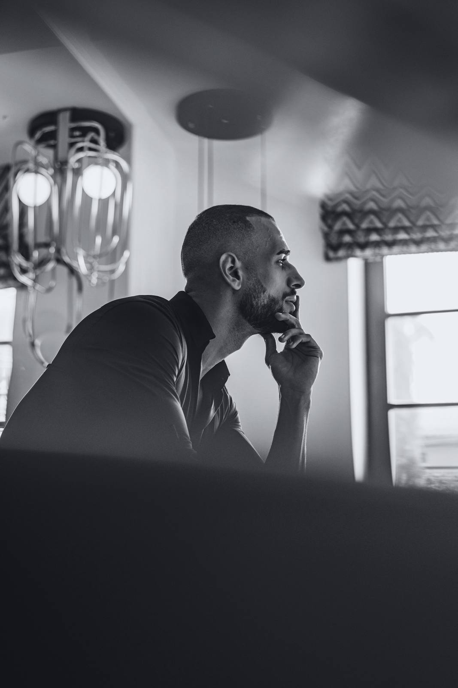
A gente chama isso de caos. E o caos tem um custo.
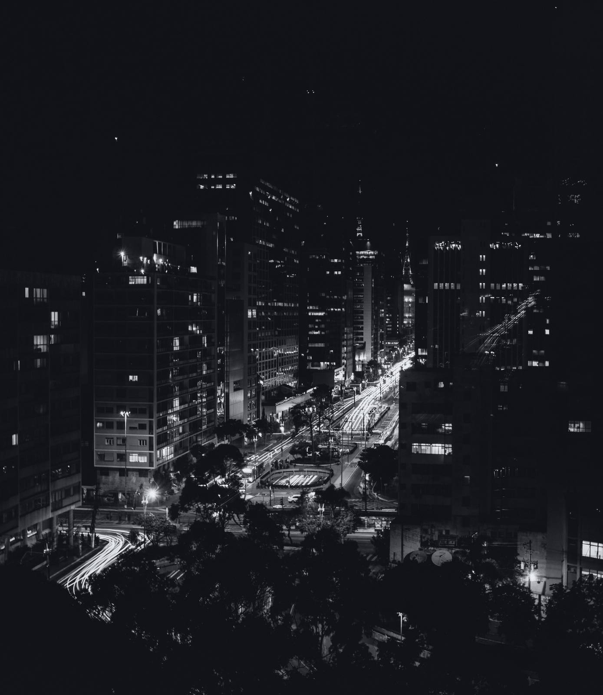
Toda receita tem um gargalo. Os dados dizem qual.
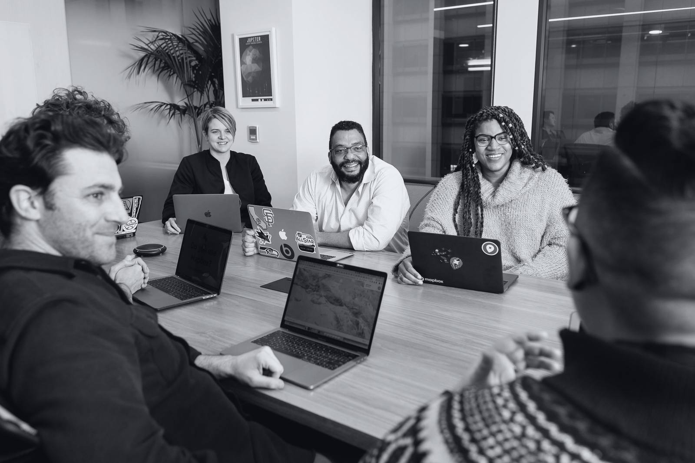
Antes do preço, o que a gente acredita.
Toda receita tem um gargalo. Os dados dizem qual. A GrowAI encontra esse ponto e concentra tudo nele até o ponteiro mexer.
Não automatizamos o caos. Primeiro o processo existe, depois o agente assume.
Post 1080 × 1350 · 4:5
Uma frase do texto, inteira e sem edição. O número da frase no rótulo. Logo pequeno, nenhum botão.
Foco é tecnologia e vamos 10x o seu faturamento, garantido!
Post 1080 × 1350 · 4:5
Frase reescrita, promessa vedada (“10x”, “garantido”), conversa grátis, três laranjas na mesma peça. O manifesto vira anúncio e perde a força.
Use sempre o texto deste bloco. Quebras de linha marcam as frases que viram peça sozinhas. Para gente e para agente: nenhuma palavra muda.
# versão longa Toda empresa que conhecemos tinha gente boa trabalhando muito. E quase todas estavam no escuro. Dado espalhado em seis ferramentas. Cada um fazendo o que acha certo. Um líder que decide pelo relato de quem fala mais alto. A gente chama isso de caos. E o caos tem um custo que não aparece em relatório nenhum: o esforço gasto no sintoma. Não acreditamos em mais ferramenta, mais anúncio e mais lead como resposta para tudo. Acreditamos que toda receita tem um gargalo. E que os dados dizem qual. Por isso começamos pelo número. Escolhemos um ponto. Um só. E concentramos tudo nele até o ponteiro mexer. Depois, o próximo. Não automatizamos o caos. Primeiro o processo existe, depois o agente assume. Não prometemos dez vezes. Mostramos onde trava, com número, e quanto custa deixar como está. Não somos mais uma agência, nem só um sistema. Somos método, sistema e gente, juntos, do primeiro dado à decisão. Para quem quer crescer no achismo, somos a escolha errada. Para quem quer enxergar a própria empresa por inteiro, somos o caminho. Foco é a nossa tecnologia. # versão curta Toda receita tem um gargalo. Os dados dizem qual. A GrowAI encontra esse ponto e concentra tudo nele até o ponteiro mexer. # uma linha Foco é a nossa tecnologia.
Essência
É a crença que sustenta a marca. O cliente compra dado, IA e sistema; o que muda a empresa dele é enxergar o gargalo e concentrar o esforço nele. As seis frases deste capítulo são a régua de tudo o que a GrowAI faz e recusa.
02.1 · A plataforma
Aprovadas pelo fundador em outubro de 2026. Toda peça, toda proposta e todo agente partem delas. Ninguém reescreve; quem precisa adaptar, corta.
O caos.Achismo, dado espalhado, cada um fazendo o que quer, o líder no escuro e o esforço gasto no sintoma.
Toda receita tem um gargalo. Os dados dizem qual.
Fazer empresas decidirem com clareza o que realmente move o ponteiro.
Clareza para decidir, coragem para crescer.
O sistema de foco da sua empresa.
Foco é a nossa tecnologia.
02.2 · O inimigo
Quem escreve para a GrowAI precisa reconhecer o caos na fala do dono. Cada cara tem uma resposta da marca.
“Acho que o problema é o marketing.”
RespostaDado antes de opinião. A conversa começa por um número.
“Tá na planilha, no CRM e no WhatsApp do vendedor.”
RespostaConectar tudo numa fonte só antes de concluir qualquer coisa.
“Cada vendedor tem o jeito dele.”
RespostaProcesso antes de automação. Primeiro o jeito certo existe.
“Eu só sei como foi o mês quando o mês acaba.”
RespostaA restrição atual na tela, toda semana, com número.
“Vamos colocar mais dinheiro em anúncio.”
RespostaUm gargalo por vez. O resto espera.
Dado espalhado custa caro. Você decide sem enxergar.
Fala do estado da empresa. O dono se reconhece sem se sentir acusado.
Seu time é desorganizado e sua agência não entrega.
Culpa o time, o fornecedor ou o concorrente. A marca vira juiz, e o dono se defende em vez de ouvir.
02.3 · A categoria
Os dois convivem e nunca trocam de lugar. A categoria vai no título; a descrição vai onde alguém procura.
Para ser lembrado · categoria
O sistema de foco da sua empresa.
A palavra “foco” afasta a leitura de ferramenta e não é ocupada por ninguém no mercado. Vai no título do site, na capa de proposta, no rótulo de abertura de vídeo e na assinatura de e-mail.
Para ser encontrado · descrição de apoio
Consultoria de RevOps com IA.
RevOps é operação de receita: marketing, vendas e pós-venda tratados como um sistema só. Serve para busca, categoria de perfil, cadastro em diretório e a primeira explicação a quem nunca ouviu falar. Nunca ocupa o lugar da categoria nem aparece como título.
GrowAI · O sistema de foco da sua empresa
Consultoria de RevOps com IA para donos de empresa. Conectamos os dados do negócio, encontramos o gargalo da receita e concentramos o esforço nele. Comece pelo Raio-X do Negócio.
GrowAI
Consultoria de RevOps com IA
O sistema de foco da sua empresa.
Toda receita tem um gargalo. Os dados dizem qual.
Comece pelo Raio-X do Negócio:
growai.com.br/raio-x
02.4 · A transformação
É a história que toda peça conta, inteira ou em parte. Pular um passo é o erro que a GrowAI veio corrigir.
Todos os dados do negócio numa fonte só: marketing, vendas, atendimento e financeiro.
Na peça: “seus dados, numa tela”
O gargalo aparece, com número. É o momento que a marca inteira desenha: o ponto aceso.
Na peça: o ponto laranja do radar
Uma frente por vez, com meta e prazo, até o ponteiro mexer.
Na peça: a restrição atual
Com clareza e coragem para investir no próximo nível.
Na peça: a próxima ação
02.5 · A essência em texto-fonte
Cole este bloco no começo de qualquer pedido a um agente de IA (a Nora ou outro modelo) ou no briefing de quem produz para a GrowAI.
As seis frases, a transformação e o que a marca nunca pode parecer. Quando um texto não bate com este bloco, o texto está errado, não o bloco.
marca: GrowAI categoria: O sistema de foco da sua empresa. descricao_de_apoio: Consultoria de RevOps com IA. # só busca, perfil e 1ª explicação assinatura: Toda receita tem um gargalo. Os dados dizem qual. inimigo: o caos (achismo, dado espalhado, cada um fazendo o que quer, líder no escuro, esforço gasto no sintoma) proposito: Fazer empresas decidirem com clareza o que realmente move o ponteiro. promessa: Clareza para decidir, coragem para crescer. sintese: Foco é a nossa tecnologia. transformacao: conectar → enxergar → destravar → decidir nunca_ser_lido_como: mais uma agência · só um sistema · algo técnico demais fala_com: o dono, sobre negócio (nunca "operação")
Princípios e recusas
Ninguém entra em reunião sem um dado claro e sem foco no gargalo. Os princípios valem de ponta a ponta: documentos, aulas, reuniões, processos e agentes.
03.1 · Quatro princípios
Cada princípio diz como se comporta numa reunião, num documento e num agente. E diz o sinal de que ele quebrou.
Toda conversa começa por um número. Opinião sem número vira pergunta, não decisão.
Foco no que move o ponteiro. As outras ideias boas esperam, por mais boas que sejam.
A GrowAI não automatiza o caos. Primeiro o processo existe, depois o agente assume.
Todo documento, aula, reunião e processo termina num ponteiro e numa próxima ação.
03.2 · Os princípios numa pauta
A pauta da reunião semanal de receita é a peça mais simples da GrowAI e a que mais revela se a marca está viva. Este é o modelo.
 Reunião de receita · semana 40 · exemplo
Reunião de receita · semana 40 · exemploA proposta segue sendo o gargalo.
O número da semana
Restrição atual · a única
Propostas paradas há mais de 9 dias sem retorno.
Processo antes do agente
Ponteiro e próxima ação
| Ação | Responsável | Prazo |
|---|---|---|
| Ligar para as 14 propostas paradas | Líder comercial | sexta |
| Medir o retorno em 48 h | Analista | segunda |
GrowAI Strategy · números de exemplo1 / 1
Oito assuntos, nenhum número, nenhuma restrição, nenhum responsável. É a reunião do caos com o logo da GrowAI.
03.3 · O que a GrowAI recusa
Quatro compromissos públicos. Aparecem no site, na proposta e na primeira conversa, sempre ditos em voz alta.
Na práticaO primeiro passo é sempre ler os números do negócio. Sem acesso ao dado, não há diagnóstico.
Na práticaUma restrição por ciclo, com meta e prazo. Três frentes ao mesmo tempo é a forma mais cara de não mover nenhuma.
Na práticaAgente entra em processo que já existe e foi medido. Automação de processo quebrado só acelera o erro.
Na práticaQuem quer crescer do próprio jeito, sem dado e sem processo, não é cliente da GrowAI.
Não automatizamos o caos.
Três frentes ao mesmo tempo
Diagnóstico sem dado
Agente em processo quebrado
Uma frente. Com número. Até mexer.
Não começamos sem dado.
03.4 · Quem não é cliente
O antiperfil serve para a qualificação, para a copy e para a primeira conversa. Cada perfil tem a pergunta que o revela e a frase que encerra sem fechar a porta.
Decide pela intuição e não quer o número na mesa.
“Você toparia abrir os números do comercial na primeira semana?”
Sem acesso ao dado, a gente não consegue diagnosticar. Quando fizer sentido abrir os números, estamos aqui.
Recusa tirar das mãos do time o que um agente pode fazer.
“Se um agente assumisse o primeiro atendimento, o que impediria?”
Nosso trabalho tira o repetitivo das mãos do time. Se a ideia é manter tudo como está, outro parceiro vai servir melhor.
Muita ideia, nenhuma prioridade, e quer implementar todas.
“Se só uma coisa pudesse melhorar nos próximos 90 dias, qual seria?”
A gente trabalha uma frente por vez. Três frentes juntas é a forma mais cara de não mover nenhuma.
Quem compra
Quem assina é o dono ou um sócio. A GrowAI fala com ele de igual para igual, sobre negócio. Toda peça é escrita para essa pessoa, mesmo quando outra pessoa lê primeiro.
04.1 · O comprador
Construiu o negócio, montou o time, e agora tudo passa por ele. É a pessoa que mais sente o caos e a única que pode decidir sair dele.
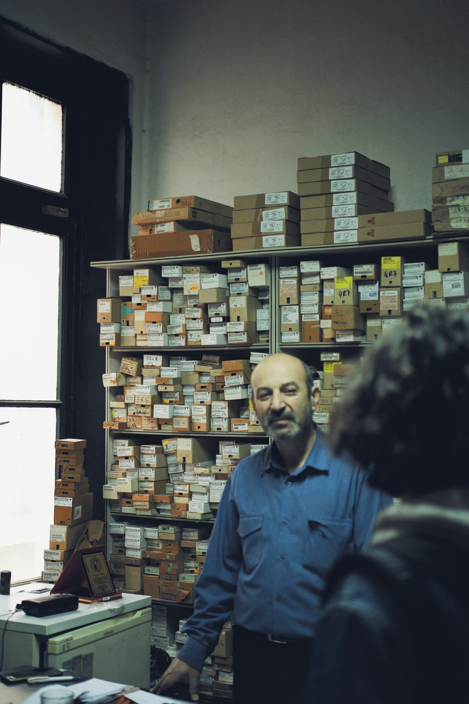
Fatura entre R$ 3 e 20 milhões por ano, já tem time comercial e decide quase tudo sozinho.
negócio · receita · margem · decisão · gargalo · ponteiro
operação · implementação · entregáveis · solução
04.2 · As duas portas
O dono chega por uma de duas frases. Toda peça de aquisição escolhe uma porta e fala só com ela.
Porta 1 · estagnação
“Parou de crescer e eu não sei por quê.”
Porta 2 · crescimento caótico
“Cresci e perdi o controle.”
A porta na peça
Laranja só no botão: quando a peça tem botão, o itálico do título fica na cor do texto. Foto monocromática da mesma pessoa que a porta descreve.
Parou de crescer e não sabe por quê? Os dados sabem.
Cresceu e perdeu o controle? Comece pelo gargalo.
04.3 · A transformação por papel
O dono assina, mas outras três pessoas leem as peças da GrowAI. Cada uma sente a mudança de um jeito e quer ouvir sobre uma coisa.
04.4 · Como queremos ser lembrados
Depois da primeira conversa, o dono resume a GrowAI em uma frase para outro empresário. É essa frase que a marca inteira trabalha para provocar.
Queremos ouvir
Eles conectaram tudo.
Agora eu enxergo a minha empresa por inteiro.
Minhas ideias finalmente saem do papel.
Eles me ajudam a decidir.
Nunca
Mais uma agência.
Só execução, sem método. É o caos de sempre com outro fornecedor.
É só um sistema.
Só plataforma, sem gente. Vira mais uma assinatura que não conversa.
É algo técnico demais.
Só dado, sem decisão. O dono não se vê na conversa.
Cada leitura errada é uma parte da GrowAI vista sozinha: o dado, a plataforma ou a execução. Toda peça mostra pelo menos dois dos três, e a marca assina a soma: método, sistema e gente.
Arquitetura de marca
As linhas são três trechos do mesmo caminho e aparecem sempre na mesma ordem: aprender, organizar, escalar. Cada produto pertence a uma só linha. Se parece caber em duas, está mal definido.
05.1 · O mapa da marca
Uma marca endossando três modos de comprar a mesma GrowAI. Cada linha tem papel, voz e uma esteira de três degraus, da entrada ao topo.
Marca-mãe. A única que leva o Laranja Foco. Assina todas as linhas e todos os produtos.
 1 · Aprender
1 · Aprender
Voz: didática e generosa.
2 · Organizar
Voz: sóbria e exata.
 3 · Escalar
3 · Escalar
Voz: concreta e viva. Categoria: Agent as a Service.
Ordem fixa em toda peça: Educação → Strategy → AgentesPonto cheio = topo ou núcleo da linha
05.2 · Níveis e endosso
Cada nível tem um jeito de aparecer. Quanto mais abaixo, mais o nome descreve o que o cliente recebe e menos ele brilha sozinho.
Laranja FocoÚnica que leva o laranja. Assina tudo: site, proposta, relatório, rede, papelaria.
Cor da linhaNome sempre com “GrowAI” na frente, em lockup de arquivo. O logo não muda de cor; muda só o nome da linha.
Texto da linhaNome próprio que diz o que o cliente recebe. Escrito em texto, nunca vira logo. O endosso da linha vem na primeira menção.
NeutroNome de método ou de categoria, não de produto. Vem explicado em português na primeira menção ao dono: Agent as a Service são agentes de IA contratados como serviço mensal; GTM Engineering é a máquina que gera demanda, operada por agentes.
05.3 · A cor segue o endereço
Na casa da mãe, neutros e laranja. Na casa de uma linha, a cor da linha manda. Em todas, o logo e o botão continuam laranja.
Toda receita tem um gargalo. Os dados dizem qual.
Fazer o Raio-X do Negócio →Neutros com o radar. Laranja no botão. As três cores de linha só no trecho de cada linha.
80% neutros · 10% laranja · 10% linhasPainel · Semana 40A restrição desta semana é a proposta parada.
Azul Cobalto como cor principal: fundo claro da linha, cartão em destaque, lockup. Logo e botão seguem laranja. Números de exemplo.
60% neutros · 30% cobalto · 10% laranja
Raio-X do Negócio · 3 de 12
Quantas propostas o time envia por semana?
Framboesa como cor principal da GrowAI Educação: faixa, progresso, opção escolhida. Pergunta de exemplo: as perguntas do Raio-X ainda são pendência.
62% neutros · 28% framboesa · 10% laranja05.4 · Regras da esteira
O caminho do cliente tem uma porta de entrada, um degrau obrigatório e duas linhas de chegada. Esta é a ordem que toda copy, todo botão e todo agente respeitam.
Grátis com cadastro. A GrowAI conhece a pessoa e a empresa antes de conversar.
Pago. O gargalo provado, com número. Abatido se fechar a consultoria.
Uma frente por ciclo, com meta e prazo.
Só em processo que já existe e foi medido.
A porta de entrada é o Raio-X do Negócio, com cadastro. Depois vem o Diagnóstico do Gargalo, que é pago.
O cliente pode pular a Educação. Ninguém chega ao núcleo ou aos Agentes sem o gargalo provado.
Todo produto fica no caminho da receita do cliente: desligar tem de doer. O que dá para desligar sem sentir não entra.
| Nunca escreva | Escreva | Por quê |
|---|---|---|
| Consultoria gratuita | Raio-X do Negócio | A entrada é um produto com cadastro, não uma conversa. |
| Sessão estratégica grátis | Diagnóstico do Gargalo | O diagnóstico é pago e tem entrega: o gargalo com número. |
| Conversa sem compromisso | Fazer o Raio-X do Negócio | O botão diz o que acontece depois do clique. |
| Agende uma call | Fazer o Raio-X do Negócio | É o único botão de ação do site da marca-mãe. |
Deslize a tabela para o lado →
05.5 · Nomenclatura de produto
Produto da GrowAI não tem nome fantasia. Quem lê o nome entende a entrega antes de ler a descrição. Regras de grafia fixadas nesta versão do manual.
Teste do nome · cinco perguntas
O jeito certo de escrever cada nível, na primeira menção e nas seguintes.
# primeira menção Raio-X do Negócio, da GrowAI Educação Diagnóstico do Gargalo, da GrowAI Strategy RevOps AI Native, o método da GrowAI: marketing, vendas e pós-venda funcionando como um só time, com dado único e IA de ponta a ponta GTM Engineering, o topo da GrowAI Agentes: a máquina de demanda operada por agentes # menções seguintes o Raio-X · o Diagnóstico · o Strategy · os Agentes # nunca consultoria gratuita · sessão estratégica grátis · robô · bot GrowAI CRM · GrowAI Saúde · Strategy Pro · Agentes Premium
05.6 · Co-branding e endossos
Antes de juntar duas marcas, pergunte de quem é a peça. São três casos, e cada um tem uma hierarquia. O desenho dos lockups está no capítulo 09.

Diagnóstico do Gargalo
Relatório final · outubro de 2026Onde a receita trava em empresas de serviço.
Cuidado que começa na primeira consulta.
Agendar avaliaçãoLogos em arquivo, versões de uma cor quando os dois têm cor própria, mesmo peso, filete entre eles.
Logo GrowAI na cor do parceiro, marcas coladas com “+”, parceiro maior numa peça da GrowAI. Também vale para “GrowAI powered by” uma ferramenta: ferramenta não endossa a GrowAI.
Valores para quem monta a peça. A unidade “o” é a altura da letra “o” do logo GrowAI na peça.
<!-- caso B: GrowAI + parceiro, mesmo peso --> <div class="co-lockup"> <img src="assets/growai-logo-oficial.svg" alt="GrowAI"> <span class="filete" aria-hidden="true"></span> <img src="parceiro.svg" alt="Nome do parceiro"> </div> .co-lockup{display:flex;align-items:center;gap:.42em;font-size:48px} .co-lockup img{height:1em;width:auto} /* mesma altura */ .co-lockup .filete{width:1px;height:1.3em;background:#E4E7EB}
05.7 · O que não é linha
Ingredientes e verticais existem, aparecem nas conversas e nos exemplos, mas nunca viram marca. É assim que três linhas continuam sendo três.
Ferramentas que a GrowAI usa para entregar. Ficam dentro do Strategy e servem de base para os Agentes. Nunca são vendidas sozinhas e nunca aparecem como produto.
Dentro do portal Strategy e em toda peça, ferramenta de terceiro é chamada só pelo papel (“CRM”, “modelo de IA”), nunca pela marca.
Mudam o exemplo, o modelo pronto e o número de referência, sempre dentro da cor da linha. Nenhuma vertical tem cor, logo ou esteira própria.
Diagnóstico do Gargalo, com o modelo pronto para clínicas.
A vertical entra como complemento do texto, na cor da linha a que o produto pertence.
Vertical com nome de marca e cor própria. Cria uma quarta linha que ninguém aprovou e quebra o caminho de três trechos.
O “g” da GrowAI é feito de três peças geométricas, medidas no arquivo original. Este capítulo mostra cada uma, com os números para reconstruir o logo sem adivinhar nada.
06.1 · O que o “g” diz
O logo atual continua. A leitura dele é a do sistema inteiro: varrer, apontar, encontrar o ponto. Cada peça tem um papel, e nenhuma pode ser tirada.
Um círculo fechado com um furo. É o olhar que varre o negócio inteiro, sem deixar canto de fora.
R 76,75 · furo r 42,13Nasce no eixo do anel e sai para a direita, rente ao topo. Aponta a direção: é ela que leva o olhar para o resto do nome.
97,53 × 33,37Meio círculo, aberto para cima. Sustenta o anel e não fecha: depois de um gargalo resolvido, o radar gira de novo.
R 75,22 · r 40,23As três peças juntas, num degradê que vai do laranja-amarelado ao vermelho-laranja, da esquerda para a direita.
174,28 × 234,17Quem olha o “g” vê uma letra. Quem conhece a GrowAI vê o método: varrer tudo, apontar uma direção, resolver um ponto.
Esta leitura é para quem fala da marca (site, palestra, proposta). O logo não precisa de legenda: nunca escreva “radar” ao lado dele numa peça.
06.2 · Grade de construção
A unidade é a do arquivo vetorial: 1 unidade vale 10 px do PNG original de 7856 px. O logo inteiro mede 613,68 × 234,17.
Deslize a grade para o lado →
O ponto laranja marca o centro do anel: é ali que o avatar acende o ponto de foco (capítulo 07). As medidas vêm de assets/marca.json, campo anatomia.
06.3 · Proporções
Se uma ferramenta pedir medidas para recompor o logo, são estas. Qualquer peça que mude uma delas está usando outro logo.
Largura dividida pela altura (613,68 ÷ 234,17). Nunca estique para caber.
A altura do “o” é 97,9 unidades. É a régua do respiro (capítulo 08).
O “g” ocupa 174,28 da largura total. As letras “rowai” ficam com o resto.
O “g” isolado é mais alto que largo: 174,28 × 234,17.
Use sempre o arquivo. Os números abaixo servem para conferir uma exportação, programar um gerador ou explicar a construção a um fornecedor.
"anatomia": {
"g_anel": { "cx": 76.75, "cy": 76.76, "r_externo": 76.75,
"furo_cx": 75.88, "furo_cy": 75.46, "r_furo": 42.13 },
"g_haste": { "x_direita": 174.28, "y_topo": 0, "y_base": 33.37 },
"g_arco": { "cx": 76.75, "cy": 158.95, "r_externo": 75.22,
"r_interno": 40.23, "corte_y": 158.67 },
"largura": 613.68, "altura": 234.17,
"altura_x": 97.9, "linha_de_base": 145.27
}06.4 · Fidelidade do vetor
O arquivo vetorial original do logo não foi encontrado. Os SVGs deste pacote foram redesenhados sobre o PNG de 7856 px e comparados com ele.
É a sobreposição entre a reconstrução e o original: a área que os dois têm em comum, dividida pela área que os dois ocupam juntos. Na comparação de cor, só 332 de 1.148.198 pixels divergem (0,03%), e a diferença média é de 0,33 num total de 255 níveis.
Cada quadrado representa cerca de 1.400 pixels do logo. O laranja é a parte que diverge, desenhada maior do que é, só para ser vista.
Pedir o arquivo vetorial original a quem criou o logo. Até lá, a reconstrução é o arquivo oficial.
06.5 · O nome escrito
Uma marca que vende foco não pode ter três grafias para o próprio nome. No texto, em qualquer peça, contrato ou bio, escreva GrowAI.
Em todo texto, título, contrato, bio, assinatura e e-mail. G maiúsculo, “AI” em maiúsculas, sem espaço.
As minúsculas “growai” existem só no desenho do logo. Nunca digite o nome assim para imitar a marca.
Grafia antiga, aposentada nesta versão. Também vale para Grow AI, GrowAi, GROWAI e Grow.AI. Ao encontrar uma, corrija. Exceção: domínio e endereço vão sempre em minúsculas (growai.com.br/raio-x).
O logo tem quatro versões de cor e um símbolo em três. Quem escolhe a versão é o fundo, não o gosto. O degradê do “g” é o único laranja da marca que nunca muda.
07.1 · As versões
Oficial no dia, claro na noite. Juntas cobrem o site, as redes, os documentos e as apresentações. As outras existem para quando essas duas não funcionam.
“g” em degradê, letras #0C0F14. Padrão em fundo claro: site, documento, proposta, e-mail.
“g” em degradê, letras #FFFFFF. Padrão na noite: capa, primeira dobra, vídeo, painel.
Impressão a uma cor, carimbo, gravação a laser, contrato em escala de cinza. Também é a versão sobre o laranja e sobre o Verde Pulso.
Vazado sobre Framboesa e Cobalto, ou sobre foto em que o degradê se perde. No Verde Pulso, use o preto.
Só a versão preta. Uso raro: brinde, faixa de evento.
Símbolo
Para espaços quadrados ou estreitos, para tamanhos abaixo do mínimo do logo (capítulo 08) e como marca d’água. As regras de cor são as do logo inteiro.
growai-simbolo-oficial.svg · -branco.svg · -preto.svg
 oficial
oficial07.2 · O degradê medido
As duas cores não foram escolhidas: foram medidas em 1,1 milhão de pixels do “g” no arquivo original. O degradê corre na horizontal e cobre só a largura do “g”.
Como a cor anda dentro do “g”
Regressão por coluna sobre o PNG de 7856 px. Erro médio de 1,7 níveis no verde e 0,5 no azul, numa escala de 0 a 255: o degradê do original é linear.
<!-- unidades do vetor: vai de 0 a 174.28 --> <linearGradient id="growai-g" gradientUnits="userSpaceOnUse" x1="0" y1="0" x2="174.28" y2="0"> <stop offset="0" stop-color="#FE9426"/> <stop offset="1" stop-color="#FF1A05"/> </linearGradient> /* só para recriar o "g" em outra mídia */ --g-ini:#FE9426; --g-fim:#FF1A05; --g-degrade:linear-gradient(90deg,var(--g-ini),var(--g-fim));
07.3 · Qual versão em qual fundo
O número em cada fundo é o contraste das letras do logo contra ele. Marca gráfica pede no mínimo 3 para 1; todas as combinações abaixo passam.
Contraste pela fórmula das diretrizes de acessibilidade da web (WCAG 2.1). No Verde Pulso o branco daria só 3,05 : 1; por isso ali o logo é sempre preto.
07.4 · Símbolo, avatar e favicon
O avatar é o único lugar em que o anel ganha o ponto de foco no centro. Ele é desenhado para caber no recorte redondo das redes sem encostar na borda.
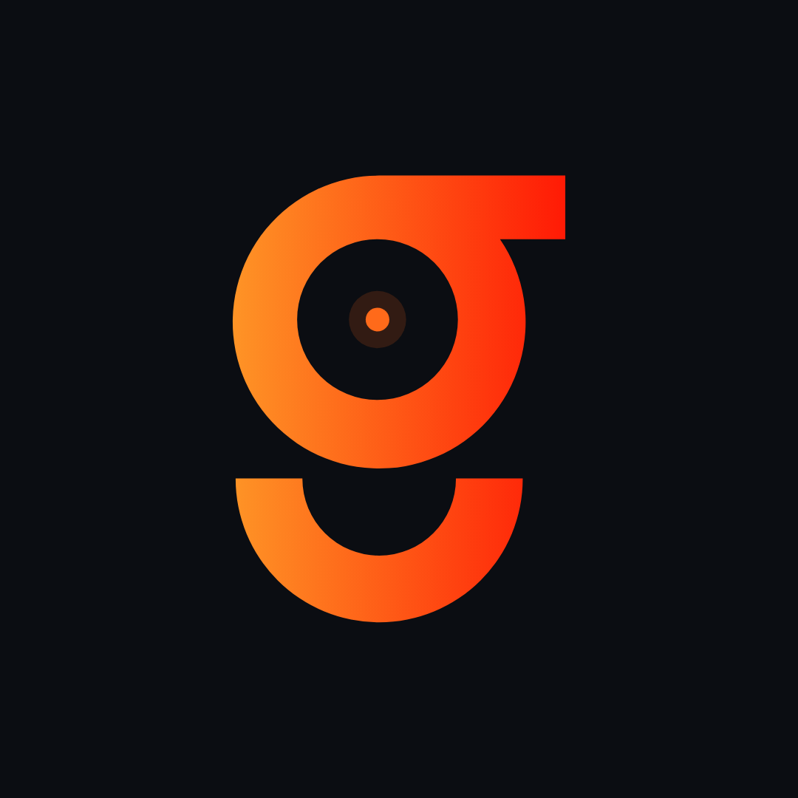
Fig. 07.4Recorte redondo. O tracejado é o círculo que Instagram, LinkedIn e WhatsApp mostram. O “g” ocupa 56% da altura.
Em 16 px o vão entre o anel e o arco fecha e o “g” vira uma mancha. No favicon o arco desce 7 unidades para o vão continuar aberto. Esse desenho não pode ser usado acima de 48 px.
07.5 · Logo sobre fotografia
Posicione o logo na área mais calma da imagem, longe do rosto e das mãos. Se a área calma é escura, versão clara; se é clara, oficial. Sem área calma, troque a foto ou use a versão duotone.
Logo claro no canto, sobre a parede escura. A pessoa fica livre e o logo é lido de primeira.
Logo oficial no meio da cena, sobre a pessoa. As letras escuras somem na sombra e o logo disputa atenção com o rosto.
Um logo apertado vira palavra solta. Com ar em volta, ele é lido como assinatura. Este capítulo diz quanto ar, qual o menor tamanho e onde o logo fica em cada formato.
08.1 · A área de proteção
O respiro mínimo é x, a altura do “o” do próprio logo. Ele vale nos quatro lados e cresce junto com o logo. Nada entra nessa área: texto, foto, borda da peça, outro logo.
Calculadora
Vale para px ou mm: a resposta sai na mesma unidade. Arredonde o respiro para cima.
08.2 · Tamanhos mínimos
Os logos desta escada estão em tamanho real numa tela comum. Repare onde as letras de “rowai” deixam de ser lidas: é ali que o símbolo assume.
Primeira dobra de site, capa de documento, cabeçalho de proposta.
Barra de navegação, rodapé, assinatura de e-mail.
O menor logo inteiro permitido na tela: cerca de 31 px de altura.
As letras viram mancha. Neste espaço, use o símbolo.
Botão de app, cabeçalho compacto no celular, marca d’água.
Largura mínima do “g” oficial (27 px de altura).
Abaixo de 20 px, só o desenho próprio do favicon (capítulo 07).
| Versão | Tela | Impresso | Abaixo disso |
|---|---|---|---|
| Logo | 80 px | 22 mm | símbolo |
| Símbolo | 20 px | 6 mm * | favicon |
| Lockup de linha | 160 px | 44 mm | logo, com a linha escrita no texto |
| Favicon | 16 px | não se aplica | nada menor |
Deslize a tabela para o lado →
* Mínimo impresso do símbolo: a validar em prova de gráfica. Em tela, o papel ao lado mostra 22 mm por aproximação; a medida exata depende do monitor.
08.3 · Posição em cada formato
Em toda peça o logo encosta na margem da grade, nunca na borda do arquivo. Ele assina; quem chama a atenção é o título ou o número.
Linhas azuis: margem e caixa do logo. São guias de construção, não fazem parte da peça.
O dono não precisa de mais um relatório. Precisa de uma decisão.
Onde a sua receita trava?
Toda receita tem um gargalo. Os dados dizem qual.
A receita trava na proposta, não no lead.
Onde a receita trava hoje.
Os números deste modelo são de exemplo.
Nome Sobrenome
Cargo · growai.com.br| Formato | Arquivo | Margem | Altura do logo | Largura | Posição |
|---|---|---|---|---|---|
| Post | 1080 × 1350 | 80 px | 44 px | 115 px | inferior esquerdo |
| Story e reels | 1080 × 1920 | 80 px · topo 290 | 52 px | 136 px | superior esquerdo, abaixo da faixa de 250 px |
| Compartilhamento | 1200 × 630 | 64 px | 40 px | 105 px | superior esquerdo |
| Slide | 1920 × 1080 | 120 px | 40 px · capa 64 | 105 · 168 px | superior direito · capa: superior esquerdo |
| Banner LinkedIn | 1584 × 396 | 56 px | 40 px | 105 px | direita (a foto de perfil cobre a esquerda) |
| Thumbnail | 1280 × 720 | 56 px | símbolo 64 px | 48 px | superior esquerdo |
| A4 | 210 × 297 mm | 17 mm | 9 mm | 23,6 mm | superior esquerdo |
| Cartão | 85 × 55 mm | 5,5 mm | 9 mm | 23,6 mm | frente: centro · verso: símbolo no canto |
Deslize a tabela para o lado →


O logo nunca muda de cor para acompanhar uma linha. Quem muda é o nome ao lado dele. E quando a GrowAI divide a mesa com um cliente ou um parceiro, a regra de quem assina primeiro já está escrita.
09.1 · Anatomia do lockup
O lockup é um arquivo pronto, com o nome da linha já convertido em contorno. Use o SVG; nunca monte um à mão digitando o nome ao lado do logo.
Seis arquivos: três linhas em versão dia e noite. Cada um tem PNG de 960 px para quem não usa SVG.
<!-- strategy.growai.com.br · fundo claro --> <a class="marca" href="/"> <img src="growai-linha-strategy-dia.svg" alt="GrowAI Strategy" width="187" height="38"> </a> /* altura mínima: 33 px (160 px de largura) */ .marca img{height:38px;width:auto}
09.2 · As três linhas
Quando as três aparecem juntas, a ordem é a da jornada do cliente. No dia, o nome usa a cor de texto da linha; na noite, a cor clara da linha.
dianoitedianoitedianoite09.3 · O lockup em uso
Página, painel ou material de uma linha usa o lockup no lugar do logo. Fora dele (site da mãe, proposta institucional, redes da GrowAI) vale o logo sozinho.
MétodoSistemaCasosEntrar
A receita organizada numa tela, com o gargalo da semana no topo.
Agendar o Diagnóstico do Gargalo →
Painel dos agentes · hoje
3 agentes rodando. 1 pede sua decisão.
09.4 · Co-branding com cliente e parceiro
Três situações cobrem quase tudo. Em todas, os logos ficam na mesma altura visual, separados por espaço x e um filete. A GrowAI nunca encolhe o logo de ninguém para parecer maior.
Relatório, painel e apresentação feitos para o cliente. O assunto é a empresa dele: o logo dele abre a peça e a GrowAI assina embaixo, com o lockup da linha.
cliente no topo · “Preparado por” + lockup da linha no péWebinar, aula, estudo conjunto. Os dois logos lado a lado, com o mesmo peso. Quem organiza vem à esquerda.
anfitrião | parceiro · mesma altura visualPágina de venda, anúncio, e-mail do cliente para os clientes dele. Só a marca do cliente. A GrowAI não aparece, nem em selo de rodapé.
só o clienteDeslize o diagrama para o lado →
“Empresa Exemplo” e “Parceiro Exemplo” são marcas fictícias, criadas só para este manual.
A proposta parada é o gargalo deste mês.
Números de exemplo. O relatório real usa os dados do cliente com fonte e período.
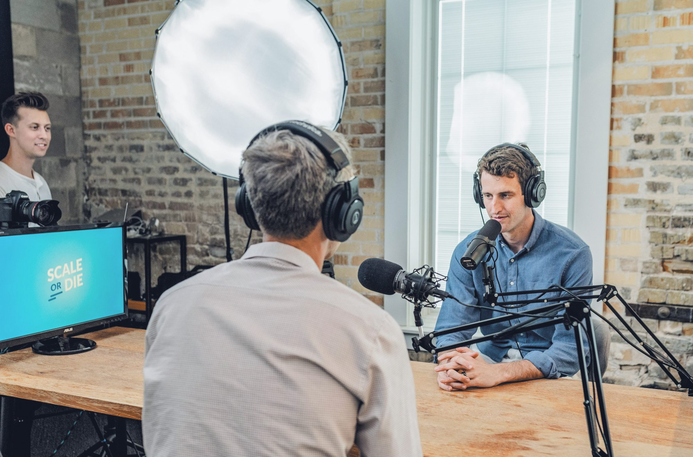
Como achar o gargalo da receita em 30 minutos.
Agende sua avaliação.
Página de venda do cliente, com a identidade dele. Texto de exemplo.
Agendar avaliação09.5 · O que não fazer
Lockup e co-branding existem para deixar claro de quem é a peça. Estes três desfazem essa clareza.
CRM, central de dados e modelos de IA são ingredientes do trabalho, não produto. Em peça de venda, logo de ferramenta não entra ao lado do logo GrowAI. Se a empresa da ferramenta for coanfitriã de um evento, vale a situação 2.
Lockup de linha, cliente e parceiro encadeados. Co-branding é de duas marcas: use o logo da mãe ou o lockup, nunca os dois junto de outra marca.
Um logo gigante e outro espremido, sem filete e sem espaço. Em peça conjunta, a altura visual é a mesma para os dois.
Nenhum erro desta lista é raro: todos já aconteceram com alguma marca, quase sempre por pressa. Cada um vem com a correção ao lado. Na dúvida, volte ao arquivo original e ao capítulo 07.
10.1 a 10.3 · Os doze erros
Os três erros mais frequentes vêm primeiro, ao lado do jeito certo. Os outros nove seguem em formato compacto. Toda peça riscada está errada de propósito: não copie.
Para caber num espaço, alguém puxa a lateral. O “g” vira oval e as letras engordam. Faça: trave a proporção de 2,62 por 1 e mude só o tamanho. Se o espaço é estreito, use o símbolo sozinho.
O “g” em Cobalto para “combinar” com a Strategy. A linha não muda o logo: a cor dela mora no nome da linha, ao lado. Faça: use o lockup da linha (capítulo 09).
Logo sobre prateleiras, rostos e reflexos. Some em segundos. Faça: procure a parede lisa ou a sombra grande, use a versão que contrasta com ela, ou troque a foto.
Os outros nove · compactos
Inclinado “para dar movimento”, o logo perde a linha de base que o faz parecer firme. Faça: logo sempre na horizontal; o movimento vem da animação oficial (capítulo 11).
O “g” empilhado sobre o nome, separado ou trocado de lado. Isso cria outro logo. Faça: espaço estreito pede o símbolo sozinho.
“growai” digitado numa fonte qualquer, com o “g” pintado de laranja. Parece próximo e é outra marca. Faça: use o SVG de assets/.
Com menos de 80 px de largura, “rowai” vira mancha. Faça: abaixo de 80 px, só o símbolo; abaixo de 20 px, o favicon.
Degradê vertical, invertido ou com uma terceira cor. Faça: horizontal, de #FE9426 à esquerda a #FF1A05 à direita.
Quando o nome inteiro fica laranja, o “g” deixa de ser o ponto aceso. Faça: letras em #0C0F14 no dia ou #FFFFFF na noite.
Letras escuras sobre a noite: sobra um “g” solto no escuro. O mesmo vale para o oficial sobre Cobalto, Framboesa ou Verde Pulso. Faça: claro na noite; branco sobre Framboesa e Cobalto, preto sobre Verde Pulso e laranja.
Neon e reflexo são a estética de “tecnologia” que a GrowAI recusa. Faça: logo chapado, sem nenhum efeito, em qualquer mídia.
Título, borda ou outro elemento colado no logo. Faça: deixe livre a altura do “o” nos quatro lados (capítulo 08).
10.4 · Teste dos cinco segundos
Se a resposta de qualquer uma for “não”, a peça volta. Vale para quem desenha, para quem revisa e para os agentes que produzem peças com a skill da marca.
assets/, nunca redigitado, nunca tirado de print.Logo GrowAI · teste dos cinco segundos
[ ] Arquivo original de assets/ (nada redigitado)
[ ] Versão certa para o fundo: oficial no claro, claro na noite,
branco sobre Framboesa e Cobalto, preto sobre Verde Pulso e laranja
[ ] Forma intacta (proporção 2,62:1, sem girar, sem recolorir)
[ ] Respiro = altura do "o"; largura mínima 80 px / 22 mm
[ ] Sem efeito, sem caixa, sobre área calmaEm 1,7 segundo o logo conta o método: olha o negócio inteiro, aponta uma direção e encontra o ponto. É o único movimento permitido ao logo.
11 · Logo em movimento1.700 ms · 6 gestos
11.1 · A revelação, passo a passo
Cada peça do “g” entra na ordem em que o método trabalha. Nada gira, quica ou brilha. A barra laranja na linha do tempo acompanha a animação.
11.2 · Curvas e durações
Três curvas fazem todo o movimento da marca. São as mesmas do capítulo 21 e já existem como variáveis na casca do site.
cubic-bezier(.22, 1, .36, 1)
Chega depressa e assenta devagar. Usada no ponto e no arco: o que acende.
cubic-bezier(.16, 1, .3, 1)
Ainda mais decidida no início. Usada na haste e no nome: o que aponta e o que chega.
cubic-bezier(.4, 0, .2, 1)
Acelera e desacelera por igual. Usada na varredura do anel: um giro firme, sem pressa.
Logo inteiro: abertura de vídeo, telão, primeira visita ao site.
Só o símbolo: abertura de app, tela de carregamento, story.
Revelação, assinatura em 1,9 s e endereço em 2,2 s; fica parado até o fim.
Até a revelação completa. Ninguém espera um logo.
11.3 · Versões
As três versões usam os mesmos gestos. Muda o que aparece e quanto tempo fica na tela. As peças estão no formato real de cada uso.
11.4 · Regras e código
O logo se move para abrir ou fechar alguma coisa. Depois fica quieto, porque o assunto da tela é outro.
A animação desta página é a referência. Os arquivos finais de vídeo e a versão em Lottie para aplicativo ainda precisam ser exportados a partir dela.
/* SVG com: .a-varre (círculo no mask, pathLength=100), .a-haste, .a-ponto, .a-arco-base, .a-arco, .a-letras (rect no clipPath) */ .a-haste,.a-letras{transform-box:fill-box;transform-origin:0 50%} .a-ponto{opacity:0;transform-box:fill-box;transform-origin:center} .toca .a-varre{animation:varre 720ms cubic-bezier(.4,0,.2,1) both} .toca .a-haste{animation:haste 360ms cubic-bezier(.16,1,.3,1) 520ms both} .toca .a-ponto{animation:ponto 400ms cubic-bezier(.22,1,.36,1) 720ms both} .toca .a-arco-base{animation:chega 200ms cubic-bezier(.22,1,.36,1) 880ms both} .toca .a-arco{animation:acende 360ms cubic-bezier(.22,1,.36,1) 1000ms both} .toca .a-letras{animation:revela 600ms cubic-bezier(.16,1,.3,1) 1100ms both} @keyframes varre {from{stroke-dashoffset:100}to{stroke-dashoffset:0}} @keyframes haste {from{transform:scaleX(0)}to{transform:scaleX(1)}} @keyframes ponto {0%{opacity:0;transform:scale(.3)}35%{opacity:1;transform:scale(1)} 100%{opacity:0;transform:scale(2.4)}} @keyframes chega {from{opacity:0;transform:translateY(14px)}to{opacity:1}} @keyframes acende{from{opacity:0}to{opacity:1}} @keyframes revela{from{transform:scaleX(0)}to{transform:scaleX(1)}} @media (prefers-reduced-motion:reduce){ .toca *{animation:none!important} /* logo pronto, parado */ }
Esta página tem a proporção de uma peça GrowAI: quatro quintos de neutro, uma faixa de laranja e um fio de cada linha. O laranja aparece só onde está o foco. Se ele estiver em todo lugar, não está em lugar nenhum.
12.1 · A paleta
A paleta inteira cabe em uma frase: o Laranja Foco marca o que importa, Noite e Dia fazem o trabalho pesado e cada linha tem uma cor que identifica. Clique em qualquer amostra para copiar o código.
Onde entra: o ponto de foco do Radar, o botão de ação, o “g” do logo e o itálico do título na noite. No dia, o itálico do título usa o Laranja Título #D9530C.
Onde nunca entra: fundo de página, texto corrido, ícone decorativo, série inteira de gráfico.
Área, ponto, botão, itálico na noite. Nunca texto no dia.
Itálico de título de 24 px para cima, no dia.
Link, rótulo e itálico abaixo de 24 px.
Link e rótulo laranja sobre Noite.
Texto sobre a base: branco, só em tamanho grande ou negrito (4,43:1).
A linha núcleo. Texto sobre a base: branco (5,52:1).
Texto sobre a base: sempre escuro #0C0F14 (6,30:1). Branco não.
#0B7A56 · --bomO indicador está dentro da faixa combinada.
#B54708 · --atencaoFora da faixa há poucos dias. Vale olhar.
#B42318 · --criticoReceita em risco. Vem sempre com a ação sugerida.
12.2 · Proporção
A conta vale para o institucional, medida na área visível da peça. Um endereço de linha troca a cor principal (12.4), mas o laranja continua raro: logo, botão e o ponto de foco.
Capa, primeira dobra, painel, radar.
Leitura, explicação, relatório.
Logo, botão, ponto, um itálico.
Selo, faixa, ícone e gráfico de cada linha.
Falta de lead raramente é o problema. O problema é onde ele trava.
A receita trava na passagem para proposta.
62%
9
O sistema que mostra onde a receita trava.
Consultoria de RevOps com IA: conecta os dados, encontra o gargalo e acompanha até o ponteiro mexer.
Fazer o Raio-X do Negócio →12.3 · O degradê do “g”
O símbolo vai de um laranja-amarelado na borda esquerda a um vermelho-laranja na direita. As duas pontas foram medidas no arquivo original, não escolhidas no olho.
Medição: regressão coluna por coluna sobre 1,1 milhão de pixels opacos do “g” no arquivo de 7.856 px. O vermelho fica quase constante; o verde e o azul caem em linha reta. O erro médio é de 1,7 nível em 255. Por isso o degradê é linear, horizontal e sem variação vertical.
O degradê fica no símbolo. O botão ao lado usa o laranja chapado #FF6A1A com texto escuro.
Degradê fora do “g” vira enfeite: espalha o laranja, apaga o ponto de foco e derruba o contraste.
Use o arquivo pronto do logo. Recriar o degradê só vale para animação do símbolo ou exportação vetorial, sempre com estes valores.
<!-- dentro do <defs> do símbolo --> <linearGradient id="growai-g" gradientUnits="userSpaceOnUse" x1="0" y1="0" x2="174.28" y2="0"> <stop offset="0" stop-color="#FE9426"/> <stop offset="1" stop-color="#FF1A05"/> </linearGradient> --g-degrade: linear-gradient(90deg, #FE9426 0%, #FF1A05 100%);
12.4 · A cor segue o endereço
No site da marca-mãe, neutros e laranja. Numa página ou num endereço de linha, a cor da linha assume faixa, selo, ícone e gráfico. Em todos os casos o logo não muda e o botão continua laranja.
Toda receita tem um gargalo. Os dados dizem qual.
Fazer o Raio-X do Negócio →Neutros em cerca de 80%. Laranja no logo, no único botão e no ponto do radar. O menu leva ao mesmo Raio-X por link de texto.
Aprender, organizar, escalar.
GrowAI Educação
Você aprende o método e aplica no seu negócio.
GrowAI Strategy
A GrowAI organiza a receita junto com você.
GrowAI Agentes
Agentes trabalham dentro da sua receita.
As três cores juntas, cada uma no seu trecho e na ordem certa. O botão segue laranja.
DiagnósticoUma decisão por trimestre. A certa.
Agendar o diagnóstico →Propostas paradas há mais de 9 dias
41%
29%
12%
A cor da linha vira a principal. Logo em lockup oficial, um botão laranja com texto escuro e o mesmo convite no menu: diagnóstico.
Começar a trilhaLeia o próprio funil antes de mexer nele.
6 aulas · 48 minutos · exemplo
Onde o lead se perde
A etapa que segura o resto
Ler um número sem achismo
Fundo claro e base Framboesa no lugar dos neutros. Texto da linha em #A82259.
Deslize a tabela para o lado →
| Onde | Cor principal | Laranja | Logo |
|---|---|---|---|
| growai.com.br e materiais da GrowAI | Neutros (cerca de 80%) | Logo, botão, ponto de foco | Oficial ou claro |
| Seção do caminho, dentro do site | As três cores, cada uma no seu trecho | Botão | Oficial ou claro |
| Páginas de linha (/strategy, /agentes, /educacao) | Cor da linha em faixa, selo, ícone e gráfico | Logo e botão | Oficial ou claro |
| Endereço próprio da linha | A cor da linha como principal | Logo e botão | Lockup da linha |
12.5 · Contraste medido
Cada combinação usada neste livro foi medida pela regra de contraste da web (WCAG 2.2). Texto comum precisa de 4,5 para 1; texto grande (24 px, ou 19 px em negrito) e ícone, de 3 para 1. O que reprova está marcado e não vira texto.
| Combinação | Contraste | Nível | Uso permitido |
|---|---|---|---|
| #170A02 sobre Laranja Foco | 6,78 : 1 | AA | Texto do botão |
| Branco sobre Laranja Foco | 2,87 : 1 | reprova | Nunca em texto, nem grande |
| Laranja Foco sobre Noite | 6,78 : 1 | AA | Itálico do título, ponto, ícone de foco |
| Laranja Foco sobre branco | 2,87 : 1 | só área | Ponto, botão, área. Nunca texto |
| Laranja Foco sobre #F6F7F8 | 2,67 : 1 | reprova | Nunca texto; só ponto e botão |
| Laranja Título #D9530C sobre branco | 4,04 : 1 | AA grande | Itálico de título no dia, de 24 px para cima |
| Laranja Título #D9530C sobre #F6F7F8 | 3,77 : 1 | AA grande | Itálico de título em superfície |
| #B33E0A sobre branco | 5,82 : 1 | AA | Link, rótulo, itálico abaixo de 24 px |
| #B33E0A sobre #F6F7F8 | 5,42 : 1 | AA | Link em superfície |
| #FF8A4C sobre Noite | 8,32 : 1 | AAA | Link e rótulo na noite |
| Título #EEF1F5 sobre Noite | 17,15 : 1 | AAA | Título e texto |
| Apoio #9AA3B2 sobre Noite | 7,64 : 1 | AAA | Texto de apoio |
| Apoio #9AA3B2 sobre #141821 | 6,98 : 1 | AA | Apoio em cartão noturno |
| Apoio #9AA3B2 sobre #1B2130 | 6,32 : 1 | AA | Apoio em superfície 2 da noite |
| Título #0C0F14 sobre branco | 19,19 : 1 | AAA | Título e texto |
| Apoio #4A525E sobre branco | 7,90 : 1 | AAA | Texto de apoio |
| Framboesa texto sobre branco | 6,91 : 1 | AA | Texto da linha |
| Cobalto texto sobre branco | 8,54 : 1 | AAA | Texto da linha |
| Verde texto sobre branco | 5,34 : 1 | AA | Texto da linha |
| Verde texto sobre #E5F7EF | 4,80 : 1 | AA | Texto em fundo claro da linha |
| Branco sobre Framboesa base | 4,43 : 1 | só grande | Título, selo em negrito |
| Branco sobre Cobalto base | 5,52 : 1 | AA | Texto |
| #0C0F14 sobre Verde Pulso base | 6,30 : 1 | AA | Texto |
| Branco sobre Verde Pulso base | 3,05 : 1 | só grande | Evitar por decisão da marca: texto sobre a base é #0C0F14 |
| Cobalto sobre noite #8FA8FF | 8,53 : 1 | AAA | Série e texto da linha na noite |
| Framboesa sobre noite #FF8DB8 | 9,03 : 1 | AAA | Série e texto da linha na noite |
| Verde sobre noite #3DDC9F | 11,05 : 1 | AAA | Série e texto da linha na noite |
| Atenção #B54708 sobre branco | 5,43 : 1 | AA | Rótulo de situação |
| Crítico #B42318 sobre branco | 6,57 : 1 | AA | Rótulo de situação |
Texto #170A02 no botão laranja: 6,78 para 1. Lê no sol, no celular, em projetor ruim.
Branco no laranja parece mais “limpo”, mas mede 2,87 para 1. Reprova até como texto grande. Pelo mesmo motivo, no dia o itálico do título troca #FF6A1A por #D9530C.
Toda cor de linha ou de situação vem com rótulo escrito. Cerca de 1 em cada 12 homens tem alguma dificuldade para distinguir vermelho e verde.
A cor base de cada linha vai em faixa, ícone e gráfico. Palavra usa a variação “texto”.
Combinação nova só entra no sistema depois de medida e registrada nesta tabela.
12.6 · Cor em dados
Num gráfico GrowAI, só um item fica laranja: o que responde à pergunta do título. A série fica neutra ou na cor da linha. Quem olha encontra o foco em um segundo.
Série neutra, um destaque laranja, título que afirma, fonte e data no rodapé.
Uma cor por barra: tudo chama atenção, nada é foco. Cores de linha e de situação viram enfeite e o título só nomeia o assunto.
Situação sempre com palavra: quem não distingue a cor lê o rótulo.
12.7 · Cor no impresso
O laranja da tela não existe igual em quatro cores. Os valores abaixo são o ponto de partida para a gráfica. Nenhum deles vale antes de uma prova impressa aprovada.
Rafael Nasch
Fundador · growai.com.brRafael Nasch
Fundador · growai.com.brDeslize a tabela para o lado →
| Cor | HEX | CMYK aproximado | Pantone candidato |
|---|---|---|---|
| Laranja Foco | #FF6A1A | 0 70 95 0 | 1585 C |
| Laranja texto | #B33E0A | 10 80 100 20 | a definir |
| Laranja Título | #D9530C | 5 78 100 5 | a definir |
| Degradê, início | #FE9426 | 0 50 90 0 | a definir |
| Degradê, fim | #FF1A05 | 0 90 100 0 | a definir |
| Noite (preto rico) | #0B0D12 | 70 60 50 90 | Black 6 C |
| Noite superfície | #141821 | 75 65 50 75 | a definir |
| Texto do dia | #0C0F14 | 0 0 0 100 | preto de processo |
| Apoio do dia | #4A525E | 60 45 35 35 | a definir |
| Linha do dia | #E4E7EB | 10 6 5 0 | a definir |
| Framboesa | #D63A7A | 10 85 25 0 | 7424 C |
| Azul Cobalto | #2F5BEA | 85 65 0 0 | 2726 C |
| Verde Pulso | #12A877 | 80 5 65 0 | 3405 C |
12.8 · Tokens para copiar
Os mesmos nomes valem no site, no portal, nos motores de gráfico e em marca.json. Mudou uma cor? Muda aqui primeiro.
:root{ /* casa */ --foco:#FF6A1A; --foco-titulo-dia:#D9530C; --foco-txt:#B33E0A; --foco-noite:#FF8A4C; --foco-btn-txt:#170A02; --g-ini:#FE9426; --g-fim:#FF1A05; /* noite */ --noite:#0B0D12; --noite-2:#141821; --noite-3:#1B2130; --noite-linha:#232936; --noite-txt:#EEF1F5; --noite-corpo:#CBD2DC; --noite-apoio:#9AA3B2; /* dia */ --dia:#FFFFFF; --dia-2:#F6F7F8; --dia-3:#EEF0F3; --dia-linha:#E4E7EB; --dia-txt:#0C0F14; --dia-corpo:#272D36; --dia-apoio:#4A525E; /* linhas: base · texto · fundo claro · sobre noite */ --edu:#D63A7A; --edu-txt:#A82259; --edu-bg:#FCEAF2; --edu-noite:#FF8DB8; --str:#2F5BEA; --str-txt:#1E3FB8; --str-bg:#EAF0FF; --str-noite:#8FA8FF; --age:#12A877; --age-txt:#0B7A56; --age-bg:#E5F7EF; --age-noite:#3DDC9F; /* situação: sempre com rótulo */ --bom:#0B7A56; --atencao:#B54708; --critico:#B42318; }
Newsreader 400 · itálicomedidas em fração do corpoeixo óptico 6–72
A GrowAI escreve como um editor e mede como um painel. Três famílias gratuitas, cada uma com um papel só. Quem lê sente critério antes de ler a primeira palavra.
13.1 · Display e títulos
Uma serifa de jornal desenhada para tela. Ela tira a marca do visual genérico de “site feito por IA” e dá ao texto o peso de quem examinou os números antes de falar.
Clareza para decidir.
font-optical-sizing:auto)ABCDEFGHIJKLMNOPQRSTUVWXYZ
abcdefghijklmnopqrstuvwxyz
abcdefghijklmnopqrstuvwxyz
0123456789 ãâáçéêíóôõú “” R$ %
A mesma família se redesenha conforme o tamanho: mais aberta e robusta no pequeno, mais fina e contrastada no grande. Deixe sempre no automático.
Um gargalo por vez.
Um gargalo por vez.
Um gargalo por vez.
Um gargalo por vez.
Um gargalo por vez.
Todas as linhas no mesmo tamanho, para comparar o desenho. Na prática o navegador escolhe o eixo pelo tamanho real.
13.2 · Texto e interface
Texto corrido, botão, campo, menu, legenda. Uma grotesca limpa, de desenho humano, que não chama atenção para si. Ela deixa a Newsreader falar e o leitor seguir.
ABCDEFGHIJKLMNOPQRSTUVWXYZ abcdefghijklmnopqrstuvwxyz 0123456789 ãâáçéêíóôõú (R$ 1.250,00)
Texto corrido e legenda
Menu, rótulo de campo, aba
Botão, negrito no texto
Só cabeçalho de dado em tabela densa, quando 600 não separar
Em 6 minutos você descobre onde a sua receita trava. Hanken 400 · 17 px · entrelinha 1,6
Corpo de 18 px no computador e 17 px no celular, entrelinha 1,6, no máximo 70 caracteres por linha. Abaixo de 13 px, Hanken não entra: vira rótulo em Plex Mono ou some.
13.3 · Números, rótulos, dados
Todo dígito tem a mesma largura, então colunas se alinham sozinhas e um painel que atualiza não “dança”. É a sensação de monitoramento da marca.
10,3%
Prova liberada: num e-commerce de embalagens, a fatia de oportunidades que vira venda passou de 4,7% para 10,3% em oito meses.
Coluna inteira com dados de exemplo, para mostrar o alinhamento
<span class="vg"> com margin-inline:-.2em: 10<span class="vg">,</span>3%. A casca do livro, o motor de dados e os modelos de rede já fazem isso sozinhos; no Canva, reduza o espaçamento das duas letras em volta da vírgula. Em coluna de tabela o recuo não entra, para os dígitos continuarem alinhados.Caixa alta só aqui. Em nenhum outro lugar da marca.
Valor de exemplo. Formato brasileiro: 1.250 e 44,5%. Dígitos tabulares sempre.
--foco: #FF6A1A;Tokens, nomes de arquivo, caminhos e trechos copiáveis.
13.4 · O itálico do foco
O itálico laranja faz no texto o que o ponto faz no Radar: mostra onde olhar. Por isso é um só, e só no trecho que carrega a ideia. Na noite ele é #FF6A1A; no dia, #D9530C, o tom que passa no teste de contraste.
Falta de lead raramente é o problema. O problema é onde ele trava.
Um trecho em itálico laranja. Se dois trechos parecem importantes, o título tem duas ideias: corte uma.
O itálico vai no que muda a leitura (a conclusão, o contraste), nunca na palavra decorativa.
No texto corrido, itálico é citação ou termo estrangeiro. Destaque em parágrafo é negrito, com moderação.
Clareza para decidir, coragem para crescer.
em { color:#FF6A1A }Clareza para decidir, coragem para crescer.
em { color:#D9530C }Onde a receita está presa: na proposta
em { color:#B33E0A }Toda receita tem um gargalo. Os dados dizem qual.
Um trecho, no fim, onde a frase vira conclusão.
Toda receita tem um gargalo. Os dados dizem qual.
Três itálicos: o olho pula de um para outro e não pousa em nenhum.
13.5 · Escala web
Os tamanhos crescem e encolhem com a tela (do celular de 320 px ao monitor de 1600 px) e vivem em variáveis. Na página, use o token; nunca um número solto.
--t-mega · número de abertura · Newsreader 400 · 140 → 380 px · −0,02em. É o 13 ao lado.
13.6 · Escala de peça 1080
Um post de 1.080 px aparece com cerca de 390 px na tela do telefone. Por isso a peça tem a própria escala, em pixels do arquivo, e nenhum texto abaixo de 24 px.
10,3%
Era 4,7%, oito meses antes.
Num e-commerce de embalagens, a fatia de oportunidades que vira venda passou de 4,7% para 10,3% em oito meses.
Ainda olhando a planilha? O radar olha por você.
Os agentes avisam quando um número sai da faixa.
Deslize a tabela para o lado →
| Papel | Post · story | Slide 1920 |
|---|---|---|
| Display | 88–120 | 96–140 |
| Título de carrossel | 64–80 | 64–72 |
| Texto | 32–40 | 30–36 |
| Número de destaque | 160–260 | 180–280 |
| Rótulo | 24–26 | 20–24 |
| Mínimo absoluto | 24 | 20 |
| Margem | 80–96 | 96–120 |
13.7 · Pares
As três famílias se encaixam sempre na mesma ordem: rótulo em mono, título em serifa, texto em grotesca. Mude o tamanho, nunca o papel.
Antes de comprar mais anúncio, veja onde os leads que você já tem estão parando.
Era 4,7% oito meses antes. Num e-commerce de embalagens.
“Agora a reunião começa pelo número, não pela opinião.”
Líder comercial · fala de exemplo
13.8 · Regras
Tipografia boa é a que ninguém comenta. Estas regras cobrem o site, o portal, as apresentações e as peças de rede.
Valem em qualquer formato.
Toda receita tem um gargalo
Serifa em caixa alta grita e perde o desenho. Caixa alta é do rótulo mono.
Botão é interface: Hanken 600. Newsreader e itálico ficam nos títulos.
Foco é tecnologia.
Espaço aberto em serifa grande desmancha a palavra. No grande, aperte −0,02em.
13.9 · Substitutas e instalação
As três famílias estão no Google Fonts, então funcionam no site, no Google Docs e no Google Slides (menu de fontes → Mais fontes). Quando nada carrega, entram substitutas que todo computador tem.
Clareza para decidir.
Clareza para decidir.
"Newsreader", Georgia, "Times New Roman", serif
O gargalo deste trimestre
O gargalo deste trimestre
"Hanken Grotesk", Arial, Helvetica, sans-serif
44,5%
44,5%
"IBM Plex Mono", "Courier New", monospace
Um link só, com os pesos que a marca usa. Nada além disso: cada peso a mais deixa a página mais lenta.
<link rel="preconnect" href="https://fonts.gstatic.com" crossorigin> <link rel="stylesheet" href="https://fonts.googleapis.com/css2?family=Newsreader:ital,opsz,wght@0,6..72,400;0,6..72,500;0,6..72,600;1,6..72,400;1,6..72,500&family=Hanken+Grotesk:wght@400;500;600;700&family=IBM+Plex+Mono:wght@400;500&display=swap"> :root{ --ff-display:"Newsreader", Georgia, "Times New Roman", serif; --ff-texto:"Hanken Grotesk", Arial, Helvetica, sans-serif; --ff-mono:"IBM Plex Mono", "Courier New", monospace; } h1,h2,h3{font-family:var(--ff-display);font-optical-sizing:auto;font-weight:500} .display{font-weight:400;letter-spacing:-.02em;line-height:.98} .campo-noite :is(h1,h2,h3) em{font-style:italic;color:#FF6A1A} .campo-dia :is(h1,h2,h3) em{font-style:italic;color:#D9530C} /* dia, abaixo de 24 px: #B33E0A */ body{font:400 18px/1.6 var(--ff-texto)} .rot{font:500 11.5px/1.4 var(--ff-mono);letter-spacing:.13em;text-transform:uppercase}
Escuro é a GrowAI vigiando o negócio: capa, primeira dobra, painel, aviso de agente.
Claro é a GrowAI explicando o que encontrou: relatório, proposta, aula, artigo.
14.1 · Noite
14.1 · Dia
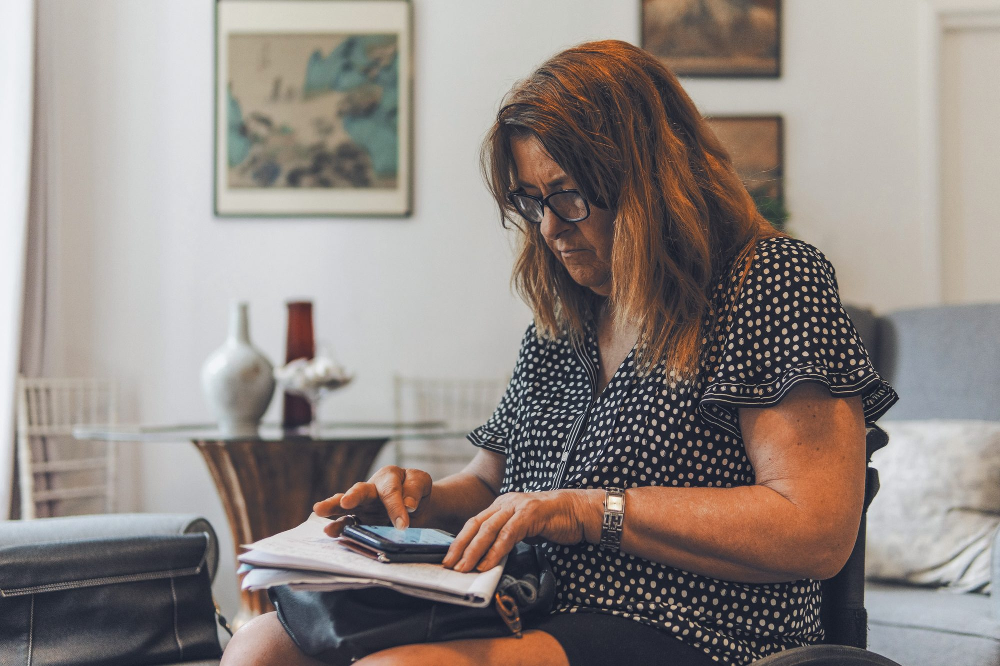
14.2 · Tokens dos dois campos
Cada campo define os mesmos papéis: fundo, superfície, linha, título, texto, apoio, foco. O componente lê o papel, não a cor. Trocar a classe do pai troca tudo de uma vez.
Deslize a tabela para o lado →
| Papel | Variável | Noite | Dia |
|---|---|---|---|
| Fundo | --f-fundo | #0B0D12 | #FFFFFF |
| Superfície | --f-sup | #141821 | #F6F7F8 |
| Superfície 2 | --f-sup2 | #1B2130 | #EEF0F3 |
| Linha | --f-linha | #232936 | #E4E7EB |
| Título | --f-titulo | #EEF1F5 | #0C0F14 |
| Texto | --f-texto | #CBD2DC | #272D36 |
| Apoio | --f-apoio | #9AA3B2 | #4A525E |
| Foco em área | --foco | #FF6A1A | #FF6A1A |
| Foco em título | --f-foco-titulo | #FF6A1A | #D9530C |
| Foco em texto | --f-foco | #FF8A4C | #B33E0A |
| Linha Educação | --f-edu | #FF8DB8 | #A82259 |
| Linha Strategy | --f-str | #8FA8FF | #1E3FB8 |
| Linha Agentes | --f-age | #3DDC9F | #0B7A56 |
| Situação | --f-bom · --f-atencao · --f-critico | #3DDC9F · #FDB022 · #FF8A80 | #0B7A56 · #B54708 · #B42318 |
| Sombra | --f-sombra | vira fio de 1 px | sombra suave |
.campo-noite{ --f-fundo:#0B0D12;--f-sup:#141821;--f-sup2:#1B2130;--f-linha:#232936; --f-titulo:#EEF1F5;--f-texto:#CBD2DC;--f-apoio:#9AA3B2; --f-foco:#FF8A4C;--f-foco-titulo:#FF6A1A; --f-edu:#FF8DB8;--f-str:#8FA8FF;--f-age:#3DDC9F; --f-bom:#3DDC9F;--f-atencao:#FDB022;--f-critico:#FF8A80} .campo-dia{ --f-fundo:#FFFFFF;--f-sup:#F6F7F8;--f-sup2:#EEF0F3;--f-linha:#E4E7EB; --f-titulo:#0C0F14;--f-texto:#272D36;--f-apoio:#4A525E; --f-foco:#B33E0A;--f-foco-titulo:#D9530C; --f-edu:#A82259;--f-str:#1E3FB8;--f-age:#0B7A56; --f-bom:#0B7A56;--f-atencao:#B54708;--f-critico:#B42318} .campo-dia-2{--f-fundo:#F6F7F8;--f-sup:#FFFFFF} /* componentes leem só os papéis */ .cartao{background:var(--f-sup);border:1px solid var(--f-linha);color:var(--f-texto)} .cartao h4{color:var(--f-titulo)}
14.3 · O mesmo componente
O mesmo indicador, o mesmo aviso e o mesmo gráfico nos dois campos. Na noite ele monitora; no dia ele explica. Nada foi redesenhado, só a classe do pai mudou. Em cada metade, o laranja aparece uma vez como foco (a barra); o botão é o único outro.
14.4 · O ritmo de uma peça
A troca de campo marca um capítulo, não um parágrafo. Uma página, uma apresentação ou um relatório têm, em geral, três trocas: entrada, miolo e saída.
Toda receita tem um gargalo. Os dados dizem qual.
Consultoria de RevOps com IA para donos de empresas de R$ 3 a 20 milhões por ano.
Fazer o Raio-X do Negócio →Mais lead, mais anúncio, mais ferramenta. E a receita no mesmo lugar.
Quando a receita não cresce, a reação comum é pôr mais coisa no topo do funil. Na maioria das empresas, o dinheiro está parado numa etapa só. Antes de comprar mais lead, vale saber qual.
Aprender, organizar, escalar.
GrowAI Educação
GrowAI Strategy
GrowAI Agentes
10,3%
Num e-commerce de embalagens, a fatia de oportunidades que vira venda passou de 4,7% para 10,3% em oito meses.
Qual é o seu gargalo agora?
Fazer o Raio-X do Negócio →Raio-X do Negócio
Próximo passo: decidir.
Slides 1920 × 1080. Os Slides oficiais do Forecast seguem o próprio modelo; este ritmo vale para apresentações e propostas da marca.
14.5 · Fotografia nos campos
Com texto por cima, use a versão monocromática noite: ela some atrás do título e deixa o laranja sozinho. Na leitura, use a cor tratada, com legenda, como documento de uma cena real.
Três sócios, uma decisão: o que fazer primeiro.
Num e-commerce de embalagens, a fatia de oportunidades que vira venda passou de 4,7% para 10,3% em oito meses.
Fonte: CRM do cliente · oito meses. Imagem de detalhe, sem pessoa: foto de banco nunca representa cliente.
14.6 · O que não fazer
Noite e dia só funcionam se cada troca quer dizer alguma coisa. Quando vira enfeite, o leitor para de perceber.
Trocar de campo a cada bloco cansa o olho e apaga o sentido da troca. Três trocas por peça, no máximo quatro.
Cinza médio de fundo não é campo da marca. Texto perde contraste e a peça perde o humor. É #0B0D12 ou branco.
A GrowAI conecta os dados do negócio, encontra o ponto que trava o crescimento e concentra o esforço nele até o ponteiro mexer. Não é uma lista de vinte melhorias. É uma decisão: o que fazer agora, por que, e como saber se funcionou. Quando o primeiro gargalo cede, o radar gira de novo e mostra o próximo. Por isso a marca fala pouco e mostra muito, e cada peça tem um título que afirma, um dado que prova e um próximo passo.
Relatório inteiro em fundo escuro cansa depois de três parágrafos.
A noite é para pouco texto. Relatório, proposta e artigo vão no dia.
Noite e dia não é o modo escuro do aparelho. É uma decisão editorial.
Quem escolhe o campo é quem faz a peça, pelo papel do conteúdo: monitorar ou explicar. O site e os materiais não trocam de campo conforme a preferência do celular do leitor.
Varredura 1 volta / 6 sPontos lidos 72Foco 1
O Radar de Foco é a assinatura visual da GrowAI. Uma varredura passa pelos dados do negócio e acende um único ponto em laranja: o gargalo. É “o sistema de foco da sua empresa” dito sem nenhuma palavra.
15.1 · De onde vem
Ninguém inventou o radar para enfeitar a marca. Ele é o “g” do logo aberto em tela: o mesmo anel, a mesma linha que varre, o mesmo gesto de olhar de cima e encontrar.
A marca promete foco. O radar mostra o foco acontecendo.
Por isso ele aparece onde a GrowAI precisa ser reconhecida antes de ser lida: a primeira dobra do site, a capa de uma proposta, o avatar, a abertura de um vídeo.
E por isso ele tem um ponto só. A empresa tem muitos problemas. O método escolhe um por vez.
15.2 · Anatomia
A hierarquia é a regra inteira: a estrutura some, os dados sussurram, a varredura guia o olho e o ponto de foco é a única coisa que grita.
Quatro anéis iguais e uma cruz. Traço de 1 px, cinza de apoio a 18–22% de opacidade. São a régua, não o desenho. R = 0,92 × metade do lado
De 40 a 80 pontos cinza entre 14% e 94% do raio. Cada um é um número do negócio: um lead, uma proposta, uma conversa. Acendem quando a varredura passa e apagam em 1,8 s.
Uma linha do centro até a borda, laranja a 55%. Uma volta a cada 6 segundos, no sentido do relógio. Nunca mais rápido.
Um leque de cerca de 52° atrás da linha, de 16% de laranja até sumir. Mostra por onde o sistema já olhou.
O único laranja cheio da composição. Núcleo, halo a 18% e um anel a 32% que pulsa a cada 1,8 s (raios 1 : 2,3 : 4, como no capítulo 16). Fica apagado até a varredura chegar nele, e depois não apaga mais.
O cartão que diz o que foi encontrado: rótulo em Plex Mono, uma frase com número. Aparece quando o ponto acende. É texto de verdade, legível por leitor de tela.
15.3 · Animado
O radar animado é para tela: site, portal, vídeo. A velocidade é de quem lê com atenção, não de alarme. Ele pausa quando sai da tela e para de vez para quem pediu menos movimento no aparelho.
Leitura de hoje · 07:00 · exemploA restrição desta semana é a proposta parada.
Toda receita tem um gargalo. Os dados dizem qual.
Uma volta, segundo a segundo · o momento do encontro varia com a posição do foco
0 s · começaA linha parte da posição de repouso. Os pontos estão em cinza baixo.
PassagemCada ponto acende quando a linha passa por ele e apaga em 1,8 s.
EncontroA linha chega no foco: o ponto acende em laranja e o aviso sobe em 0,5 s.
PulsoO foco pulsa a cada 1,8 s e não apaga mais nesta tela.
6 s · voltaA linha segue girando. Os outros pontos continuam acendendo e apagando.
Uma vez por página, ao lado da frase principal.
Enquanto o sistema lê os dados, e no quadro da restrição atual.
Duas voltas no máximo (12 s), e o ponto acende antes do corte.
Movimento perto de um parágrafo disputa a leitura. Ali, o radar fica parado.
15.4 · Parado
Em slide, post, impresso e para quem desativa animação, o radar congela no quadro certo: a varredura logo depois do ponto, o ponto aceso e o aviso visível. Nunca o quadro em que ainda não achou nada.
Na noite, os pontos clareiam quando acesos. No dia, escurecem. O laranja é o mesmo nos dois.
assets/formas/growai-radar-noite.svg
assets/formas/growai-radar-dia.svg
O radar leu tudo. Um ponto trava a receita.
Onde a receita trava hoje.
15.5 · Recorte
Em peça pequena ou com muito texto, o radar entra recortado pela borda. Pode mostrar de um quarto até a metade. O centro pode ficar fora da peça. O ponto de foco, nunca.
Centro no canto da peça, raio de 80% a 100% da largura. Texto no canto oposto.
Centro numa borda lateral. Bom para banner, story e lateral de slide.
Sem o ponto, o radar vira só um desenho de círculos. Gire o foco para dentro da área visível.
Mais ferramenta não resolve gargalo.
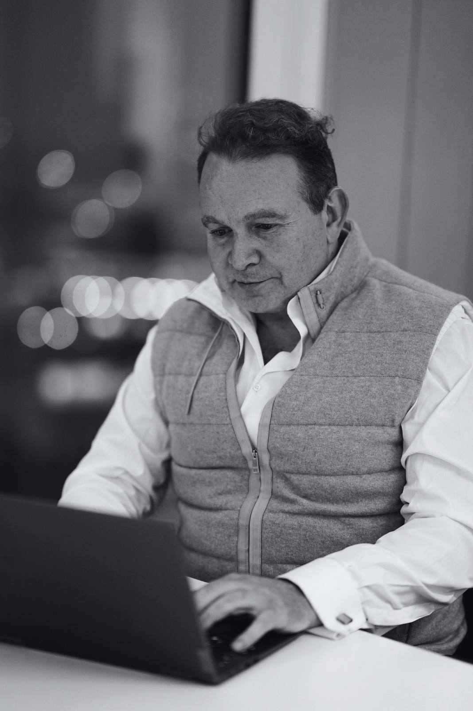
Onde sua receita trava?
Deslize o banner para o lado →
15.6 · Proibidos
Cada erro abaixo quebra a mesma promessa: um sistema calmo que encontra uma coisa só. Se a peça precisa de um destes efeitos para chamar atenção, o problema está na frase, não no radar.
Dois focos é foco nenhum. Se há dois achados, são duas peças.
O radar é da marca-mãe. Framboesa, Cobalto e Verde Pulso não entram nele, nem em página de linha.
Sem o ponto aceso, é decoração. Parado, ele sempre mostra o encontro.
Também nunca
Também não pode: varredura mais rápida que uma volta a cada 6 s, radar girando ao lado de um parágrafo, radar usado como ícone pequeno (abaixo de 120 px use o ícone próprio do capítulo 17) e radar sobre foto sem o véu escuro que garante o contraste.
15.7 · Especificação
O motor gforms.js já desenha tudo isso. A tabela serve para quem refaz o radar em vídeo, no Canva ou em outra ferramenta.
| Parte | Medida | Cor e opacidade | Opção no motor |
|---|---|---|---|
| Área | Quadrado; raio útil 92% da metade do lado | Fundo do campo (noite #0B0D12 ou dia #FFFFFF) | campo |
| Anéis e eixos | 4 anéis iguais + cruz; traço 1 px a cada 560 px | Noite #9AA3B2 a 18–22% · dia #4A525E a 16–18% | fixo |
| Pontos de dado | 40 a 80; de 14% a 94% do raio; nenhum a menos de 9% do foco | Noite #C8CDD7 · dia #6E7682; 28–30%, acesos até 88% | pontos, semente |
| Varredura | 1 volta a cada 6 s, sentido horário | Linha #FF6A1A a 55% | fixo |
| Rastro | Leque de 0,9 rad (cerca de 52°) | #FF6A1A de 16% (noite) ou 11% (dia) até 0 | fixo · varredura no SVG |
| Ponto de foco | Núcleo 5 px, halo 10 px, pulso de 5 a 24 px em 1,8 s (medidas em 560 px) | #FF6A1A cheio · halo a 18% · anel a 32% | foco.angulo, foco.raio (0,45 a 0,7) |
| Aviso | Até 240 px de largura; borda esquerda de 3 px | Rótulo #FF8A4C (noite) ou #B33E0A (dia) | aviso.rotulo, aviso.texto |
| Quadro parado | Varredura 0,5 rad depois do foco, ponto aceso, aviso visível | Igual ao animado | radar-svg ou movimento reduzido |
Deslize a tabela para o lado →
Um radar animado por tela. O texto do aviso tem número e a palavra “exemplo” quando o dado não for real. O motor pausa fora da tela e respeita prefers-reduced-motion.
<!-- animado: site, portal, abertura de vídeo --> <div class="radar-box" style="--max:560px" data-gforms="radar" data-gforms-opts='{"pontos":64, "foco":{"angulo":-54,"raio":0.56}, "aviso":{"rotulo":"Gargalo encontrado", "texto":"Propostas paradas há 9 dias: 62% da receita em aberto. (exemplo)"}, "aria":"Radar de Foco: o gargalo é a proposta parada"}'> </div> <!-- parado: slide, post, impresso --> <div data-gforms="radar-svg" data-gforms-opts='{"campo":"dia","pontos":40}'></div> <script src="gforms.js"></script> // SVG pronto para o Canva ou para o vídeo const svg = gforms.svg('radar-svg', {campo:'noite', pontos:48});
Anéis, grade de pontos, ponto de foco, caminho, ciclo, ponteiro, sinal e as molduras de foto são pedaços do Radar de Foco ou desenhos do método. Cada um tem um trabalho. Nenhum entra só para preencher espaço.
16.1 · A família
Antes de desenhar qualquer coisa nova, procure aqui. Se a peça precisa de uma forma que não está na lista, a resposta quase sempre é espaço vazio.
Os anéis do radar sem os dados. Fundo de capa, de post e de slide de abertura, sempre discretos.
growai-aneis-dia.svgdata-gforms="aneis"
Os dados antes da varredura. Textura de fundo para banner, painel e capa. Pode acender um ponto.
growai-grade-pontos-*.svgdata-gforms="grade"
O achado. Marca o item que importa numa lista, num gráfico, numa tela ou numa foto. Um por composição.
growai-ponto-foco.svgdata-gforms="ponto"
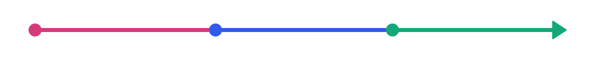
Aprender, organizar, escalar. A arquitetura das três linhas, sempre nesta ordem e nas cores delas.
growai-caminho-*.svgdata-gforms="caminho"
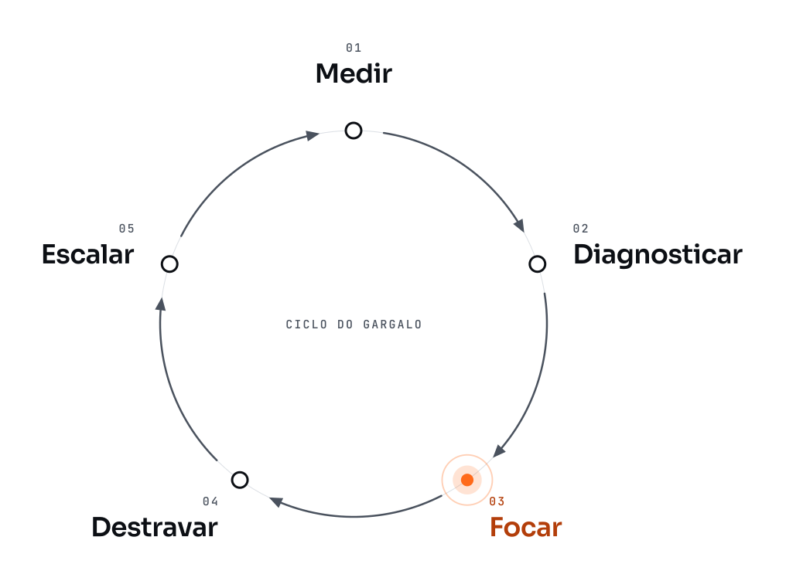
Medir, diagnosticar, focar, destravar, escalar. Como a GrowAI trabalha. O focar é laranja.
growai-ciclo-*.svgdata-gforms="ciclo"
Meio radar com agulha. Onde o indicador está e onde precisa chegar. A ponta da agulha é o ponto de foco.
data-gforms="ponteiro"
O aviso do radar fora dele. O recado que o sistema manda ao time: número, prazo e ação.
data-gforms="sinal".aviso
O radar olhando para gente de verdade. Anéis e ponto sobre fotografia tratada, centrados no que a pessoa decide (aqui, o celular). Nunca no rosto.
HTML e SVG neste capítuloassets/fotos/
16.2 · Anéis
Anéis concêntricos fazem a peça parecer GrowAI antes de qualquer palavra. Ficam atrás, com pouca força, e quase sempre com o centro fora da área visível.
10,3%
Num e-commerce de embalagens, a fatia de oportunidades que vira venda passou de 4,7% para 10,3% em oito meses.
#343C4D, dia #C5CBD4. Nunca laranja.16.3 · Grade de pontos
A grade é a textura da casa: pontos pequenos, iguais, que somem perto das bordas. Ela lembra uma planilha vista de longe. Quando acende um ponto, vira o radar em repouso.
Deslize o banner para o lado →
O espaço entre pontos é 24 px na tela (ou 3 mm impresso). Mais apertado vira ruído; mais solto perde a leitura de dado.
#262C39 · dia #D3D8DF. Nunca cor de linha, nunca laranja na grade inteira.16.4 · Ponto de foco
O ponto de foco é o gargalo encontrado, desenhado. Ele aparece uma vez por composição e sempre em cima de uma coisa concreta: a etapa, o número, o card, a tela.
#FF6A1A. É a medida de tudo.assets/formas/growai-ponto-foco.svgO núcleo nunca encolhe quando o ponto cresce. Abaixo de 16 px, só o núcleo. De 16 a 40 px, núcleo e halo. Acima de 40 px, o desenho completo. Nunca menor que 6 px.
Aplicado · o ponto marca a etapa que trava, não a maior
Os 4,7% são o ponto de partida da prova liberada: a fatia de oportunidades que vira venda, num e-commerce de embalagens. Os outros números são exemplo.
16.5 · Caminho
O caminho é a arquitetura de marca em uma linha só. Cada trecho tem a cor da sua linha. O ponto de foco marca onde o cliente está agora. No celular, ele fica de pé sozinho.
Seu próximo passo: organizar.
Você já aprendeu o método. Agora o Raio-X mostra onde a receita trava e a Strategy organiza o resto.
Fazer o Raio-X →16.6 · Ciclo
Medir, diagnosticar, focar, destravar, escalar. Depois, medir de novo. O ciclo explica por que a GrowAI não entrega uma lista de vinte melhorias: ela escolhe um ponto, resolve, e só então olha o próximo.
16.7 · Ponteiro
Meio radar com agulha. A faixa marcada é a meta; a agulha é o valor de hoje; a ponta da agulha é o ponto de foco. Um ponteiro por tela, para o indicador da restrição atual.
Faltam 22 pontos para a meta.
16.8 · Sinal
O sinal é o aviso do radar fora do radar: no painel, no WhatsApp, no e-mail das 7h. Ele só existe se trouxer número, prazo e o próximo passo. Alarme sem ação é ruído.
O que é e quando: “Receita em risco · 07:00”. Plex Mono, laranja do campo.
Uma frase com o número: “3 oportunidades sem contato há 5 dias.”
O que fazer agora e onde: “Lista pronta no CRM.”
3 px de laranja à esquerda. É o único laranja do cartão.
07:02
quarta-feira, 7 de outubro
Receita em risco: 3 oportunidades sem contato há 5 dias. Lista pronta no CRM. (exemplo)
Reunião de pipeline às 9h.
16.9 · Molduras de foto com radar
Quando a foto tem gente, o radar entra como moldura: anéis brancos e finos, centrados na tela, no papel ou no celular que a pessoa está olhando. Nunca no rosto. A foto continua sendo a protagonista.
Moldura A · anéis sobre a foto
O número certo cabe na palma da mão.
Rafael Nasch
Fundador da GrowAIA reunião começa pelo número.
Deslize a peça para o lado →
Tela, celular, papel, quadro. O lugar para onde a pessoa olha, não a pessoa.
4 anéis de 1 a 1,5 px, de 50% a 18% de branco, do centro para fora.
Grade Noite ou monocromático noite. O laranja da cena não pode competir com o ponto.
E nenhuma em retrato fechado de cliente sem autorização por escrito.
O radar mira o notebook. O rosto fica livre, a decisão ganha o centro.
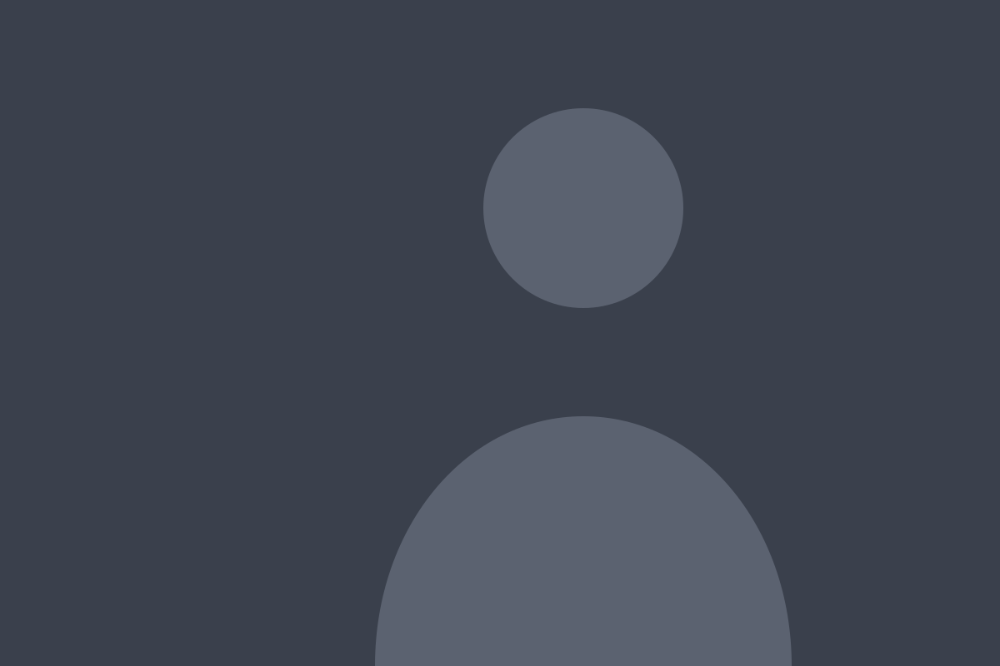
Ponto no rosto e anéis laranja: vira mira apontada para alguém.
16.10 · Arquivos e código
Para o Canva e para impresso, use os SVG da pasta assets/formas/. Para página e painel, use o motor gforms.js, que lê o campo de fundo e ajusta as cores sozinho.
| Forma | Arquivo para Canva e impresso | No HTML | Opções principais |
|---|---|---|---|
| Radar parado | growai-radar-noite.svg · -dia.svg | radar-svg | pontos, foco, aviso |
| Anéis | growai-aneis-noite.svg · -dia.svg | aneis | n, eixos, foco |
| Grade de pontos | growai-grade-pontos-noite.svg · -dia.svg | grade | espaco, raio, desvanecer, foco {x, y} |
| Ponto de foco | growai-ponto-foco.svg | ponto | tamanho, pulso |
| Caminho | growai-caminho-*.svg · -sem-texto-*.svg | caminho | atual, descricao, trechos |
| Ciclo | growai-ciclo-noite.svg · -dia.svg | ciclo | etapas, foco, centro |
| Ponteiro | exportar com gforms.svg('ponteiro', …) | ponteiro | valor, zona, rotulo, vrotulo |
| Sinal | exportar com gforms.svg('sinal', …) | sinal | rotulo, texto, largura |
Deslize a tabela para o lado →
Os anéis são um SVG por cima da foto, centrado no objeto. O ponto é um elemento à parte, para manter o tamanho fixo quando a foto escala.
<!-- centro = objeto da decisão (x%, y%) --> <figure class="moldura" style="--x:51%;--y:30%"> <img src="assets/fotos/operador-celular-notebook.jpg" alt="…"> <svg class="aneis" viewBox="-50 -50 100 100" aria-hidden="true"> <g fill="none" stroke="#fff" vector-effect="non-scaling-stroke"> <circle r="12" stroke-opacity=".5"/><circle r="22" stroke-opacity=".38"/> <circle r="33" stroke-opacity=".28"/><circle r="45" stroke-opacity=".18"/> </g></svg> <span class="ponto" aria-hidden="true"></span> </figure> .moldura{position:relative;overflow:hidden} .moldura .aneis,.moldura .ponto{position:absolute;left:var(--x);top:var(--y); transform:translate(-50%,-50%)} .moldura .aneis{width:60%} .moldura .ponto{--n:14px;width:var(--n);height:var(--n);border-radius:50%;background:#FF6A1A; box-shadow:0 0 0 calc(var(--n)*.65) rgba(255,106,26,.18)} /* halo 2,3 */ .moldura .ponto::after{content:"";position:absolute;inset:calc(var(--n)*-1.5575); border:calc(var(--n)*.115) solid rgba(255,106,26,.32);border-radius:50%} /* anel 4 */
A GrowAI usa a família Lucide: traço fino, pontas redondas, nada preenchido, cor neutra. Três conceitos que são só nossos ganharam ícone próprio, desenhado na mesma grade. O ícone só fica laranja quando marca o foco.
17.1 · A grade de 24 px
Todo ícone nasce numa área de 24 por 24, com 1 px de margem. As linhas-guia dizem até onde cada forma vai, para que um círculo e um quadrado pareçam do mesmo tamanho.
gaugecalendar-checkwalletfile-textQuadrado de 24 × 24, sempre. O SVG tem viewBox="0 0 24 24".
Nada encosta na borda da área.
No desenho. Na tela, o traço visível segue a tabela 17.2.
Cantos com raio de 2 e 2 de espaço entre partes separadas.
Só contorno. A única exceção é o ponto cheio dos ícones próprios.
17.2 · Tamanho e traço
Se o traço acompanhasse o tamanho, o ícone de 40 px pareceria negrito ao lado do texto. Por isso o traço visível fica entre 1,5 e 1,75 px em qualquer tamanho.
Traço 1,5 px
stroke-width 2,25
Traço 1,5 px
stroke-width 2
Traço 1,75 px
stroke-width 2,1
Traço 1,75 px
stroke-width 1,75
Traço 1,5 px
stroke-width 1,125
Traço 1,5 px
stroke-width 0,9
O stroke-width do SVG vale em unidades da grade de 24. Para ter o traço certo em pixels, divida pelo tamanho.
/* o traço não engorda quando o ícone cresce */ .ico{width:var(--tam, 20px);height:var(--tam, 20px);flex:none} .ico *{vector-effect:non-scaling-stroke;stroke-width:var(--traco, 1.75px)} .ico.peq{--tam:16px;--traco:1.5px} .ico.abre{--tam:40px;--traco:1.5px}
17.3 · Vocabulário
Este é o dicionário. Se “proposta” é um documento aqui, é um documento no site, no portal e no slide. Clique num ícone para copiar o nome dele no Lucide.
Os três primeiros são próprios da GrowAI (17.4). Eles substituem radar, target e hourglass do Lucide.
O que se mede.
Quem faz e por onde.
Para falar de vertical sem foto.
Ação e estado. Estado sempre com palavra ao lado.
17.4 · Ícones próprios
Radar, ponto de foco e gargalo são o centro do método. Os equivalentes do Lucide dizem outra coisa (alvo de tiro, ampulheta de tempo), então eles ganharam desenho próprio, na mesma grade e com o mesmo traço.
Dois anéis, uma varredura que vai do centro à borda e um ponto que ela acabou de encontrar. É o Radar de Foco do capítulo 15 reduzido ao essencial. Use para “monitorar”, “leitura do painel”, “sistema olhando”.
<svg xmlns="http://www.w3.org/2000/svg" width="24" height="24" viewBox="0 0 24 24"
fill="none" stroke="currentColor" stroke-width="2"
stroke-linecap="round" stroke-linejoin="round">
<circle cx="12" cy="12" r="10"/>
<circle cx="12" cy="12" r="4.5"/>
<path d="M12 12l7.07-7.07"/>
<circle cx="14.24" cy="5.1" r="1.25" fill="currentColor" stroke="none"/>
</svg>O núcleo cheio e um halo feito de doze pontos, a grade de pontos da marca em volta do achado. Marca o item que importa numa lista, num menu ou num cartão. É o único ícone que costuma aparecer em laranja.
Abaixo de 24 px, use growai-ponto-16. Em 16 e 20 px os doze pontos viram borrão e o ícone lê como sol ou engrenagem. A variante óptica tem núcleo de raio 3 e um anel contínuo a 50%, sem tracejado.
<svg xmlns="http://www.w3.org/2000/svg" width="24" height="24" viewBox="0 0 24 24"
fill="none" stroke="currentColor" stroke-width="2"
stroke-linecap="round" stroke-linejoin="round">
<circle cx="12" cy="12" r="7" stroke-dasharray="0 3.665"/>
<circle cx="12" cy="12" r="2.75" fill="currentColor" stroke="none"/>
</svg>
<!-- growai-ponto-16 · abaixo de 24 px -->
<svg xmlns="http://www.w3.org/2000/svg" width="16" height="16" viewBox="0 0 24 24"
fill="none" stroke="currentColor" stroke-width="2"
stroke-linecap="round" stroke-linejoin="round">
<circle cx="12" cy="12" r="7" stroke-opacity=".5"/>
<circle cx="12" cy="12" r="3" fill="currentColor" stroke="none"/>
</svg>O gargalo de uma garrafa: as paredes descem largas, se estreitam e seguem num pescoço fino. O ponto fica preso na entrada do pescoço. Lê como “aqui trava” sem lembrar tempo nem filtro, e foi testado a 16, 20 e 24 px ao lado de “Restrição atual”. Use para “restrição atual”, “onde trava”, “etapa crítica”.
<svg xmlns="http://www.w3.org/2000/svg" width="24" height="24" viewBox="0 0 24 24"
fill="none" stroke="currentColor" stroke-width="2"
stroke-linecap="round" stroke-linejoin="round">
<path d="M5 3v5c0 2.5 5 3.5 5 6v7"/>
<path d="M19 3v5c0 2.5-5 3.5-5 6v7"/>
<circle cx="12" cy="11.5" r="1.25" fill="currentColor" stroke="none"/>
</svg>17.5 · Cor
Ícone serve ao texto, não enfeita. Na maior parte do tempo ele usa a cor de apoio do campo. O laranja aparece em um ícone por tela, quando ele marca o foco.
Dia #4A525E · noite #9AA3B2. Em botão e menu, a cor do texto ao lado.
Só no item que é o gargalo ou o próximo passo. No dia, ícone de até 24 px usa #B33E0A se estiver ao lado de texto.
Em /strategy, /agentes e /educacao, ícones de destaque podem usar a cor base da linha. Fora desses endereços, nunca.
Não existe versão “negativa” desenhada à parte: o ícone herda a cor do texto.
Hoje · exemploSinais de hoje
17.6 · Ícone com texto
Em ação importante (enviar, pagar, apagar), o ícone vem sempre com texto. Sozinho, só em controles que todo mundo conhece (fechar, menu, buscar) e sempre com nome para leitor de tela.
| Onde | Texto | Ícone | Espaço | Alinhamento |
|---|---|---|---|---|
| Lista e legenda | 15–17 px | 16–18 px | 8 px | Centro do ícone no centro da 1ª linha |
| Botão | 16 px | 18–20 px | 10 px | Centrado; seta sempre depois do texto |
| Menu e abas | 15 px | 18 px | 8 px | Centrado |
| Card de destaque | 19–21 px | 24 px | 12 px | Ícone em cima, alinhado à esquerda do título |
Deslize a tabela para o lado →
17.7 · Não faça
Quase todo erro de ícone é o mesmo: chamar atenção para si. O ícone certo é o que a pessoa entende sem notar.
17.8 · Especificação
Lucide é gratuito e de código aberto (licença ISC), em lucide.dev. Este capítulo foi conferido na versão 0.577.0, a mesma dos 15 ícones em assets/icones/. Para Figma e Canva, baixe o SVG na própria página do ícone e mantenha os atributos abaixo.
Copie o SVG para dentro do HTML: herda a cor do texto e não depende de fonte de ícones. Ícone decorativo leva aria-hidden; ícone sozinho num botão leva aria-label no botão.
<!-- ícone com texto: decorativo --> <a class="btn" href="/raio-x"> Fazer o Raio-X do Negócio <svg class="ico" aria-hidden="true" viewBox="0 0 24 24" fill="none" stroke="currentColor" stroke-width="2" stroke-linecap="round" stroke-linejoin="round"> <path d="M5 12h14"/><path d="m12 5 7 7-7 7"/> </svg> </a> <!-- ícone sozinho: o nome vai no botão --> <button type="button" aria-label="Fechar"> <svg class="ico" aria-hidden="true" …>…</svg> </button>
A fotografia da GrowAI mostra o dono da empresa no momento em que ele olha o número e decide. Ninguém posa, ninguém sorri para a câmera, nada brilha. A luz é de janela e o único calor da cena é o ponto que importa.
Fig. 18.0Dono ao telefone no fim do expediente, notebook aberto, luminária ao fundo. Grade Noite.
18.1 · Direção
A câmera observa. A pessoa está trabalhando e nem lembra que tem alguém fotografando. Se a cena não aconteceria sem a câmera, ela não serve.
A dona lê o número na tela. O rosto mostra atenção, não alegria.
O papel numa mão, o celular na outra. É o intervalo entre ver e agir que a GrowAI encurta.
A decisão vira combinado com o time. Duas pessoas, uma tela.
Três perguntas antes de usar uma foto
Se a foto caberia no site de qualquer empresa de tecnologia, ela não é da GrowAI.
18.2 · Pessoas
Donos e donas de empresa brasileira, líderes comerciais, times pequenos e quem opera com o celular na mão. A diversidade é a do Brasil real: idade, cor de pele, corpo, roupa de trabalho.
Papel 01 · decide e assina
De 35 a 55 anos. Aparece conferindo, ligando, pensando. Roupa do dia a dia de quem toca a empresa, não figurino de banco.
Papel 02 · puxa o número
Na prancheta, no CRM, na conversa com quem executa. A ferramenta aparece, mas a pessoa é o assunto.
Papel 03 · opera
Celular na mão, conversa aberta. É quem recebe o aviso do agente às 7h.
Papel 04 · executa junto
De três a seis pessoas em volta de uma mesa real, com papel, notebook e café. Nunca a plateia de 40 pessoas aplaudindo.
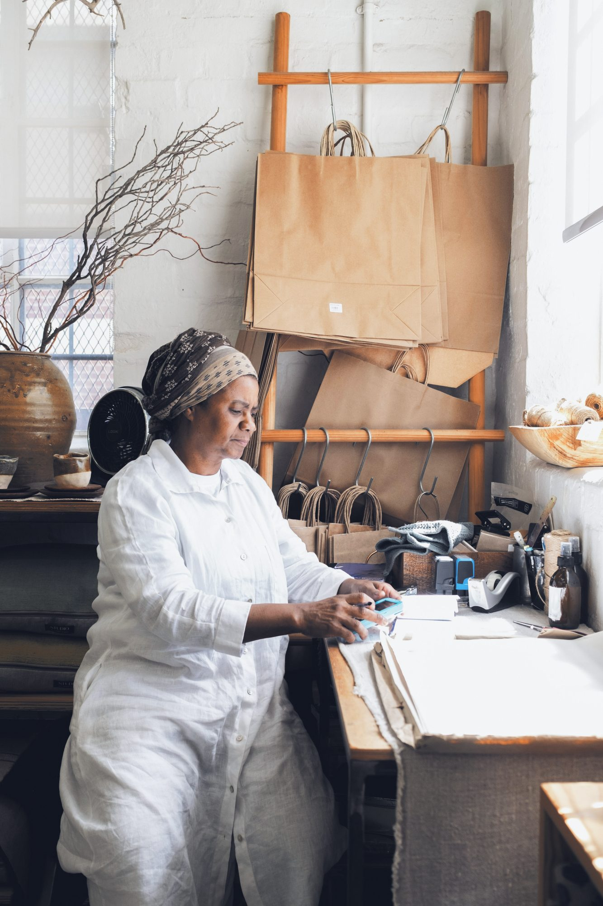
Papel 05 · faz o produto
A bancada, o estoque, a cozinha. Mostra que a empresa do cliente existe fora da planilha.
O que olhar antes de aprovar quem aparece.
| Critério | Fazer | Evitar |
|---|---|---|
| Idade | Maioria entre 35 e 55 anos, como o dono que compra | Só gente de 25 anos com moletom de startup |
| Diversidade | Mulheres e homens, pessoas negras, pardas, brancas e de origem asiática, corpos diferentes | O mesmo perfil repetido em todas as peças |
| Roupa | Camisa, malha, avental, jaleco: o que a pessoa usa no trabalho | Terno escuro com gravata, salvo no setor em que é rotina |
| Expressão | Atenção, concentração, conversa | Sorriso aberto para a lente, polegar para cima, punho fechado, mão no queixo em toda foto |
| Quantidade | Uma, duas ou até seis pessoas | Multidão, palco cheio, foto de “equipe” perfilada |
| Lugar | Sinais do Brasil: maquininha, cardápio e placa em português, comércio de bairro | Placa em outra língua, vitrine de cidade europeia, cenário que não existe aqui |
Deslize a tabela para o lado →
Autorização. Foto própria com pessoa reconhecível só sai com termo de uso de imagem assinado. Foto de banco só com licença de uso comercial registrada em creditos.json. Rosto ou pessoa gerada por IA: nunca.
18.3 · Luz
Luz natural vinda de lado, com contraste médio: um lado do rosto claro, o outro em meia-sombra. É a luz de quem trabalha perto da janela, não a de quem foi maquiado para a foto.
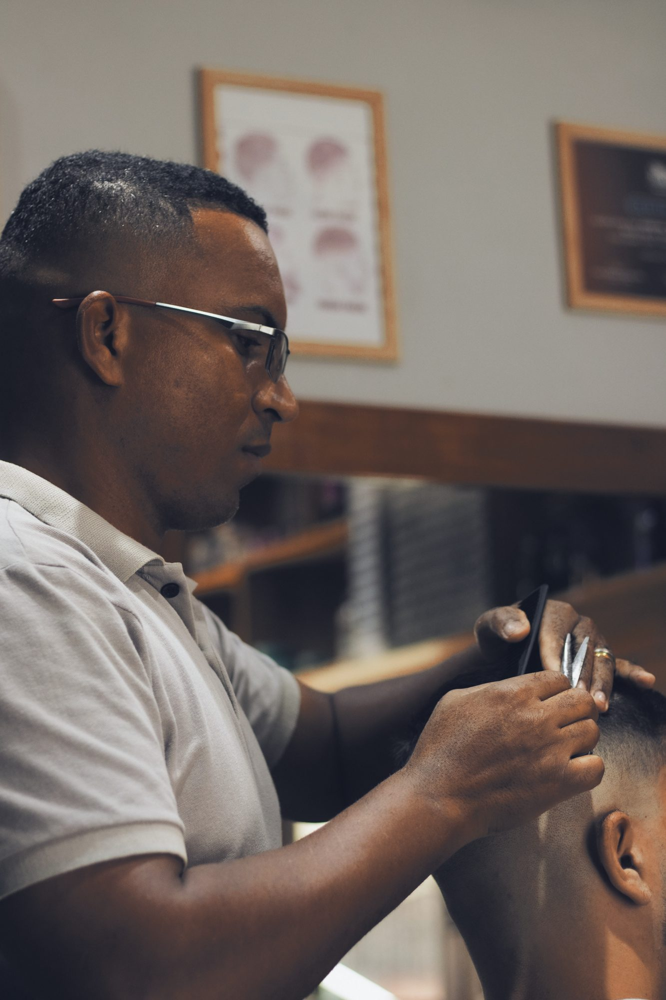
18.4 · Enquadramento
Uma peça boa combina distâncias: o lugar, a pessoa, as mãos e o objeto que prova. O ponto de interesse cai num cruzamento dos terços e sobra ar do lado para onde a pessoa olha.
Antes de aprovar, confira se o ponto de foco sobrevive a todos os formatos em que a foto vai rodar.
18.5 · Ambientes por vertical
A GrowAI atende empresas de muitos setores. Cada peça escolhe o ambiente do público que ela quer alcançar e mostra o detalhe que prova que aquele negócio existe.
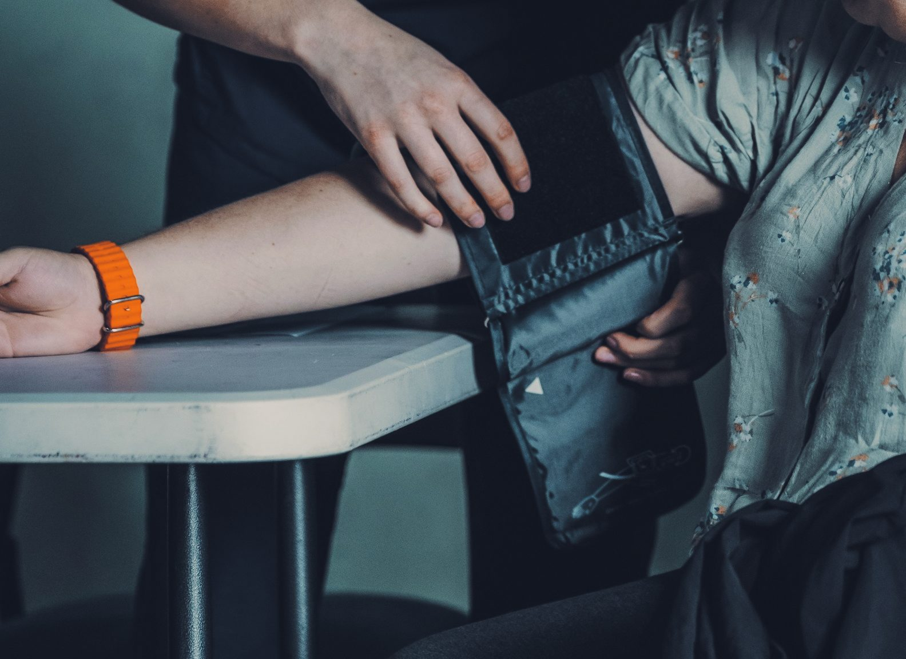
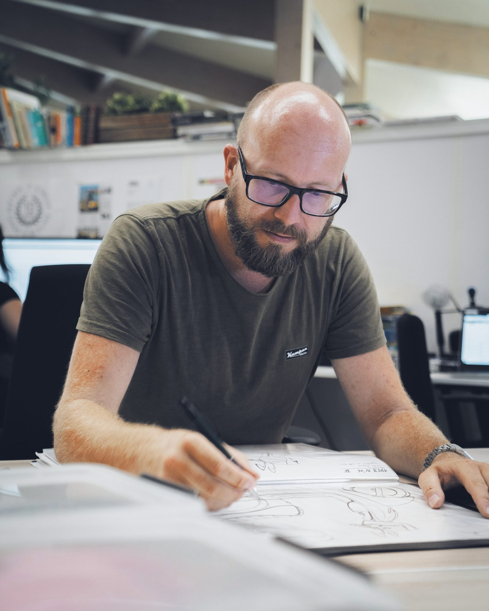
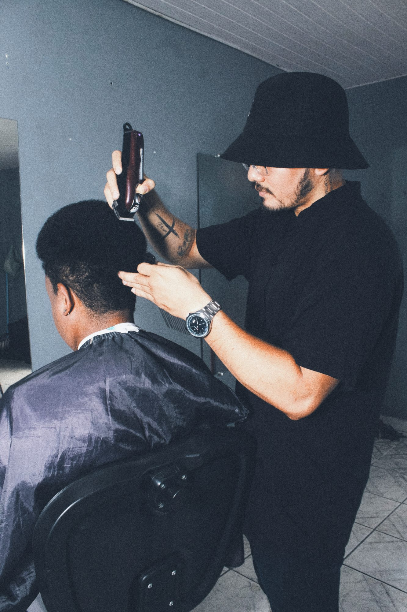
| Vertical | Cena principal | Detalhe que prova | Evitar |
|---|---|---|---|
| E-commerce | Expedição: caixas, etiquetas, mesa de embalagem | A etiqueta de envio, a pilha de pedidos do dia | Depósito de multinacional; estampa ou marca de terceiro legível nas caixas e na roupa |
| Clínica e saúde | Recepção, consultório, mãos do profissional | A agenda do dia, o prontuário, o medidor de pressão | Paciente identificável, mesmo de perfil e mesmo com licença |
| Curso e educação | Estúdio de gravação, aula ao vivo | A câmera ligada, o roteiro na mesa | Plateia lotada de evento motivacional |
| Agência e serviço | Mesa de criação, reunião com cliente | O quadro de tarefas, a prancheta | Escritório descolado com pufe e videogame |
| Varejo e serviço local | Balcão, salão, barbearia, cozinha | A maquininha, o pedido anotado, o ventilador na parede | Loja vazia e arrumada demais; criança no centro da cena |
| Escritório de PME | Time pequeno em mesa, dono ao telefone | O notebook com o painel de exemplo | Sala de reunião de vidro em arranha-céu, vitral, cenário que não é escritório |
Deslize a tabela para o lado →
Provisório. As cenas por vertical ainda vêm de banco de imagem e várias não leem como Brasil. Até a sessão própria com clientes reais, com termo de imagem (item registrado para 42 · Pendências), prefira as fotos com sinal brasileiro: maquininha, barbearia de bairro, mesa amarela.
18.6 · Tratamento de cor
Toda foto da marca passa pelo mesmo tratamento. As sombras vão para o azul-noite da paleta, os meios-tons perdem um quarto da saturação e o único elemento quente da cena é puxado para o laranja Foco. Arraste a linha para comparar.
Curva em S leve. Nada de preto esmagado nem de imagem lavada.
O elemento quente da cena (lâmpada, parede, objeto) ganha saturação e é puxado para o laranja . A pele fica de fora.
Saturação reduzida em cerca de um quarto no meio da luminância e um pouco menos nas pontas.
Acima de 70% de luminância a cor converge para o cinza. Céu e parede branca sem dominante.
Abaixo de 55% de luminância a cor desce para o azul-noite . Preto nunca puro, branco nunca puro: teto em .
Ruído monocromático fino, mais visível nos meios-tons. Dá textura de foto, não de render.
A cor tratada é o padrão. O monocromático noite existe para receber tipografia por cima.
fotos-originais/Como chega do banco ou da câmera. Não publicar assim.ambiente-barbearia-bairro.jpgUso padrão, sem texto em cima.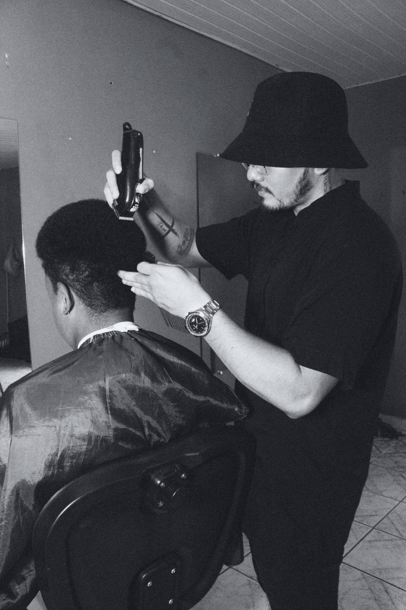
ambiente-barbearia-bairro-duo.jpgFundo de capa com título.O tratamento oficial é o script do pacote. Ele lê o original, aplica a receita em seis passos e grava as duas variações com nome padronizado.
<slug>.jpg · 2.000 px no lado maior · qualidade 82<slug>-duo.jpg · 1.600 px · qualidade 72 · #0B0D12 → #EEF1F5assets/fotos/ + registro em creditos.json# 1. original em _build/fotos-originais/<categoria>-<cena>.jpg # 2. tratar (gera cor tratada + monocromático) python tools/grade.py _build/fotos-originais/dona-mesa-amarela.jpg # só o monocromático, sem granulação python tools/grade.py --so-duo --sem-grao x.jpg # 3. conferir na folha open _build/v4/fotos-folha.png
Para captura de tela ou imagem que não passou pelo script, a casca aproxima a grade em CSS. É um quebra-galho: o arquivo tratado sempre vence.
.foto.trat-cor>img{filter:saturate(.75) contrast(1.04)} .foto.trat-cor::after{content:"";position:absolute;inset:0; background:#0B0D12;mix-blend-mode:lighten;opacity:.9} .foto.trat-mono>img{filter:grayscale(1) contrast(1.06)} .foto.trat-mono::before{background:#0B0D12;mix-blend-mode:lighten} .foto.trat-mono::after{background:#EEF1F5;mix-blend-mode:darken}
18.7 · Foto com tipografia
Título sobre foto usa o monocromático noite e entra na área vazia da cena: parede, céu, sombra. Nunca em cima de rosto, mão ou tela. Quando a foto não tem vazio, um véu de azul-noite cria o lugar.
Às sete da noite, ela ainda não sabe quanto vendeu hoje.
O aviso chega antes do problema.
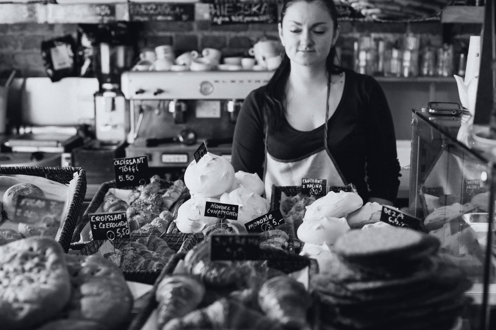
Antes de contratar mais um vendedor, descubra onde a venda trava.
Toda receita tem um gargalo.
Os dados dizem qual.
Texto sobre foto pede o arquivo -duo. A cor tratada fica para foto sem texto.
Degradê de #0B0D12, de 0 a 88%, vindo da base ou da lateral do texto.
Mínimo 4,5:1 no ponto mais claro atrás da letra. Título grande, mínimo 3:1.
O itálico do título é o ponto laranja da peça. Nada mais laranja por cima da foto.
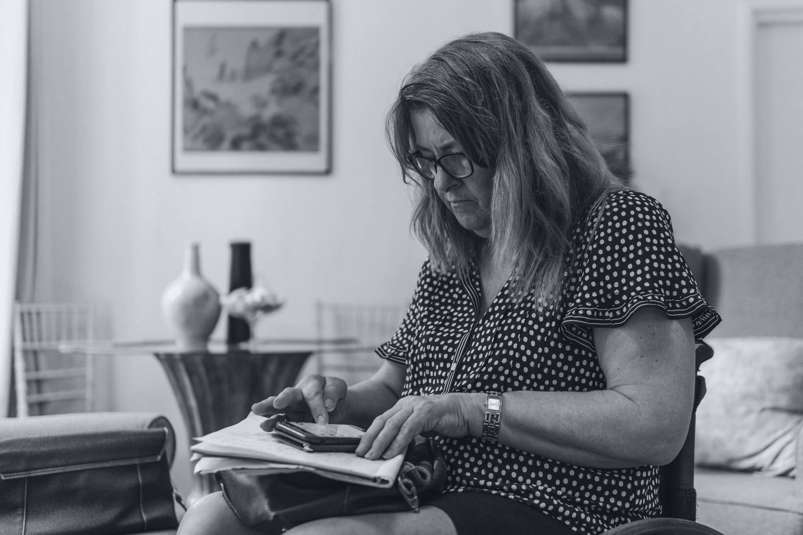
Decidir com o número na mão.
Título na base escura, longe do rosto. A pessoa continua inteira e legível.
Decidir com o número na mão.
Título em cima do rosto, sobre a foto colorida e sem véu. Some a pessoa e some o texto.
rafael-nasch.jpg · 560 × 700 · 4:5 · no máximo 360 px na tela18.8 · Retrato do fundador
Na cena, ninguém olha para a câmera. No retrato do fundador, sim: é a pessoa que assina a tese e responde por ela. Um retrato oficial, sempre o mesmo, em todos os lugares.
Rafael Nasch
Fundador da GrowAI
Foco é a nossa tecnologia.
A validar · item para 42 · Pendências. O arquivo atual tem 560 × 700 px: serve para perfil, assinatura e telas até 360 px de largura. Para palco, impresso e capa grande, falta uma sessão de retrato nova. Especificação: 2.400 px ou mais no lado maior, fundo escuro neutro, luz lateral suave, roupa escura lisa, do peito para cima, com 8 a 10% de ar acima da cabeça.
18.9 · Faz e não faz
Os erros mais comuns não vêm da foto escolhida: vêm do que se faz com ela depois. Cada par abaixo usa a mesma imagem do banco: à esquerda como a marca pede, à direita como ela não pode sair.
Grade Noite: fria nas sombras, um calor só.
Filtro azul e roxo “de tecnologia”. Parece anúncio de criptomoeda.
O laranja é a lâmpada. Um ponto, como na marca.
Foto inteira tingida de laranja. O foco vira papel de parede.
Linhas retas, câmera na altura da mesa.
Câmera inclinada para dar “energia”. Só dá enjoo.
A pessoa inteira no quadro, com ar para o olhar.
Zoom até cortar testa e queixo. Vira foto de documento.
Foto limpa, canto reto ou raio pequeno, sem sombra.
Arco, borda, sombra pesada e vinheta. Enfeite que tira a atenção da pessoa.
O aviso chega antes.
Monocromático, véu e título na base.
O aviso chega antes.
Título na cor tratada, em cima do rosto e sem véu.
Não existe exceção para estes casos, nem em anúncio de teste.
18.10 · Banco aprovado
Escolhidas pela direção deste capítulo, tratadas pela grade Noite e com a licença registrada. Use daqui antes de procurar fora. Cada foto tem a versão em cor e a monocromática com o mesmo nome e o sufixo -duo. Escolha a categoria; no PDF, todas aparecem.
Quem decide. Olhando a tela, ao telefone, conferindo o papel. 13 fotos.
dono-noite-cidade.jpgSophie Paterson · Unsplashdona-papeis-celular.jpgCentre for Ageing Better · Unsplashdono-ligacao-escritorio.jpgVitaly Gariev · Unsplashdona-ligacao-noite.jpgVitaly Gariev · Unsplashdona-atelie.jpgFilipp Romanovski · Unsplashdona-mesa-amarela.jpgÂndrea Ferreira · Pexelsdona-caixas-celular.jpgKampus Production · Pexelsdono-estoque-conversa.jpgNina zeynep güler · Pexelsdono-janela-notebook.jpgbruce mars · Unsplashdono-decidindo.jpgODISSEI · Unsplashdona-janela-cafe.jpgAdam Satria · Unsplashdono-janela-pensando.jpgFarkas Mario · Unsplashdono-escritorio-tela.jpgYan Krukau · PexelsDe duas a seis pessoas trabalhando juntas numa mesa real. 7 fotos.
time-mesa-documentos.jpgAndreea Avramescu · Unsplashtime-quadro-laranja.jpgPaymo · Unsplashtime-reuniao.jpgMapbox · Unsplashtime-olhando-numero.jpgMikhail Nilov · Pexelslider-estoque-prancheta.jpgCentre for Ageing Better · Pexelstime-dupla-tela.jpgAnna Shvets · Pexelstime-dupla-notebook.jpgFlipsnack · UnsplashMãos, celular e notebook. Para peças sobre agentes e rotina. 5 fotos.
operador-celular-parede.jpgChris Yang · Unsplashoperador-celular-notebook.jpgMaxim Ilyahov · Unsplashoperador-maos-teclado.jpgKaitlyn Baker · Unsplashoperador-celular-planilha.jpgPlann · Unsplashoperador-teclado-escuro.jpgLOGAN WEAVER | @LGNWVR · UnsplashOs setores que a GrowAI atende, cada um com o detalhe que prova. 12 fotos.
ambiente-curso-gravacao.jpgKelly Huang · Unsplashambiente-curso-podcast.jpgAustin Distel · Unsplashambiente-agencia-criacao.jpgKumpan Electric · Unsplashambiente-balcao-pagamento.jpgChristiann Koepke · Unsplashambiente-padaria.jpgEkaterina Tyapkina · Unsplashambiente-ecommerce-pedido.jpgKampus Production · Pexelsambiente-barbearia-bairro.jpgWallace Castro · Pexelsambiente-barbeiro-tesoura.jpgBrian Silva · Pexelsambiente-maquininha.jpgKaboompics (Karolina Grabowska) · Pexelsambiente-clinica-anotacao.jpgTima Miroshnichenko · Pexelsambiente-clinica-papelada.jpgIgor Kirillov · Pexelsambiente-clinica-atendimento.jpgElianna Gill · UnsplashO objeto que fecha a sequência: o número, o caderno, a mensagem. 7 fotos.
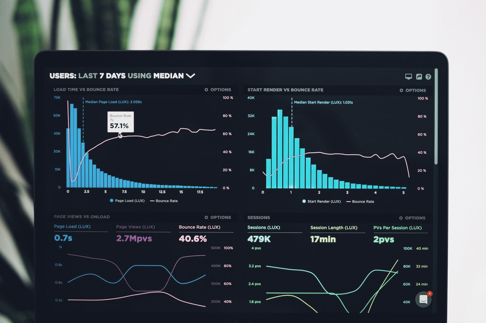
detalhe-painel.jpgLuke Chesser · Unsplashdetalhe-celular-mensagem.jpgfreestocks · Unsplashdetalhe-caderno-escrita.jpgInfralist.com · Unsplashdetalhe-cafe-janela.jpgZach Ramelan · Unsplashdetalhe-calculadora.jpgFIN · Unsplashdetalhe-post-its.jpgKelly Sikkema · Unsplashdetalhe-anotacoes.jpgPaico Oficial · UnsplashFundos sem pessoa para capa, banner e tipografia grande. 5 fotos.
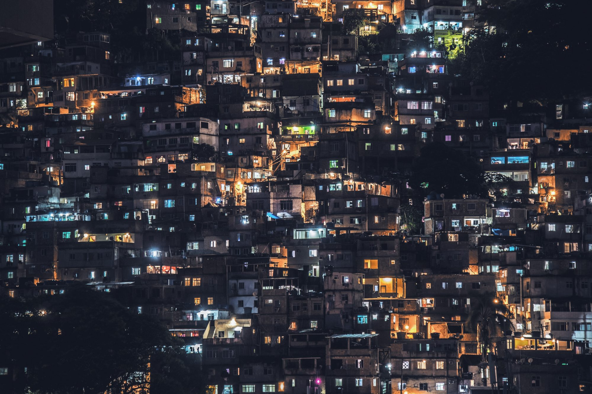
textura-morro-noite.jpgRafael Peier · Unsplash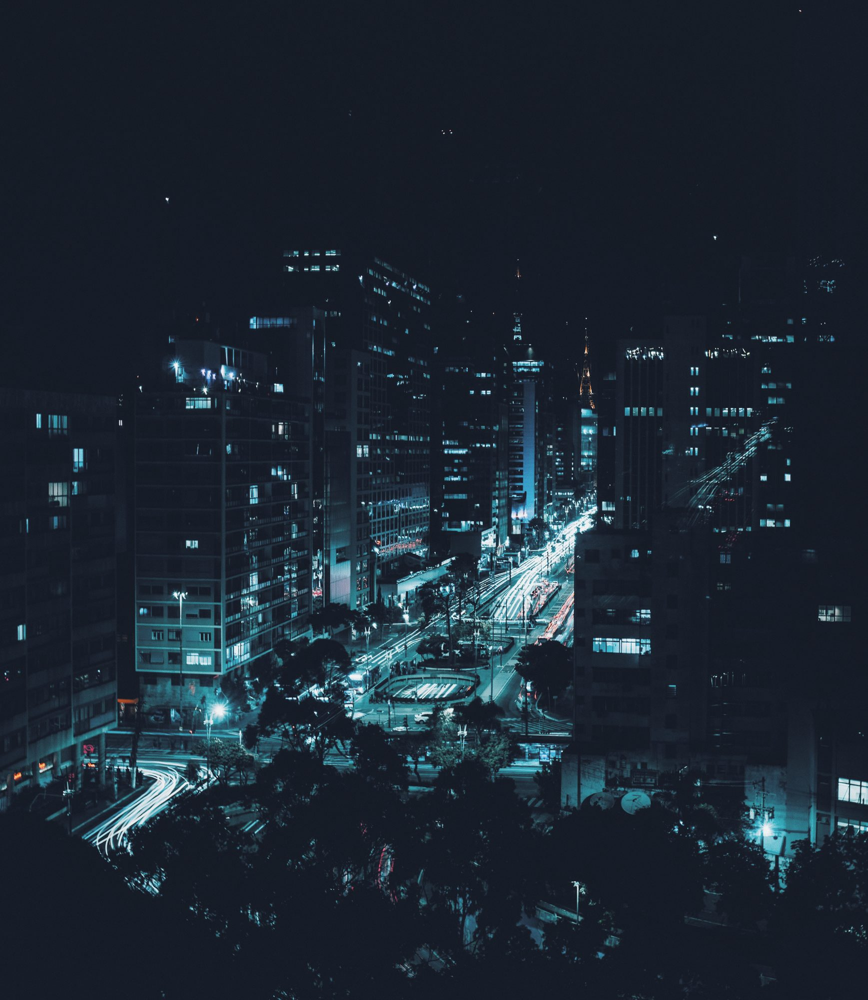
textura-cidade-noite.jpgFederico Velazco · Unsplash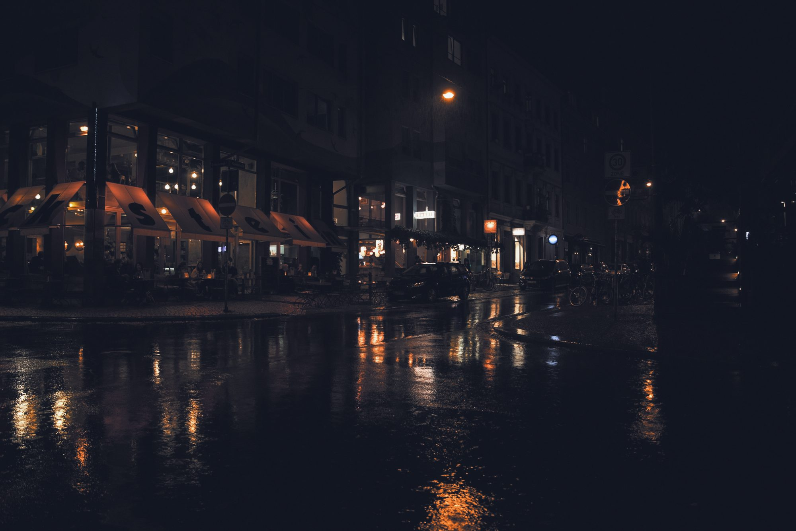
textura-rua-molhada.jpgLeon S · Unsplashtextura-linhas-laranja.jpgRob Farella · Unsplashtextura-rastro-luz.jpgtraf · Unsplash<categoria>-<cena>.jpg, em minúsculas e sem acento. Categorias: dono, time, operador, ambiente, detalhe, textura, fundador.grade.py e ganha uma entrada no creditos.json.{
"arquivo": "dona-mesa-amarela.jpg",
"duotone": "dona-mesa-amarela-duo.jpg",
"autor": "Ândrea Ferreira",
"url_pagina": "https://www.pexels.com/photo/…",
"licenca": "Licença Pexels (uso comercial gratuito)",
"licenca_url": "https://www.pexels.com/license/",
"descricao": "Empreendedora trabalhando no notebook numa mesa amarela",
"categoria": "dono"
}A GrowAI não ilustra pessoas, mascotes nem metáforas. Ela desenha o mecanismo: por onde a receita passa, onde trava e o que fazer primeiro. Cada diagrama tem um único ponto laranja, e ele é a resposta.
19.1 · O que desenhamos
Tudo o que a GrowAI desenha cabe em três famílias. Cada uma responde a uma pergunta diferente do dono. Se um desenho não responde a nenhuma das três, ele não entra.
“Aqui está o foco.”
Anéis, ponto de foco, grade de pontos e o próprio radar. Vêm do “g” do logo e marcam o que importa numa capa, num fundo ou numa tela. Detalhe no capítulo 16.
“É assim que a receita anda.”
Caminho, ciclo, gravata, fluxo e arquitetura. Explicam o método e a jornada do cliente sem nenhuma palavra a mais. É o assunto deste capítulo.
“O número prova.”
Barras, linha, funil, número grande. Sempre com título que afirma, fonte e data. Detalhe no capítulo 20.
Nem em post, nem em proposta, nem em slide de palestra.
19.2 · Anatomia de um diagrama
Todo diagrama da GrowAI tem as mesmas sete partes, na mesma ordem de leitura. Quem bate o olho entende a conclusão pelo título e encontra a prova no ponto laranja.
Deslize o diagrama para o lado →
19.3 · Peças de construção
Os diagramas usam um conjunto pequeno de peças sobre uma grade de 8 px. Com elas se monta qualquer fluxo, funil ou mapa, e todos parecem da mesma família.
Três espessuras. Nada abaixo de 1 px nem acima de 2 px.
A forma diz o que a coisa é: etapa, sistema, base ou foco.
Linhas retas ou em ângulo reto. A curva fica para o fluxo de dados que converge.
Cor só com motivo. A ausência de dado aparece, nunca vira zero.
As três famílias da marca, cada uma com um papel.
19.4 · Biblioteca de diagramas
Antes de desenhar um diagrama novo, procure aqui. Quase toda explicação da marca cabe num destes seis, e cada um já existe pronto no motor ou em arquivo.
A esteira aprender, organizar e escalar, sempre nessa ordem e com a cor de cada linha. O ponto de foco marca onde o cliente está.
data-gforms="caminho"formas/growai-caminho-noite.svgMedir, diagnosticar, focar, destravar, escalar. O focar em laranja, porque é ali que o método se diferencia.
data-gforms="ciclo"formas/growai-ciclo-noite.svgA jornada inteira, do lead à expansão, com o nó no meio. Mostra que a receita continua depois da venda e onde ela trava. Os números são o mesmo funil de exemplo da anatomia (19.2) e da página A4 (19.5): o gargalo marcado é sempre a menor taxa.
data-gviz tipo bowtiePasso a passo numerado de uma rotina, como o atendimento de um agente. O passo que resolve o problema é o destaque. Na largura da página, os passos ficam lado a lado; no celular, empilham.
data-gviz tipo fluxoA GrowAI no topo e as três linhas embaixo, ligadas por um mesmo traço. O ponto laranja fica com a marca-mãe; as linhas usam só a própria cor.
Seis fontes que não conversam viram uma base única, que vira um painel, que aponta um gargalo. É a promessa da GrowAI em uma imagem.
19.5 · Diagramas em peças reais
Num slide, num post ou numa página de relatório, o diagrama é a imagem principal. Ele recebe o espaço grande; o texto fica curto ao lado.
Seus dados já existem. Só não conversam.
Juntamos marketing, vendas e financeiro numa base só. O painel aponta onde a receita trava.
Uma em cada dez propostas vira venda. Esse é o gargalo.
A empresa gera leads suficientes e marca reuniões no ritmo esperado. A perda está depois da proposta: 83 de cada 92 propostas não têm retorno em até 9 dias (dados ilustrativos).
O que fazer primeiro1Retorno de toda proposta em até 48 horas, com responsável definido.
2Taxa de proposta que vira venda medida por vendedor, toda semana.
3Só depois disso, mais investimento em tráfego.
Primeiro aprende, depois organiza. Só então escala.
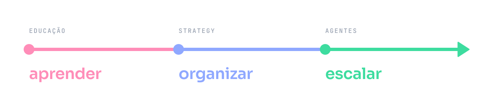
O mesmo diagrama em três formatos. A ordem de leitura, os números e o ponto de foco não mudam; só a direção.
A receita trava na proposta.
A receita trava na proposta.
A receita trava na proposta.
19.6 · Faz e não faz
Lead, reunião, proposta, venda. Quatro etapas, a mesma informação. Do lado certo dá para decidir em dois segundos; do lado errado, dá para admirar o desenho e não entender nada.
Um laranja, no gargalo. O olho vai direto para a resposta.
Laranja em todas as etapas. Se tudo é foco, nada é.
Traço de 1,5 a 2 px, nós planos, fundo do campo.
Isometria, degradê, sombra e seta grossa de apresentação genérica.
Uma palavra e um número por nó. A explicação vai no texto ao lado.
Frase inteira dentro de cada caixa, em letra miúda.
Traço fino com seta aberta. O conector liga e some; quem aparece é a etapa.
Setas curvas, grossas e coloridas. As cores das linhas usadas como enfeite.
19.7 · Especificação e arquivos
As medidas abaixo valem para diagrama desenhado em 1× (1 px de SVG = 1 px de tela). Em peça de 1080 px, multiplique traço e texto por 2.
gforms.svg('ciclo',{campo:'dia'}) · gviz.svg(el)<!-- 1× · campo dia --> <svg viewBox="0 0 360 120" xmlns="http://www.w3.org/2000/svg"> <!-- conector 1,5 px --> <line x1="71" y1="56" x2="169" y2="56" stroke="#0C0F14" stroke-width="1.5"/> <!-- etapa: círculo 22 px, contorno 2 px --> <circle cx="60" cy="56" r="11" fill="#FFFFFF" stroke="#0C0F14" stroke-width="2"/> <!-- foco: o único laranja --> <circle cx="180" cy="56" r="26" fill="#FF6A1A" opacity=".16"/> <circle cx="180" cy="56" r="11" fill="#FF6A1A"/> <!-- rótulos --> <text x="60" y="100" text-anchor="middle" font-family="Hanken Grotesk" font-size="15">Reunião</text> <text x="180" y="100" text-anchor="middle" font-family="Hanken Grotesk" font-size="15">Proposta</text> </svg>
Imagem gerada por IA
Textura, sim. Rosto e diagrama, nunca.
Imagem gerada por IA só serve como fundo abstrato: luz, cidade, rastro, grão. Rosto gerado engana quem vê. Diagrama gerado inventa etapa e número. Os diagramas saem sempre das peças deste capítulo, dos motores gforms.js e gviz.js ou dos arquivos em assets/formas/.
Observação. As três texturas acima são fotos reais do banco aprovado (18.10), mostradas como referência do que uma textura pode ser. Textura gerada por IA segue o mesmo tratamento de cor e entra no banco com a indicação “gerada por IA” no creditos.json.
O gráfico da GrowAI faz o que o radar faz: passa por todos os dados e aponta um. O título afirma, um item fica laranja, a fonte e a data assinam embaixo. Sempre.
20.1 · Anatomia
O dono olha o gráfico por três segundos. Nesse tempo ele precisa saber o que aconteceu, onde está o problema e de onde veio o número. Por isso cada gráfico tem seis partes fixas, sempre na mesma ordem.
O assunto, em IBM Plex Mono caixa alta. Diz o que foi medido e, quando for o caso, a palavra exemplo.
A conclusão em Newsreader, numa frase. Se o título não cabe numa frase, o gráfico ainda não tem conclusão.
Cinza com contraste de pelo menos 3:1, ou a cor da linha quando o gráfico mora num endereço de linha.
O único item em #FF6A1A, com o valor em texto forte. É o gargalo, a etapa ou o mês que a conclusão aponta.
Barras sempre começam no zero. A unidade fica no fim da linha de base, em mono.
Obrigatórias no rodapé. Sem fonte, o motor escreve "Dado ilustrativo · fonte a informar" e avisa no console.
Propostas por semana
O leitor ainda precisa descobrir o que olhar. Ele vai olhar o maior número, que nem sempre é o que importa.
A terceira semana concentra o atraso
A conclusão chega antes do desenho. O desenho vira a prova, e o laranja confirma o ponto.
20.2 · Os onze tipos do gviz
O motor gviz.js tem onze tipos. Cada um responde uma pergunta do dono. Se a pergunta não está aqui, a resposta provavelmente é uma tabela.
Barras em pé para períodos curtos e categorias com rótulo curto. Barras deitadas para ranking e rótulos longos.
barrasAté 12 itens. Rótulo de até 10 letras.rankingDo maior para o menor, sempre.Linha para tendência contínua, com a meta tracejada quando existir. Linha do tempo para marcos, com o "agora" em laranja.
linhaSeis pontos ou mais. Meta com referencia.linha-tempoAté seis marcos.Composição em barra única para até quatro partes. Anel para uma só fatia contra o todo. Pizza não existe no sistema.
composicaoAté quatro partes que somam 100%.anelUma fatia só. Laranja só com destaque.Funil para etapas com perda, com a taxa de passagem entre elas. Fluxo para um processo sem números, com o passo em foco.
funilAté seis etapas, com taxas.fluxoTrês a seis passos, um em foco.Quando um número basta, ele vira a imagem. A pequena série embaixo mostra de onde ele veio. A cota mede espaços em peças e especificações.
numeroUm número por peça, com serie opcional.Especificação de slide · exemplo
O gráfico ocupa 900 px, dentro da zona segura de 120 px.
cotaMedida entre dois traços: largura do gráfico, margem, zona segura.20.3 · O gráfico da casa
O bowtie mostra a jornada inteira em oito momentos: quatro antes da venda, que afunilam, e três depois, que abrem. O lado direito é o que quase nenhuma empresa mede. A etapa-gargalo acende em laranja, com a taxa de quem segue para a próxima. Na marca-mãe a série é neutra; o Cobalto só entra quando o bowtie mora no GrowAI Strategy.
20.4 · Cor nos dados
A série segue o endereço onde o gráfico mora. O laranja não muda de lugar: é sempre o ponto de foco, um por gráfico.
Toda série começa cinza. Na noite, cinza claro sobre #0B0D12.
Só quando o gráfico mora numa linha. Uma linha por gráfico.
O item que a conclusão aponta. Texto laranja pequeno usa #B33E0A no dia e #FF8A4C na noite.
Bom, atenção, crítico. Nunca sozinhas: sempre com o rótulo escrito ao lado. Fora do motor.
20.5 · Número em português
Número é IBM Plex Mono, com algarismos da mesma largura para alinhar em coluna. O formato é o brasileiro, curto e lido em voz alta sem tropeço.
receita no mês · exemplo
oportunidades que viram venda
diferença entre duas taxas
leituras de dados · exemplo
| Grandeza | Escreva | Não escreva | Regra |
|---|---|---|---|
| Dinheiro | R$ 412 mil · R$ 1,42 mi | R$412.000,00 · 1.42M | Arredonde para mil ou milhão. Centavos só em fatura. |
| Percentual | 10,3% | 10.3 % · 10,30% | Uma casa decimal, sem espaço antes do sinal. |
| Diferença de taxas | +5,6 p.p. | +5,6% | De 4,7% para 10,3% são 5,6 pontos percentuais. "+5,6%" confunde com crescimento relativo. |
| Quantidade | 18.420 | 18,420 · 18.4k | Ponto de milhar a partir de 10.000. |
| Data | 03/10/2026 · out. 2026 | 2026-10-03 · Oct 26 | Mês abreviado em minúscula, com ponto. |
| Prazo | 9 dias · 48 h | 9d · 48hrs | Unidade sempre presente; dia por extenso, hora como h. |
| Origem | medido · derivado · estimado | sem indicação | Todo número diz de onde vem. Ausência de dado não vira zero. |
Deslize a tabela para o lado →
20.6 · Faz e não faz
Um gráfico bonito que engana custa mais caro que um gráfico feio. A marca diz "os dados dizem qual". O desenho não pode dizer outra coisa.
Série neutra, o canal da conclusão em laranja. O olho vai direto ao ponto.
Vendas por canal
Vendas por canal no trimestre
Uma cor por barra parece mais "rico" e não diz nada. Sem fonte, sem data, título que só descreve.
Do zero, a melhora tem o tamanho real. Pequena e verdadeira.
Presença na reunião
A presença explodiu
Eixo cortado em 90 faz 4 pontos parecerem três vezes mais. É exatamente o tipo de promessa que a marca recusa.
Leads por semana · exemplo
O volume se manteve; duas semanas sem leitura
Fonte: CRM · dado ilustrativo · out. 2026
A lacuna aparece como lacuna, com o motivo escrito.
Leads por semana
Os leads despencaram
O CRM caiu duas semanas e o gráfico inventou uma crise. O laranja aponta para um erro.
Quatro partes no máximo, lidas da esquerda para a direita. O resto vira "Outros".
Sete fatias, perspectiva e sombra. Ninguém compara ângulos. Pizza e 3D não existem no sistema.
| Título afirma | “A receita trava na proposta”, não “Funil de vendas”. |
| Um destaque | Só um item em laranja. O resto neutro ou na cor da linha. |
| Fonte e data | Obrigatórias no rodapé. Dado de exemplo diz “dado ilustrativo”. |
| Medido, derivado, estimado | Diga qual é. Ausência de dado não vira zero. |
| Escala honesta | Barras do zero. Sem 3D, sem sombra, sem pizza. |
| Rótulo direto | O valor escrito na barra ou no ponto. Legenda só com duas séries. |
| Semânticas com palavra | Verde, âmbar e vermelho nunca aparecem sem “bom”, “atenção” ou “crítico”. |
| Dado pessoal | Nunca nome, telefone ou e-mail de cliente final (LGPD). Cliente só com segmento no lugar do nome. |
20.7 · Painel-exemplo
O painel do GrowAI Strategy abre pela restrição da semana. Indicadores, bowtie e tendência servem a ela. Tudo neste painel é exemplo.
Na etapa M4, oportunidade aberta, propostas paradas há mais de 9 dias concentram 62% da receita em aberto. Prazo de resposta: 48 h.
No celular
Em 390 px o painel vira uma coluna: a restrição, o número em foco com a série de onde veio e um botão para o plano de ação. O resto fica a um toque.
Sem. 40Propostas paradas há mais de 9 dias.
20.8 · Peças e código
O gviz desenha em SVG puro e sempre do mesmo jeito. Com a opção largura o gráfico ganha medida fixa e escala junto com a peça.
Julho teve mais reuniões, não mais vendas.
O volume subiu 43%. A passagem para proposta não acompanhou (exemplo).
10,3%
das oportunidades viram venda. Eram 4,7%.
Num e-commerce de embalagens, em oito meses.
Um div com o JSON no atributo. O motor lê o fundo real e escolhe Noite ou Dia. Para Canva e slide, exporte o SVG.
<!-- 1. o motor --> <script src="gviz.js"></script> <!-- 2. o gráfico: título que afirma, um destaque --> <div data-gviz='{ "tipo":"bowtie", "sobretitulo":"Jornada M1 a M8 · exemplo", "titulo":"Só 16% dos leads aceitos viram oportunidade", "valores":[1240,560,300,48,38,35,29,11], "taxas":true, "gargalo":2, "fonte":"CRM · dado ilustrativo", "data":"out. 2026"}'></div> // 3a. exportar o gráfico que já está na página const svg = gviz.svg(document.querySelector('[data-gviz]')); // 3b. desenhar fora da página, para o Canva ou o slide const svgNoite = gviz.svg('bowtie', { valores:[1240,560,300,48,38,35,29,11], gargalo:2, campo:'noite', largura:960, fonte:'CRM', data:'out. 2026' });
Tudo que se mexe na GrowAI está procurando alguma coisa. Sai do lugar com decisão, desacelera ao chegar e para no ponto. Nada gira por girar, nada pisca para pedir atenção.
21.1 · Princípios
A marca promete foco. Uma tela cheia de coisas se mexendo é o contrário disso. Por isso o movimento da GrowAI é raro, curto e sempre termina num quadro parado que se lê sozinho.
O quadro final é o que importa: é ele que vai para o print, o PDF e quem desliga animação no aparelho. Se o quadro final não se explica sozinho, a animação está escondendo um problema.
estado final legível · sempreComo um gargalo por vez. Dois elementos se mexendo ao mesmo tempo disputam o olho. Quando vários itens entram, eles entram em fila, com 60 ms entre um e outro, no máximo cinco.
cascata 60 ms · até 5 itensClique e hover respondem em 160 a 320 ms: a pessoa está trabalhando. Revelação de seção leva 640 ms, e marca nunca passa disso. Exceções: gráfico (até 1 s, porque desenha em etapas), radar (uma volta a cada 6 s) e vídeo.
160 · 320 · 640 ms · gráfico até 1 s · radar 6 sCom movimento reduzido no aparelho, na impressão e em captura automática, tudo nasce no quadro final: radar parado com o ponto aceso, gráfico desenhado, aviso visível.
prefers-reduced-motion · impressão21.2 · Curvas de aceleração
A curva diz como o objeto acelera. A da casa sai rápido e assenta devagar, como o olho que encontra o ponto. Cada pista mostra 12 posições do objeto em intervalos iguais de tempo: onde os pontos se juntam, ele está devagar; onde se espaçam, está rápido.
Revelação de seção, entrada de painel, seta do botão. É a assinatura do movimento GrowAI.
Algo que chega à tela: aviso, menu, janela. Mais decidida que a de foco.
Algo que vai embora: acelera e some. Sempre mais curta que a entrada correspondente.
Mudança no mesmo lugar: cor, tamanho, a aba que troca, o indicador que desliza.
Exclusiva do radar e de barras de progresso. Em qualquer outro lugar, a reta parece máquina.
As pistas andam no mesmo tempo para comparar a forma. Na interface, cada curva usa a duração indicada.
21.3 · Durações
As barras abaixo enchem no tempo real de cada duração. Interface nunca passa de 320 ms. Marca nunca passa de 640 ms. Exceções: gráfico (até 1 s, porque desenha em etapas), radar e vídeo.
--d-rapidaHover, pressionar, foco de teclado, saída.
--d-mediaAba, menu, aviso, seta do botão.
--d-lentaRevelação de seção, transição de página.
--d-radarUma volta da varredura, constante.
| Movimento | Duração | Curva | O que muda |
|---|---|---|---|
| Hover do botão | 160 ms | padrão | Fundo de #FF6A1A para #FF7D36 |
| Seta do botão | 320 ms | foco | Anda 3 px para a direita |
| Aba e indicador | 320 ms | padrão | Indicador desliza sob a aba |
| Aviso entrando · saindo | 320 · 160 ms | entrada · saída | Opacidade e 8 px na vertical |
| Revelação de seção | 640 ms | foco | Opacidade e 18 px; uma vez só |
| Entrada de gráfico (gviz) · exceção | 680 a 1.000 ms | motor | Desenha em etapas: barras crescem da base, linha se desenha, destaque por último |
| Varredura do radar | 6 s por volta | linear | Rotação contínua; pausa fora da tela |
Deslize a tabela para o lado →
21.4 · O radar em movimento
O único movimento contínuo da marca. Ele não acelera, não volta e não pisca. Quando encontra o ponto, o ponto fica aceso: o foco não se perde.
Velocidade constante. Pontos neutros acendem quando o feixe passa.
Cada ponto leva cerca de 1,8 s para voltar ao cinza. O rastro mostra por onde o radar já leu.
Laranja, com pulso lento a cada 1,8 s. O aviso aparece em 0,5 s logo depois.
O foco continua aceso. Fora da tela, o radar pausa.
21.5 · Transição de página
Nada desliza de lado, nada vira cartão. A página atual some rápido; a nova entra em fila: título, texto, botão, imagem. O botão de ação é sempre o último a chegar.
Toda receita tem um gargalo. Os dados dizem qual.
A GrowAI lê os dados do seu comercial, aponta o ponto que trava a receita e organiza a semana em volta dele.
Fazer o Raio-X do Negócio →Aprender a ler a própria receita.
Organizar o comercial em volta do gargalo.
Escalar o que já funciona, com agentes.
Página atual, parada. A pessoa clica em “Strategy”.
Toda receita tem um gargalo. Os dados dizem qual.
A GrowAI lê os dados do seu comercial, aponta o ponto que trava a receita e organiza a semana em volta dele.
Fazer o Raio-X do Negócio →Aprender a ler a própria receita.
Organizar o comercial em volta do gargalo.
Escalar o que já funciona, com agentes.
Sai a página atual: opacidade e 8 px para cima, curva de saída.
Organizar a receita antes de acelerar.
Entra o título, 18 px de baixo para cima, curva de entrada.
Organizar a receita antes de acelerar.
Medimos a jornada do lead ao contrato, achamos o gargalo e montamos o plano da semana com o seu time.
Painel da jornada M1 a M8 · plano semanal
Texto a cada 60 ms. A foto entra devagar, na curva de foco.
Organizar a receita antes de acelerar.
Medimos a jornada do lead ao contrato, achamos o gargalo e montamos o plano da semana com o seu time.
Painel da jornada M1 a M8 · plano semanal
Agendar o diagnóstico →Por último, o botão. A página para e fica legível.
Deslize os quadros para o lado →
Toda receita tem um gargalo. Os dados dizem qual.
A GrowAI lê os dados do seu comercial, aponta o ponto que trava a receita e organiza a semana em volta dele.
Fazer o Raio-X do Negócio →Aprender a ler a própria receita.
Organizar o comercial em volta do gargalo.
Escalar o que já funciona, com agentes.
Organizar a receita antes de acelerar.
Medimos a jornada do lead ao contrato, achamos o gargalo e montamos o plano da semana com o seu time.
Painel da jornada M1 a M8 · plano semanal
Agendar o diagnóstico →O botão troca a página com os tempos de produção. Repare que nada chega junto: a fila é o que dá a sensação de calma.
21.6 · Microinterações
Cada microinteração confirma que o sistema ouviu. Todas abaixo funcionam: passe o mouse, clique, use o teclado.
É o único laranja da tela e o único pedido. Ele responde em três estados, nessa ordem, sem mudar de tamanho nem de lugar: o fundo esquenta, a seta anda, o clique afunda 1 px.
hover fundo #FF6A1A → #FF7D36 · 160 ms · padrão
seta +3 px · 320 ms · foco
clique desce 1 px · sem sombra, sem brilho
contorno 2 px #FF6A1A
distância 3 px · sem animação
regra nunca remover o contorno
clique vira "Copiado" em laranja
volta depois de 1,6 s
sem toast, sem som
indicador desliza · 320 ms · padrão
cor a da linha do endereço
texto troca sem animação
entra 320 ms · 8 px · entrada
sai 160 ms · saída
fica até a pessoa fechar
troca some em 160 ms e volta
nunca contar de zero rolando
fonte Plex Mono tabular
forma radar de 48 px, traço 1,5 px, sem ponto de foco
tempo 6 s por volta, linear
nunca círculo genérico girando
21.7 · Vídeo: abertura e encerramento
A abertura dura 3 s e o encerramento 4 s, em qualquer vídeo da GrowAI: reels, YouTube, aula, apresentação gravada. O anel do símbolo é revelado como uma varredura de radar.
Toda receita tem um gargalo. Os dados dizem qual.
0,0 → 3,0 s · depois corta para o conteúdo
A varredura dura 1,2 s, na mesma direção do radar. O logo entra na curva de foco e a assinatura chega por último.
Toda receita tem um gargalo.
Noite e a grade de pontos: os dados antes da leitura.
A varredura revela o “g”, no sentido do relógio.
O símbolo completo, no degradê original.
O nome assenta ao lado do “g”: logo claro inteiro.
Toda receita tem um gargalo. Os dados dizem qual.
A assinatura chega. Corte seco para o conteúdo.
Deslize os quadros para o lado →
Último quadro do conteúdo. Legenda em Hanken 600, centralizada.
Corte para a noite. O radar encontra o ponto e para.
Toda receita tem um gargalo. Os dados dizem qual.
Logo claro e assinatura, na curva de foco.
Um só pedido, com o endereço. Sem botão desenhado: vídeo não se clica.
Deslize os quadros para o lado →
| Item | Regra |
|---|---|
| Formatos | 1920 × 1080 (16:9) e 1080 × 1920 (9:16). No vertical, a vinheta usa o mesmo desenho, centralizado, dentro da zona segura. |
| Quadros | 30 por segundo. Exportar em H.264, com a abertura e o encerramento como arquivos separados para reaproveitar. |
| Duração | Abertura 3 s. Encerramento 4 s. Reels com menos de 30 s usam só o encerramento. |
| Legenda | Sempre ligada. Hanken Grotesk 600, branco sobre faixa noite a 78%, até duas linhas. |
| Som | Um único toque curto quando o “g” se completa; sem trilha épica. A validar com a primeira produção. |
| Proibido | Logo girando em 3D, brilho passando, partículas, cérebro ou robô, varredura acelerada. |
21.8 · Código
Quatro curvas, quatro durações e a regra de parar. Copie para o site, o portal ou qualquer página da GrowAI.
Use sempre as variáveis. Valor solto no código vira desvio no primeiro ajuste.
:root{ /* curvas */ --curva-foco:cubic-bezier(.22,1,.36,1); --curva-entrada:cubic-bezier(.16,1,.3,1); --curva-saida:cubic-bezier(.7,0,.84,0); --curva-padrao:cubic-bezier(.4,0,.2,1); /* durações */ --d-rapida:160ms; --d-media:320ms; --d-lenta:640ms; --d-radar:6s; } /* revelação ao rolar: uma vez, em fila */ .revela{opacity:0;transform:translateY(18px); transition:opacity var(--d-lenta) var(--curva-foco), transform var(--d-lenta) var(--curva-foco); transition-delay:calc(var(--i,0) * 60ms)} .revela.visto{opacity:1;transform:none} /* parar também é design */ @media (prefers-reduced-motion:reduce){ *,*::before,*::after{animation:none!important; transition:none!important} .revela{opacity:1;transform:none} }
“Se o gargalo não for de sistema, a gente fala.”Uma frase que desarma antes de vender
A GrowAI fala com o dono, de igual para igual, sobre o negócio dele. Consultiva na estrutura, provocativa nas frases curtas. A voz é sempre a mesma; o tom se ajusta a quem lê.
22.1 · A frase de referência
A primeira dobra do site é a régua da voz. Cada frase faz uma coisa só, e nenhuma pede licença. Quando um texto novo soar estranho, compare com esta.
Referência de voz aprovada · growai.com.br17 palavras · nenhum adjetivo
22.2 · Quatro movimentos
Todo texto da GrowAI usa pelo menos um destes movimentos. Ao lado, a mesma ideia dita dentro e fora da voz.
Dizer o que é, com a firmeza de quem leu os números.
Tem um gargalo na passagem para a proposta.
Podemos te ajudar a crescer de forma sustentável.
Com o dono: receita, margem, time, decisão. Nunca "operação".
A receita do mês está presa em propostas paradas.
Vamos otimizar sua operação comercial com automações.
Dizer o que a GrowAI não faz. Quem ouve sabe se é cliente.
Sem trocar o time. Sem começar pela ferramenta.
Fazemos tudo o que a sua empresa precisar, do jeito que você quiser.
Honestidade antes da venda. O dono já ouviu muita promessa.
Se o gargalo não for de sistema, a gente fala.
Nossa metodologia exclusiva funciona para qualquer empresa.
22.3 · Voz fixa, tom que ajusta
Voz é quem a GrowAI é. Tom é a distância que ela toma em cada lugar. Uma proposta fica perto do consultivo e do formal; um post de tese vai para o provocativo; o WhatsApp chega perto.
Nenhum canal fica fora do mapa. Nem o mais leve vira gíria.
22.4 · O tom muda com o leitor
Antes de escrever, escolha quem vai ler. O vocabulário e a distância mudam; a firmeza fica.
O que segura o seu próximo nível hoje é a decisão sem número.
Empresa de R$ 3 a 20 milhões por ano. Lê pouco, decide rápido, desconfia de promessa.
Três oportunidades estão sem contato há cinco dias. A lista está no CRM.
Quer o número da semana e o que fazer com ele. Sem sermão.
O agente já respondeu os pedidos de status. Faltam duas cotações para você.
Lê no meio do trabalho. Uma ação por mensagem.
IA sem processo só automatiza o caos mais rápido.
Conteúdo, palco e redes. Uma ideia forte por peça, com a prova por perto.
22.5 · A voz de cada linha
Cada linha da GrowAI tem um verbo. Abaixo, a mesma notícia dita por cada uma: o cliente ainda não sabe onde a receita trava.
Ensina o método sem esconder nada. Dá o caminho para quem quer fazer sozinho.
A mesma notíciaFaça o Raio-X do Negócio e veja qual parte da empresa está segurando as outras. Quando quiser velocidade, a gente acelera.
Fala de número, prazo e meta. Cada frase cabe numa ata de reunião.
A mesma notíciaO gargalo é este. A meta é esta. O prazo é este. Em quatro semanas a gente sabe se o ponteiro mexeu.
Mostra o trabalho sendo feito, no presente, com quantidade e hora.
A mesma notíciaEnquanto você lia isto, o agente respondeu 14 clientes e separou 3 propostas para você decidir (exemplo).
22.6 · Regras de escrita
As regras valem para gente e para agente de IA. O bloco de instrução abaixo vai pronto para qualquer ferramenta que escreva em nome da GrowAI.
Cole no começo de qualquer pedido a uma IA que vá escrever para a GrowAI. Depois, confira o texto contra os capítulos 23 e 24.
Você escreve em nome da GrowAI, o sistema de foco da sua empresa. Leitor: dono de empresa brasileira (R$ 3 a 20 mi por ano). Voz: consultiva na estrutura, provocativa nas frases curtas. Faça: - Afirme. "Tem um gargalo", nunca "podemos te ajudar". - Pergunta só no convite: título de anúncio e fecho de post. - Fale de negócio: receita, margem, time, decisão. - Recuse em voz alta: "Sem trocar o time." - Desarme: "Se o gargalo não for de sistema, a gente fala." - Frases curtas. "A gente" para a GrowAI, "você" para o leitor. - Número com fonte. Exemplo marcado como exemplo. Nunca: - solução, implementação, transformação digital, 10x, garantido, robô, bot, operação (com o dono), consultoria gratuita. - Emoji. Mais de dois travessões. Travessão em título. - Grafias Growai, GrowAi, Grow AI. É GrowAI.
Um vocabulário curto, repetido até o mercado associar à GrowAI. E as palavras que tiram a marca do lugar, cada uma com a troca pronta.
23.1 · O dicionário da casa
Uma palavra só vira da marca quando quer dizer a mesma coisa em todo lugar: no site, na proposta, no painel e na conversa de WhatsApp.
O ponto do processo que limita o resultado do negócio inteiro. Melhorar outro ponto não muda o total.
O gargalo deste trimestre é a proposta parada.
Mudar o número que importa, de um jeito que dá para medir. É o que a GrowAI entrega, no lugar de "entregáveis".
Em quatro semanas a gente sabe se o ponteiro mexeu.
Escolher um ponto e concentrar o esforço nele. O resto espera. É a tecnologia da marca.
Foco é a nossa tecnologia.
A categoria da GrowAI. O que a marca é, dito no lugar de "solução", "plataforma" ou "ferramenta".
O sistema de foco da sua empresa.
Tirar o gargalo do caminho para a receita andar. Sempre com o objeto: destravar o quê.
Destravar a passagem da oportunidade para a proposta.
IA que faz o trabalho repetitivo e chama a pessoa certa na hora da decisão. Nunca "robô", "bot" ou "chatbot".
O agente respondeu os pedidos de status e separou duas cotações.
A porta de entrada: perguntas sobre o negócio, e a parte que segura as outras aparece. Quantas perguntas e quanto tempo leva ainda está em definição (P-03). Linha Educação.
Faça o Raio-X do Negócio.
O passo pago depois do Raio-X. Prova o gargalo com os dados do cliente e define a primeira frente.
No Diagnóstico do Gargalo a gente prova isso com os seus dados.
23.2 · Dois nomes em inglês
Entram como nome do método e do topo de Agentes. Na primeira menção ao dono, vêm acompanhados do que significam. "RevOps" e "GTM" soltos não entram no texto principal.
Marketing, vendas e pós-venda funcionando como um só time, com dados únicos e IA de ponta a ponta.
A gente trabalha com o RevOps AI Native, nosso método: marketing, vendas e pós-venda funcionando como uma coisa só, com os mesmos dados.
Fazemos RevOps para escalar o seu GTM.
A máquina de gerar demanda inteira, operada por agentes: conteúdo, caixa de entrada, rede, eventos e anúncios.
O GTM Engineering é a máquina de gerar demanda operada por agentes: do conteúdo ao anúncio, sem aumentar o time.
Nosso GTM Eng. roda SDR com IA full-stack.
23.3 · Evitar e usar
Se a palavra da esquerda aparecer num rascunho, troque pela da direita. O porquê ajuda a explicar a troca para quem escreveu.
A mesma tabela em formato de regras, para um verificador de texto ou um agente revisor procurar as palavras proibidas e sugerir a troca. Cada regra lista as variações separadas por barra vertical.
[
{ "termo": "solução", "usar": "sistema de foco" },
{ "termo": "ferramenta", "excecao": "sem começar pela ferramenta", "usar": "método" },
{ "termo": "implementação", "usar": "resultado" },
{ "termo": "entregáveis", "usar": "meta, ponteiro" },
{ "termo": "transformação digital|disruptivo|revolucionar", "usar": "o resultado, com número" },
{ "termo": "10x|garantido|escalar fácil|fácil|sem esforço|fique rico", "usar": "o caso real, com o segmento" },
{ "termo": "robô|bot|chatbot", "usar": "agente" },
{ "termo": "operação|operacional", "quando": "leitor = dono", "usar": "negócio" },
{ "termo": "consultoria gratuita|consultoria grátis|conversa sem compromisso", "usar": "Raio-X do Negócio" },
{ "termo": "Growai|GrowAi|Grow AI", "caixa": "exata", "usar": "GrowAI" }
]23.4 · Grafia de nomes e números
Nome da marca, das linhas e dos produtos, e o jeito de escrever dinheiro, porcentagem e data. Pequeno, mas é o que faz o texto parecer da mesma casa.
| O quê | Escreva assim | Não assim |
|---|---|---|
| Linhas | GrowAI Educação · GrowAI Strategy · GrowAI Agentes | Growai edu, Strategy GrowAI |
| Produtos | Raio-X do Negócio · Diagnóstico do Gargalo | raio x, Raio X do negócio, diagnóstico |
| “Diagnóstico” | só o Diagnóstico do Gargalo, que é pago | chamar o Raio-X de diagnóstico · “diagnóstico grátis” |
| Portal | strategy.growai.com.br · "o portal Strategy" | a plataforma, o sistema da GrowAI |
| Dinheiro | R$ 231 mil · R$ 1,4 mi · R$ 3 a 20 mi por ano | R$231.000,00 · 1.4M · R$ 3MM |
| Porcentagem | 10,3% · de 4,7% para 10,3% | 10.3 % · +119% |
| Data | 3 de outubro de 2026 · 03/10/2026 | Oct 3 · 3/10/26 |
| Hora | 09:02 · em 48 horas | 9h02min · 48hrs |
| Número de exemplo | R$ 231 mil (exemplo) | R$ 231 mil, sem aviso |
Deslize a tabela para o lado →
Uma marca que diz "os dados dizem qual" não pode prometer o que o dado não mostra. Em público, só resultado medido, com o segmento no lugar do nome do cliente.
24.1 · Anatomia de uma prova
A prova principal é o modelo de toda prova, inclusive dos nove casos publicados em growai.com.br/casos. Tire qualquer uma das quatro peças e ela vira opinião.
Num e-commerce de embalagens,1 a fatia de oportunidades que vira venda2 passou de 4,7% para 10,3%3 em oito meses.4
O segmento entra no lugar do cliente. Nome só com autorização por escrito.
"Fatia de oportunidades que vira venda", não "taxa de conversão SQL-won".
Os dois números medidos. Nunca só o percentual de aumento, nunca arredondado para cima.
Sem período, o número não prova nada. Oito meses, não "em pouco tempo".
Como mostrar em gráfico
Dois números, um destaque.
Barra de antes em neutro, barra de depois em laranja, segmento e período no rodapé. O gráfico sai do motor gviz com fonte e data obrigatórias.
24.2 · As regras
Na dúvida, a regra mais restritiva vence. Prova pública é decisão de marca, não de quem escreveu a peça.
| Situação | Regra | Status |
|---|---|---|
| Resultado de cliente | Número medido, período, fonte e segmento ("e-commerce de embalagens"), exatamente como na página de casos (growai.com.br/casos). Nome e logo só com autorização por escrito. | Permitido |
| Frase de cliente | Só literal e com autorização. Nunca reescrita para soar melhor. | Com autorização |
| "Até 10x", "garantido" | Fica como ambição interna até existir um caso medido que mostre isso. | Vedado |
| Antes e depois de faturamento | Nunca em título de anúncio. Na página, com contexto, período e o aviso de que o resultado depende do negócio. | Com contexto |
| Dado pessoal de cliente final | Nunca em peça. Captura de tela com nome, telefone e e-mail apagados (lei brasileira de proteção de dados, a LGPD). | Vedado |
| Número de exemplo | Pode, desde que marcado como exemplo ou dado ilustrativo. | Permitido |
Deslize a tabela para o lado →
| Segmento | O que pode ser dito | Tipo |
|---|---|---|
| E-commerce de embalagens | A fatia de oportunidades que vira venda passou de 4,7% para 10,3% em oito meses; as vendas originadas foram de 23 para 76 por mês. Prova principal, a da peça curta. | Resultado medido |
| Varejo capilar | Vendas registradas de 39 em maio para 82 em agosto de 2026. | Resultado medido |
| E-commerce | 61% mais pedidos de março a setembro de 2026, contra o mesmo período de 2025. | Resultado medido |
| Educação em odontologia | 3,4 vezes mais ingressos na 2ª edição: 967 contra 288. No atendimento, de 6% para 54% de quem escreve. | Resultado medido |
| Comércio de produtos odontológicos | Recuperação de carrinho: R$ 79,5 mil em agosto e R$ 52,7 mil em setembro de 2026. | Resultado medido |
| Holding de educação | Seis empresas numa plataforma só. Sem número de venda. | Estrutura entregue |
| Clínica de saúde e estética | Estrutura em produção. Sem número de venda. | Estrutura entregue |
| Grupo de franquias de alimentação | Estrutura em produção. Sem número de venda. | Estrutura entregue |
| Assinatura digital com rede de afiliados | Estrutura em produção. Sem número de venda. | Estrutura entregue |
Deslize a tabela para o lado →
Período e fonte de cada número saem como estão no caso, em growai.com.br/casos. Número fora desses casos: não use. Nome e logo de cliente só com autorização escrita.
24.3 · O que cada prova exige
Cada tipo de prova tem uma condição para sair em público. Embaixo, o que nunca sai, por mais que a peça peça.
Ponto A, ponto B, período, fonte e segmento. Nove casos publicados em growai.com.br/casos; na peça curta, a prova principal do e-commerce de embalagens.
Publicados · 9Literal, com autorização por escrito, nome só se autorizado. Nunca reescrita.
Com autorizaçãoResultado que não está em growai.com.br/casos, ou com número, período ou fonte diferentes, não existe para a comunicação.
Não usar"Até 10x", "garantido", "resultado em 30 dias". Vedado até existir um caso medido.
VedadoFora da escada Número de exemplo não é prova: ele explica o método. Ver 24.5.
Nunca arredonde para cima. Nunca use um número fora da página de casos.
24.4 · A regra nas peças
Três situações em que a tentação de prometer é maior: o anúncio, o post de resultado e a captura de conversa.
Sua receita tem um gargalo. Algumas perguntas sobre o seu negócio mostram qual parte está segurando as outras.
Descubra onde a sua receita trava.
Afirma primeiro, depois convida. Promete só o que entrega: descobrir onde trava. Foto documental, um destaque.
Fature 10x mais com IA. Método garantido, sem esforço. Vagas limitadas para consultoria gratuita!
De R$ 80 mil para R$ 800 mil por mês.
GARANTIDO
Antes e depois de faturamento no título, "10x", "garantido", "sem esforço" e conversa gratuita. Tudo vedado, e a plataforma reprova.
10,3%
Num e-commerce de embalagens, a fatia de oportunidades que vira venda passou de 4,7% para 10,3% em oito meses.
A frase inteira, os dois números, o período e a fonte no rodapé.
+119%
Nosso cliente dobrou as vendas com a GrowAI.
Só o percentual de aumento, sem segmento, sem período, sem fonte. E "dobrou as vendas" troca a métrica medida por outra maior.
Nome, número do pedido e endereço cobertos por tarja sólida, não por desfoque. A conversa continua legível.
Nome, pedido, endereço e e-mail à mostra. Dado pessoal de cliente final nunca aparece em peça (LGPD).
24.5 · Número de exemplo
Número inventado para explicar o método é permitido e útil. Só não pode ser confundido com resultado. A marca de exemplo fica colada no número, não num rodapé distante.
A palavra "exemplo" na linha de leitura, logo abaixo do número.
"Exemplo" no sobretítulo e "dado ilustrativo" no rodapé do gviz.
A receita do mês chegou a R$ 231 mil.
No HTML, a classe .exemplo acrescenta o selo sozinha. Em peça fechada, escreva "(exemplo)".
Uma classe, três lugares. Em Canva, apresentação e PDF, escreva a palavra por extenso.
<!-- no texto --> <span class="exemplo">R$ 231 mil</span> <!-- no indicador --> <span class="d">meta 60% · exemplo</span> <!-- no gráfico --> data-gviz='{ ..., "fonte": "Dado ilustrativo", "data": "exemplo" }' .exemplo::after{content:"exemplo"; font:500 .62em "IBM Plex Mono"; text-transform:uppercase}
Cada canal pede um tamanho e uma distância diferentes. A voz não muda. Aqui, cada canal com a peça escrita dentro e fora da voz, lado a lado.
25.1 · O mapa dos canais
Antes de escrever, leia a linha do canal. O texto que tenta fazer dois trabalhos não faz nenhum.
| Canal | O trabalho do texto | Tamanho | Campo | A ação única | Abre com |
|---|---|---|---|---|---|
| Site | Dizer o que a GrowAI é em uma dobra | Título + uma frase | Noite na abertura | Fazer o Raio-X do Negócio | A assinatura |
| Anúncio | Parar o dono no feed com uma tese ou um fato do negócio dele | Uma ideia | Noite ou foto | Fazer o Raio-X do Negócio | A tese; a pergunta só como convite no título |
| Post | Defender uma tese, com prova | Gancho + 5 a 8 linhas | Noite para tese, dia para prova | Uma pergunta para conversa | A tese em uma linha |
| Levar a uma decisão, uma por e-mail | Até 150 palavras | Dia | Um botão | O nome e o achado | |
| Entregar e propor o próximo passo | Até três mensagens curtas | Conversa | Uma resposta | O que ficou pronto | |
| Proposta | Fechar com métrica, meta e prazo | Uma ideia por página | Capa noite, miolo dia | Aprovar o primeiro ciclo | O que o cliente disse |
Deslize a tabela para o lado →
25.2 · Site
A primeira dobra é a régua de tudo. Categoria em rótulo, a assinatura como título, uma frase de apoio e um só botão.
Sua receita tem um gargalo. Os dados dizem qual.
A GrowAI conecta os dados do seu negócio, encontra o ponto que trava o crescimento e concentra tudo nele.
Fazer o Raio-X do Negócio →Afirma, recusa em voz alta e oferece um passo concreto: o diagnóstico, nunca uma conversa gratuita.
Soluções 360° de IA para revolucionar o seu negócio
Transformação digital completa com chatbots, automações e implementação de CRM. Resultados até 10x garantidos.
"Solução", "revolucionar", "implementação", "10x garantido", dois botões e conversa gratuita. Podia ser qualquer agência.
Sua receita tem um gargalo. Os dados dizem qual.
A GrowAI conecta os dados do seu negócio, encontra o ponto que trava o crescimento e concentra tudo nele.
Fazer o Raio-X do Negócio →25.3 · Anúncio
O anúncio para o dono no feed com uma tese ou um fato do negócio dele e leva ao Raio-X. A pergunta, quando entra, é o convite do título. A regra vale também para a página de destino, que a plataforma lê para aprovar o anúncio.
IA sem processo só automatiza o caos mais rápido.
Fazer o Raio-X →Uma tese, foto documental e um só laranja: o botão. Nada de promessa, nada de pergunta sobre a vida do leitor.
Cansado de perder dinheiro? 💸
Nossa IA faz você faturar mais 🔥🚀
Comprar agoraPresume a situação do leitor, emoji, degradê roxo de banco de modelos e "Comprar agora" para um diagnóstico. A plataforma tende a reprovar.
IA sem processo só automatiza o caos mais rápido. Algumas perguntas mostram em que ponto o seu processo trava.
110 caracteresCansado de perder dinheiro? Nossa IA revoluciona suas vendas, sem esforço e com resultado garantido!
Onde o seu processo trava?
26 caracteres · a única pergunta da peçaFature mais em 30 dias, garantido
Raio-X do Negócio · gratuito
28 caracteresSó hoje · vagas limitadas
Saiba mais
a página continua no Raio-XComprar agora
Limites visíveis aproximados das plataformas; conferir no gerenciador antes de publicar. O anúncio de feed com a prova está em 24.4.
25.4 · Post
No LinkedIn do Rafael e da GrowAI, o post defende uma ideia do método. As primeiras duas linhas fazem o trabalho inteiro: é o que aparece antes do "ver mais".
A maioria dos donos que eu atendo acha que falta lead.
Quase nunca é isso.
Num e-commerce de embalagens, a fatia de oportunidades que vira venda passou de 4,7% para 10,3% em oito meses.
Repare no que esse número mede. Não é quantos leads chegam. É o que acontece depois que eles chegam.
Mais lead em cima de um gargalo só aumenta a fila.
Onde a sua receita trava hoje?
🚀 Estamos MUITO felizes em anunciar que a GrowAI agora oferece soluções 360° de IA para revolucionar o seu negócio!!! 💡
Nossa metodologia exclusiva já transformou dezenas de empresas, com resultados de até 10x. 📈
Quer saber mais? Agende sua consultoria gratuita 👉 link nos comentários
A anatomia do post
Sem emoji, sem hashtag em sequência, sem "estamos felizes em anunciar". No Instagram, a mesma tese vira post de uma frase (capítulo 30).
25.5 · E-mail
Na caixa de entrada, o assunto e a primeira linha disputam com dezenas de outros. O e-mail da GrowAI diz o que foi encontrado e pede uma decisão só.
Nome, achado e número. Cabe na tela do celular (até cerca de 40 caracteres no assunto).
Caixa alta, emoji, "grátis", assunto que não diz nada e "Re:" falso. Vira lixo eletrônico.
Marina,
O seu Raio-X do Negócio mostrou que a decisão sem número segura o resto da empresa. Os outros pontos estão melhores do que esse.
No Diagnóstico do Gargalo a gente prova isso com os seus dados e define a primeira frente. Se o gargalo não for de sistema, a gente fala.
Anatomia do e-mail · nomes de exemplo
25.6 · WhatsApp
A primeira mensagem entrega o resultado do Raio-X e o próximo passo. Mensagens curtas, uma ideia em cada, sem emoji. Quem escreve pode ser o time ou um agente, e o tom é o mesmo.
Três mensagens: o que ficou pronto, o achado com o link, a pergunta do próximo passo. Nomes de exemplo; recorte do topo da tela.
Um bloco só, "prezado(a)", emoji, palavras proibidas, link encurtado e urgência falsa.
Regras do WhatsApp
25.7 · Proposta
A proposta segue o método: o que o cliente disse, o gargalo com o número, o custo de não mudar, a frente única, a métrica com meta e prazo. É uma apresentação 16:9, uma ideia por página; o modelo pronto está em deck-template.html.
Em doze semanas, a proposta deixa de ser o gargalo.
41%
oportunidades qualificadas que recebem proposta
60%
a mesma métrica, medida no CRM
12 sem.
leitura na semana 4, ajuste na 8, ponto B na 12
Deslize a página para o lado →
A sequência · oito páginas
Meta do primeiro ciclo: levar a fatia de oportunidades qualificadas que recebem proposta de 41% para 60% em doze semanas, medida no CRM. Os números são de exemplo.
Escopo: implementação de CRM, 12 automações, 3 dashboards, treinamento da equipe e suporte. Entregáveis em até 90 dias.
25.8 · Antes de publicar
Vale para qualquer canal. Se uma resposta for "não", a peça volta. O bloco ao lado vai pronto para o cartão de revisão ou para um agente revisor.
Cole no cartão da peça no ClickUp, na descrição da tarefa ou no pedido a um agente revisor.
## Checklist de texto GrowAI - [ ] Afirma em vez de prometer - [ ] Fala de negócio com o dono (sem "operação") - [ ] Um trabalho e uma ação só - [ ] Número com fonte; exemplo marcado como exemplo - [ ] Prova com segmento, ponto A, ponto B e período - [ ] Nenhuma palavra da lista de evitar - [ ] Até 2 travessões, nenhum em título - [ ] Sem emoji; sem dado pessoal de cliente final - [ ] Grafia: GrowAI, Raio-X do Negócio, Diagnóstico do Gargalo - [ ] Entendido de primeira por alguém de fora do setor
O site, o Raio-X, o portal e cada painel são montados com as mesmas peças. Quem constrói não decide cor, raio nem sombra: escolhe o token. É assim que a marca continua a mesma quando a tela muda.
26.1 · Tokens
O componente nunca sabe se está na noite ou no dia. Ele lê o campo. Trocar a classe do contêiner troca fundo, texto, linha e foco de uma vez, sem reescrever nada.
As cores, medidas e curvas da marca. Mudam só com nova versão do brand book.
Variáveis --f-* que a classe .campo-noite ou .campo-dia preenche.
O botão, o campo, o cartão. Só leem a camada 2 (e o laranja do botão, que é fixo).
Cole no topo da folha de estilo do site, do Raio-X e do portal. Os nomes são os mesmos deste brand book, para que designer, desenvolvedor e agente falem a mesma língua.
/* GrowAI · tokens web · Radar de Foco v4 */ :root{ /* casa */ --foco:#FF6A1A; --foco-txt:#B33E0A; --foco-noite:#FF8A4C; --foco-titulo-dia:#D9530C; --foco-btn-txt:#170A02; /* noite */ --noite:#0B0D12; --noite-2:#141821; --noite-linha:#232936; --noite-txt:#EEF1F5; --noite-corpo:#CBD2DC; --noite-apoio:#9AA3B2; /* dia */ --dia:#FFFFFF; --dia-2:#F6F7F8; --dia-linha:#E4E7EB; --dia-txt:#0C0F14; --dia-corpo:#272D36; --dia-apoio:#4A525E; /* Educação · Framboesa */ --edu:#D63A7A; --edu-txt:#A82259; --edu-bg:#FCEAF2; --edu-noite:#FF8DB8; /* Strategy · Azul Cobalto */ --str:#2F5BEA; --str-txt:#1E3FB8; --str-bg:#EAF0FF; --str-noite:#8FA8FF; /* Agentes · Verde Pulso */ --age:#12A877; --age-txt:#0B7A56; --age-bg:#E5F7EF; --age-noite:#3DDC9F; /* semânticas: sempre com rótulo escrito */ --bom:#0B7A56; --atencao:#B54708; --critico:#B42318; /* tipo */ --ff-display:"Newsreader",Georgia,serif; --ff-texto:"Hanken Grotesk",Arial,sans-serif; --ff-mono:"IBM Plex Mono","Courier New",monospace; /* espaço (base 4) */ --e-1:4px; --e-2:8px; --e-3:12px; --e-4:16px; --e-5:24px; --e-6:32px; --e-7:48px; --e-8:64px; --e-9:96px; --e-10:128px; --e-11:192px; /* raios */ --r-1:4px; --r-2:8px; --r-3:12px; --r-4:16px; --r-5:24px; --r-pilula:999px; /* sombras (só no dia; na noite viram fio) */ --sombra-1:0 1px 2px rgba(11,13,18,.06); --sombra-2:0 1px 0 rgba(11,13,18,.04), 0 12px 32px -16px rgba(11,13,18,.28); --sombra-3:0 2px 4px rgba(11,13,18,.05), 0 36px 72px -36px rgba(11,13,18,.5); /* movimento */ --curva-foco:cubic-bezier(.22,1,.36,1); --d-rapida:160ms; --d-media:320ms; } .campo-dia{ --f-fundo:var(--dia); --f-titulo:var(--dia-txt); --f-texto:var(--dia-corpo); --f-apoio:var(--dia-apoio); --f-linha:var(--dia-linha); --f-foco:var(--foco-txt); /* texto, link e anel de foco */ --f-foco-titulo:var(--foco-titulo-dia); /* itálico de título ≥ 24 px */ } .campo-noite{ --f-fundo:var(--noite); --f-titulo:var(--noite-txt); --f-texto:var(--noite-corpo); --f-apoio:var(--noite-apoio); --f-linha:var(--noite-linha); --f-foco:var(--foco-noite); --f-foco-titulo:var(--foco); }
26.2 · Grade
A grade organiza; o espaço vazio faz o ponto laranja ser visto. Doze colunas no computador, oito no tablet, quatro no celular. O texto corrido nunca passa de 720 px.
| Medida | Computador | Tablet | Celular | Token |
|---|---|---|---|---|
| Largura de tela | ≥ 1100 px | 761–1099 px | 320–760 px | pontos de quebra |
| Colunas | 12 | 8 | 4 | .g12 |
| Largura máxima do conteúdo | 1240 px | tela inteira | tela inteira | --largura |
| Margem lateral | 72 px | 40 px | 16 px | --margem |
| Calha entre colunas | 32 px | 24 px | 16 px | --calha |
| Coluna de leitura | 720 px | 720 px | tela inteira | --largura-texto |
| Espaço entre seções | 128–168 px | 96 px | 80 px | --pad-sec |
Deslize a tabela para o lado →
Acima de 1600 px a largura máxima sobe para 1280 px. Foto e faixa de cor podem sangrar a tela inteira; texto, nunca.
26.3 · Espaçamento
Toda distância vem da régua de base 4. Perto dentro do componente, longe entre ideias. Quando duas coisas estão juntas, é porque pertencem uma à outra.
--e-14ícone e texto--e-28rótulo e campo--e-312itens de uma lista--e-416margem no celular--e-524dentro do cartão · entre cartões--e-632calha no computador--e-748título e conteúdo--e-864entre blocos no celular--e-996entre blocos no computador--e-10128entre seções--e-11192abertura e fechamentoFig. 26.3Proximidade diz parentesco. 24 px entre cartões da mesma ideia; 96 px quando a ideia muda.
26.4 · Raios e sombras
O raio cresce com o tamanho da peça. A sombra existe só no dia e só para dizer o que está por cima. Na noite, a borda faz o trabalho da sombra; só o modal ganha sombra, para sair do véu.
--r-1Código, caixa de seleção, etiqueta pequena.
--r-2Botão, campo, opção, aviso.
--r-3Cartão, KPI, gráfico, tabela emoldurada.
--r-4Painel, modal, menu aberto.
--r-5Bloco grande e foto em destaque.
--r-pilulaSelo de linha e pílula de situação. Nunca botão.
Os cantos acima estão ampliados quatro vezes. Proibido: sombra colorida, brilho, vidro fosco sobre conteúdo, sombra em texto e raio diferente para a mesma peça em telas diferentes.
26.5 · Estados e foco de teclado
Seis estados para tudo que se toca. O anel de foco tem 2 px, fica afastado 3 px da peça e usa a cor de foco do campo: #B33E0A no dia, #FF8A4C na noite. Ele não some com o mouse, não fica só na cor e nunca é removido no CSS.
Deslize a matriz para o lado →
Ação: #FF6A1A → #FF7D36 (hover) → #F25E10 (pressionado), sempre com texto #170A02. O botão afunda 1 px ao ser pressionado.
Fundo #EEF0F3 e texto #4A525E. Diga por perto por que está desabilitado ("Responda a pergunta para continuar").
"Enviando", "Salvando", "Conferindo". Mantém a largura para a tela não pular e bloqueia o segundo clique.
No dia o anel é #B33E0A (5,8:1); na noite, #FF8A4C (8,3:1). Os 3 px de afastamento separam o anel do botão laranja.
/* nunca: *:focus{outline:none} */ /* --f-foco: dia #B33E0A (5,8:1) · noite #FF8A4C (8,3:1) */ :focus-visible{ outline:2px solid var(--f-foco); outline-offset:3px; border-radius:3px; } input:focus-visible, select:focus-visible, textarea:focus-visible{ border-color:var(--f-titulo); outline-offset:2px; } /* primeiro item de toda página: pular para o conteúdo */ .pular{ position:absolute; left:16px; top:-60px; z-index:200; padding:12px 16px; background:var(--dia-txt); color:#fff; border-radius:var(--r-2); } .pular:focus{ top:16px; }
26.6 · Componentes
Tudo o que o site, o Raio-X e o portal usam. As duas colunas abaixo têm exatamente o mesmo HTML. Só a classe do contêiner muda: .campo-dia ou .campo-noite.
Propostas paradas mais de nove dias.
Propostas paradas mais de nove dias.
Um botão de ação por tela, laranja com texto #170A02. O verbo diz o que acontece ("Fazer o Raio-X do Negócio", "Receber o resultado"). O secundário é contorno; o terciário é link sublinhado.
<a class="btn" href="/raio-x">Fazer o Raio-X do Negócio
<svg class="seta" aria-hidden="true" …></svg></a>
<button class="btn btn-sec peq" type="button">Agora não</button>
.btn{
display:inline-flex; align-items:center; gap:10px;
min-height:48px; padding:0 22px;
font:600 16px/1.25 var(--ff-texto);
border-radius:var(--r-2);
background:var(--foco);
color:var(--foco-btn-txt);
border:1px solid var(--foco);
transition:background var(--d-rapida) var(--curva-foco);
}
.btn:hover{ background:#FF7D36; }
.btn:active{ background:#F25E10; transform:translateY(1px); }
.btn[aria-disabled="true"]{
background:var(--dia-3); color:var(--dia-apoio);
border-color:var(--dia-3);
}
.btn-sec{
background:transparent; color:var(--f-titulo);
border-color:var(--f-linha-2);
}
.btn.peq{ min-height:40px; padding:0 16px; font-size:14.5px; }
@media (max-width:760px){ .btn{ width:100%; white-space:normal; } }Rótulo sempre visível acima do campo (o texto de exemplo some quando a pessoa digita). O erro diz o que fazer, em texto e com ícone, logo abaixo. Peça só o que vai usar.
<div class="campo">
<label for="cnpj">CNPJ da empresa</label>
<input id="cnpj" name="cnpj" inputmode="numeric" autocomplete="off"
aria-invalid="true" aria-describedby="cnpj-erro">
<p class="campo-erro" id="cnpj-erro">
<svg aria-hidden="true" …></svg>Faltam dois números. O CNPJ tem 14 dígitos.
</p>
</div>Cartão só quando o conteúdo é um objeto que se separa dos outros. Em painel, a restrição vem antes dos números, em neutro. O laranja é do KPI (o indicador que o ciclo quer mexer) que o ciclo existe para mover: só ele ganha a borda e o número laranja.
Passagem de oportunidade qualificada para proposta: 41% contra a meta de 60%.
Dados de exemplo
<div class="restricao"><b>Restrição atual</b>
<p>Passagem de oportunidade qualificada para proposta.</p></div>
<div class="kpis">
<div class="kpi"><span class="k">Meta do ciclo</span><span class="v">R$ 300 mil</span></div>
<div class="kpi foco"><span class="k">Qualificada → proposta</span>
<span class="v">41%</span><span class="d">meta 60%</span></div>
</div>A aba ativa é marcada por fio grosso e peso, nunca só por cor. Aviso de sistema usa a cor semântica no ícone e no fio, com título em palavra. O laranja fica fora disso: ele é do foco, não do erro.
<div class="abas" role="tablist" aria-label="Painel do ciclo"> <button role="tab" aria-selected="true" aria-controls="p-inicio" id="t-inicio">Início</button> <button role="tab" aria-selected="false" aria-controls="p-forecast" id="t-forecast" tabindex="-1">Forecast</button> </div> <section role="tabpanel" id="p-inicio" aria-labelledby="t-inicio">…</section>
Logo à esquerda, quatro destinos, o botão do Raio-X à direita. No celular, um botão de menu de 44 px abre a lista em tela cheia na noite, com o mesmo botão no fim.
<button class="menu-abre" aria-expanded="false"
aria-controls="menu" aria-label="Abrir menu">
<svg aria-hidden="true" …></svg>
</button>
<nav id="menu" class="menu campo-noite" hidden>
<ol>
<li><a href="/metodo">Método</a></li>
<li><a href="/linhas">Linhas</a></li>
<li><a href="/casos">Casos</a></li>
<li><a href="/conteudo">Conteúdo</a></li>
</ol>
<a class="btn cheio" href="/raio-x">Fazer o Raio-X</a>
</nav>Tabela com números alinhados à direita em fonte mono, fio entre linhas e a linha do gargalo marcada com fundo suave e filete laranja. Modal só para confirmar o que não tem volta; nunca para vender.
| Etapa | Set | Out | Meta |
|---|---|---|---|
| Oportunidades qualificadas | 72 | 78 | 80 |
| Propostas enviadas | 31 | 32 | 48 |
| Vendas fechadas | 9 | 12 | 14 |
As metas do ciclo ficam congeladas e o relatório final é enviado ao time. Isso não pode ser desfeito.
26.7 · Faça e não faça
Uma ação laranja; a alternativa como link. A pessoa sabe o que fazer em um segundo.
Dois laranjas disputando, um em pílula. E "falar com especialista" vende conversa gratuita, que a GrowAI não oferece.
Erro em cor, ícone e frase que ensina a corrigir. Funciona para quem não distingue vermelho.
Rótulo dentro do campo, erro só na cor da borda e uma mensagem que não diz o que fazer.
ArtigoHomePágina de linhaRaio-X do NegócioObrigado
O dono chega por um artigo ou pela home, entende a linha que serve para ele e faz o Raio-X do Negócio. Toda página modelo leva para esse mesmo botão. Nenhuma oferece conversa gratuita.
27.1 · Home · growai.com.br
Sete blocos, sempre nesta ordem. Cada um cabe numa tela e diz uma coisa só. A página inteira está abaixo, em escala, com o mesmo botão no começo e no fim.
Toda receita tem um gargalo. Os dados dizem qual.
A GrowAI conecta os dados do seu negócio, encontra o ponto que trava o crescimento e concentra o time nele.
Fazer o Raio-X do Negócio →O caos tem número.
Um gargalo por vez.
Medir, diagnosticar, focar, destravar e escalar. O ciclo recomeça quando a restrição muda de lugar.
Um caminho, três linhas.
A fatia de oportunidades que vira venda passou de 4,7% para 10,3% em oito meses.
Fonte: CRM do cliente · oito meses. Imagem de detalhe, sem pessoa.
Para o cliente errado, isto é um filtro.
Toda receita tem um gargalo. Os dados dizem qual.
Fazer o Raio-X do Negócio →Deslize para ver a página em escala →
Toda receita tem um gargalo. Os dados dizem qual.
Encontramos o ponto que trava o seu crescimento.
Fazer o Raio-X do Negócio27.2 · Página de linha
Na página de uma linha, a cor da linha vira a principal: selo, faixa, ícones e gráficos. O logo e o botão continuam GrowAI. A foto mostra quem usa aquela linha, trabalhando de verdade.
Fazer o Raio-XAprenda a achar o gargalo com o seu número.
Raio-X do Negócio, masterclass e formações em turma para o dono e o líder aplicarem o método.
Fazer o Raio-XOrganize a receita em volta de um ponto.
Consultoria de RevOps com IA e o sistema Strategy: um gargalo por ciclo, com meta e prazo.
Fazer o Raio-XEscale o que já funciona, com agentes.
Agentes que assumem o repetitivo de um processo que já existe e já foi medido.
Deslize cada página para ver em escala →
| Linha | Papel | Cor principal | Foto | Botão |
|---|---|---|---|---|
| GrowAI Educação | aprender | Framboesa | estúdio, aula, gravação | Raio-X do Negócio |
| GrowAI Strategy | organizar | Azul Cobalto | time, mesa, decisão | Raio-X do Negócio |
| GrowAI Agentes | escalar | Verde Pulso | mãos, celular, operação | Raio-X do Negócio |
Deslize a tabela para o lado →
Organize a receita em volta de um ponto.
Um gargalo por ciclo, com meta e prazo.
Fazer o Raio-X do Negócio27.3 · Raio-X do Negócio · growai.com.br/raio-x
O Raio-X pertence à linha Educação: base clara, identificação em Framboesa, botão laranja. A pessoa responde sobre o negócio, nunca sobre a operação, e o cadastro libera o resultado completo.
Quando uma decisão importante precisa ser tomada, de onde vem o número?
Empresas que decidem sem número costumam travar no mesmo lugar duas vezes. Esta resposta pesa na dimensão Decisão.
[n] perguntas · [n] minutos · a definir (P-03)Deslize para ver a página em escala →
Quando uma decisão importante precisa ser tomada, de onde vem o número?
De um painel que todos consultam De uma planilha montada na hora Da minha experiênciaSeu Raio-X está pronto. Para onde enviamos?
Ao enviar, você autoriza o contato pelo WhatsApp e por e-mail.
O que segura o seu negócio é a decisão sem número.
O resultado chega pelo WhatsApp e convida para o Diagnóstico do Gargalo, que é pago.
27.4 · Artigo · growai.com.br/conteudo
O artigo é leitura: todo no dia, coluna de 720 px, título em Newsreader e um gráfico que prova a tese. A foto de abertura é documental; o autor aparece com rosto e nome.
Falta de lead raramente é o problema. O problema é onde ele trava.
Quando a receita para de crescer, o primeiro pedido do dono quase sempre é o mesmo: mais lead. Mais anúncio, mais evento, mais gente no topo do funil. Às vezes é isso. Na maior parte das vezes, não é.
O lead já existe. Ele entra, conversa, recebe atenção e para em algum lugar do caminho. Enquanto ninguém mede onde, toda reunião vira opinião.
Mais lead num funil que trava só aumenta a pilha parada.
Abra o seu funil por etapa e olhe a passagem que mais perde gente. No exemplo abaixo, a terceira semana concentra o atraso entre a oportunidade qualificada e a proposta.
A terceira semana concentra o atraso
Achou a etapa? Esse é o gargalo do ciclo. O resto espera.
Descubra onde a sua receita trava.
Fazer o Raio-X do Negócio →Deslize para ver a página em escala →
Falta de lead raramente é o problema. O problema é onde ele trava.
Quando a receita para de crescer, o primeiro pedido do dono quase sempre é o mesmo: mais lead.
27.5 · Obrigado · growai.com.br/raio-x/obrigado
Depois do cadastro, a página volta para a noite: é o momento do resultado. Diz o que acontece agora, em três passos, e oferece uma única ação, abrir o WhatsApp.
Seu Raio-X está a caminho.
Seu Raio-X está a caminho.
O resultado completo chega no seu WhatsApp em poucos minutos.
27.6 · Regras das páginas
Antes de desenhar, escreva o que a página precisa fazer a pessoa fazer. Se forem duas coisas, são duas páginas.
| Página | Abre em | Cor principal | Foto | Única ação | Mede |
|---|---|---|---|---|---|
| Home | noite | neutros + laranja | na prova | Fazer o Raio-X | clique no botão |
| Página de linha | dia | cor da linha | na abertura | Fazer o Raio-X | clique no botão |
| Raio-X do Negócio | dia | Framboesa | nenhuma | Continuar / Receber | cadastro concluído |
| Artigo | dia | neutros | abertura + autor | Fazer o Raio-X | leitura até o fim |
| Obrigado | noite | neutros + laranja | nenhuma | Abrir o WhatsApp | conversa iniciada |
Deslize a tabela para o lado →
Toda receita tem um gargalo. Os dados dizem qual.
Fazer o Raio-X do Negócio →Assinatura no título, radar mostrando o mecanismo, um botão.
Soluções inteligentes para transformar o seu negócio 10x
Degradê de fundo, laranja e linha misturados, "soluções", "10x", consultoria gratuita e dois botões.
O portal Strategy é onde o cliente vive o método toda semana. Quem abre a tela entende em cinco segundos o que trava a receita, quanto falta para a meta e o que o time faz hoje.
28.1 · Anatomia da tela inicial
A tela inicial tem sempre a mesma ordem de leitura: a restrição, a meta, o hoje, a tendência e o que o time faz. Nada de painel com trinta gráficos do mesmo tamanho.
Passagem de oportunidade qualificada para proposta: 41% contra a meta de 60%.
Deslize para ver a tela em escala →
Uma frase, com o número e a meta. Sempre no topo, antes de qualquer gráfico.
Quanto o ciclo promete, quanto já entrou e quantos dias faltam.
O único laranja da tela. É o número que o ciclo existe para mover.
Gráfico com conclusão no título e a meta em linha tracejada.
Rituais com situação escrita e forma, nunca só cor.
28.2 · A cor do portal
strategy.growai.com.br é endereço da linha Strategy, então o Azul Cobalto é a cor principal. O logo e o botão continuam GrowAI. O laranja aparece uma vez, no indicador do foco.
Proporção de referência para uma tela do portal · laranja ≈ 2%
Item ativo da navegação, séries dos gráficos, selos, links e o avatar da empresa. É a cor que diz "você está no Strategy".
Só o indicador do foco (borda e número) e o botão de ação quando houver. A restrição fica em neutro, com fio grafite. Um laranja por tela.
Situação de ritual, meta e conexão. Sempre com palavra escrita e forma diferente (círculo, triângulo, losango).
A barra lateral fica na noite, com o logo claro. O conteúdo fica no dia, que é para leitura.
28.3 · Painéis padrão
Sinais de jornada mostra onde o cliente trava. Forecast mostra se a meta fecha. Capacidade mostra se o time aguenta. Os três saem do motor de gráficos da marca, na cor da linha. Quando aparecem juntos, o laranja fica no gargalo: o forecast fecha em Cobalto e o ponteiro em grafite.
Agenda dos vendedores · dado ilustrativo · out. 2026
O título é a conclusão. A linha define a cor da série. O destaque é um índice só. Fonte e data no rodapé, sempre. Dado de exemplo marcado como ilustrativo; dado real só do próprio cliente logado.
<div data-gviz='{
"tipo":"linha", "linha":"strategy",
"sobretitulo":"Receita acumulada no ciclo · R$ mil",
"titulo":"No ritmo de hoje, o ciclo fecha em R$ 268 mil (exemplo)",
"rotulos":["S1","S2","S3","S4","S5","S6","S7","S8"],
"valores":[32,71,104,149,190,231,250,268],
"destaque":7,
"referencia":{"valor":300,"rotulo":"Meta R$ 300 mil"},
"fonte":"Dados de exemplo", "data":"exemplo"
}'></div>28.4 · Portal no celular
No celular, a navegação vai para a base, com quatro destinos. A tela inicial mostra só a restrição e o indicador do foco. O aviso de mudança chega na noite, como o radar.
Bom dia, Marina.
Passagem para proposta: 41% contra meta de 60%.
O gargalo mudou de lugar.
Propostas voltaram a 58%. Agora quem segura é o tempo até a primeira resposta.
28.5 · Painel de parede
Na TV da sala comercial o painel vai para a noite: lê-se de longe, gasta menos tela e põe o radar no centro. Números de 84 px no arquivo, três no máximo, e um ranking.
Ciclo 3 · semana 6 · exemploPassagem para proposta: 41% contra 60%.
Deslize para ver o painel em escala →
28.6 · Regras e erros
Se a tela não diz o que fazer, ela é relatório, não painel. As regras abaixo valem para o portal, para painéis de cliente e para qualquer tela de acompanhamento.
Fonte: CRM · exemplo
Palavra, forma e cor dizem a mesma coisa. Lê quem não distingue cor e lê quem imprime em preto e branco.
Dados importados do [nome do CRM]
Situação só por bolinha, laranja usado como "atrasado" e o nome da ferramenta de terceiro na tela.
Qualificada → proposta: 41% contra a meta de 60%.
Fonte: CRM · exemplo · out. 2026
Sumário antes do detalhe. A restrição em uma frase no topo, quatro números embaixo, um deles em laranja. O detalhe fica um clique abaixo.
Nove gráficos do mesmo tamanho, cada um de uma cor, e nenhuma frase. Quem abre a tela não sabe para onde olhar nem o que fazer.
Um gráfico, uma conclusão. O título diz o que o gráfico prova, a semana que importa leva o laranja e o rodapé diz de onde veio o dado e quando.
O título é só o assunto, nada se destaca e não há fonte nem data. O dono precisa adivinhar a conclusão e não tem como conferir o número.
O dono lê a GrowAI no celular, entre uma reunião e outra, às vezes com o sol na tela. Acessibilidade aqui não é extra: é a condição para a mensagem chegar inteira a quem decide.
29.1 · Contraste
Texto pede pelo menos 4,5:1 sobre o fundo (nível AA). Texto grande e elementos gráficos pedem 3:1. Os pares abaixo são os que a marca usa; os riscados não servem para texto. Por isso o itálico laranja dos títulos no dia é #D9530C, e não #FF6A1A.
Mínimo para texto corrido, rótulos, legendas e números de tabela.
Texto de 24 px ou mais (ou 19 px em negrito), anel de foco, ícones, bordas de campo e séries de gráfico.
Meta para o corpo de texto longo. Os pares de texto da marca já passam dela.
29.2 · Nunca só cor
Cerca de um em cada doze homens tem alguma dificuldade para distinguir cores. Toda situação, série e erro precisa funcionar em preto e branco: com palavra, forma, posição ou textura.
Dados de exemplo
29.3 · Teclado e foco
A ordem do teclado segue a ordem de leitura. A primeira parada de toda página é "Pular para o conteúdo". O anel de foco (#B33E0A no dia, #FF8A4C na noite) aparece sempre que a navegação é por teclado.
Toda receita tem um gargalo. Os dados dizem qual.
Deslize para ver a página em escala →
<html lang="pt-BR">
<body>
<a class="pular" href="#conteudo">Pular para o conteúdo</a>
<header><nav aria-label="Principal">…</nav></header>
<main id="conteudo" tabindex="-1">
<h1>Toda receita tem um gargalo. <em>Os dados dizem qual.</em></h1>
</main>
<footer>…</footer>
</body>
</html>29.4 · Movimento reduzido
O radar gira uma volta a cada seis segundos. Quando o aparelho pede menos movimento, ele para no quadro final: o ponto já encontrado e o aviso visível. A informação é a mesma; só o espetáculo sai.
@media (prefers-reduced-motion: reduce){
html{ scroll-behavior:auto; }
*, *::before, *::after{
animation-duration:.001ms !important;
animation-iteration-count:1 !important;
transition-duration:.001ms !important;
}
.revela{ opacity:1; transform:none; }
video[autoplay]{ display:none; } /* mostre o pôster no lugar */
}29.5 · Toque
Toda área de toque tem pelo menos 44 × 44 px, mesmo quando o ícone desenhado é menor. Entre duas áreas, 8 px. A ação principal fica onde o polegar alcança: na metade de baixo da tela.
Quando uma decisão importante precisa ser tomada, de onde vem o número?
Altura e largura mínimas de toda área de toque: botão, ícone, item de menu, opção.
Espaço mínimo entre duas áreas de toque vizinhas.
Altura do botão de ação e dos campos. No celular, o botão ocupa a largura disponível.
Tamanho mínimo da fonte em campo de formulário, para o celular não dar zoom sozinho.
29.6 · Celular de 320 a 430 px
Grades empilham, botão quebra linha, tabela pequena vira bloco e tabela larga ganha rolagem própria, avisada. É proibido usar overflow-x:hidden na página para disfarçar o que transborda.
Vira bloco
Rola sozinha
| Etapa | Jul | Ago | Set | Out | Meta |
|---|---|---|---|---|---|
| Oportunidades | 64 | 70 | 72 | 78 | 80 |
| Propostas | 28 | 30 | 31 | 32 | 48 |
| Vendas | 8 | 8 | 9 | 12 | 14 |
Quebra linha
Receber o resultado completo do Raio-X do Negócio Grade de 3 cartões<div class="tabela-wrap" tabindex="0" role="region"
aria-label="Funil por mês">
<table class="tab">…</table>
</div>
<p class="dica-rola">Deslize a tabela para o lado →</p>
.tabela-wrap{ overflow-x:auto; max-width:100%; }
.tab{ min-width:560px; }
.dica-rola{ display:none; }
@media (max-width:760px){ .dica-rola{ display:block; } }
img, video, canvas, svg{ max-width:100%; height:auto; }29.7 · Texto, imagem e idioma
Quem usa leitor de tela ouve o texto alternativo no lugar da foto. Ele descreve a cena como o brand book descreve: quem, fazendo o quê, onde. Foto decorativa leva alt vazio.
alt="Dono de loja conversa com alguém no estoque, prateleiras de caixas ao fundo"Diz quem, o que faz e onde. Curto, sem "imagem de". Se a foto só enfeita, alt="".
alt="imagem de empresário de sucesso transformando o negócio com IA"Começa com "imagem de", inventa o que não está na foto e enfia vocabulário proibido.
O leitor de tela pronuncia em português. Trecho em outra língua leva o próprio lang.
Nada some nem se sobrepõe quando a pessoa amplia o texto. Medidas em rem e clamp.
Corpo de 18 px (17 no celular), entrelinha 1,6, título com h1 a h4 na ordem certa.
29.8 · Checklist antes de publicar
Vale para página, painel, e-mail e qualquer HTML com o nome GrowAI. Uma resposta "não" segura a publicação.
Instagram · perfil, feed, carrossel, stories, reels
O dono rola o feed entre uma reunião e outra e dá um segundo para cada post. Se a frase não cabe nesse segundo, ela não existe. Por isso cada peça da GrowAI no Instagram carrega uma frase, um destaque e nada mais.
30.1 · O perfil
Antes de ler qualquer post, ele vê seis coisas. Cada uma tem dono, texto e arquivo definidos. A interface é da plataforma; a marca mora no avatar, na bio, nos destaques e na grade.
GrowAI
Consultoria
O sistema de foco da sua empresa.
Conectamos os dados do seu negócio e mostramos onde a receita trava.
Faça o Raio-X do Negócio ↓
growai.com.br/raio-x
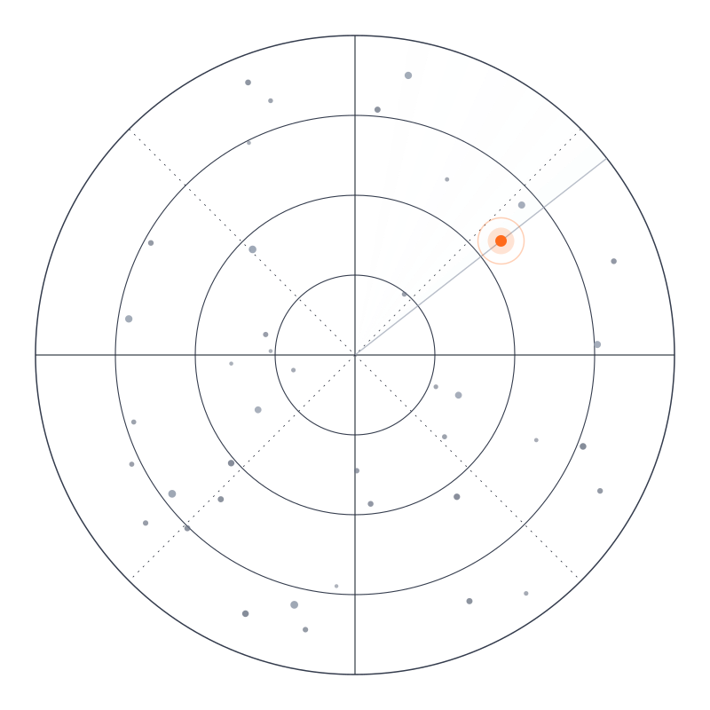
Toda receita tem um gargalo. Os dados dizem qual.
Num e-commerce de embalagens, a fatia que vira venda mais que dobrou.
Fatia de oportunidades que vira venda. Oito meses com o foco num gargalo só.
Três sinais de que a sua receita tem um gargalo.
O dono decide melhor com um número só.
Gargalo.
substantivo masculino
A etapa que segura todas as outras. Enquanto ela não anda, esforço nas outras etapas vira fila.
Sua empresa não tem falta de lead. Tem proposta parada.
Antes de comprar mais tráfego, olhe onde a receita trava.
IA sem processo só automatiza o caos mais rápido.
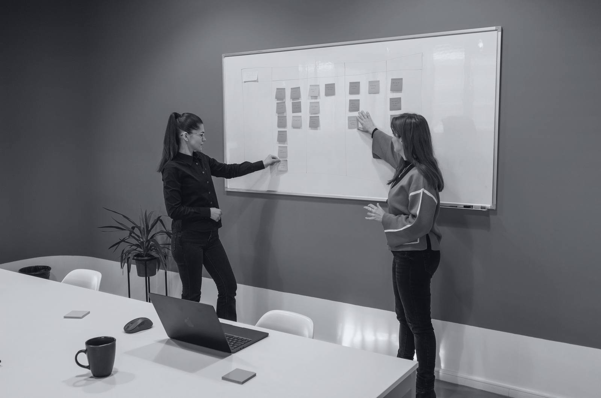
Onde o funil vaza.
62% da receita em aberto está parada na proposta.
growai-avatar-1080.png.30.2 · A grade do feed
A grade é lida como uma página. Noite para a tese, dia para a prova e o conteúdo, gente de verdade entre elas. Nenhuma linha e nenhuma coluna tem três peças escuras seguidas. O número de cada post fica fora dele, na legenda.
Toda receita tem um gargalo. Os dados dizem qual.
Num e-commerce de embalagens, a fatia que vira venda mais que dobrou.
Fatia de oportunidades que vira venda. Oito meses com o foco num gargalo só.
Três sinais de que a sua receita tem um gargalo.
O dono decide melhor com um número só.
Gargalo.
substantivo masculino
A etapa que segura todas as outras. Enquanto ela não anda, esforço nas outras etapas vira fila.
Sua empresa não tem falta de lead. Tem proposta parada.
Antes de comprar mais tráfego, olhe onde a receita trava.
IA sem processo só automatiza o caos mais rápido.
Onde o funil vaza.
62% da receita em aberto está parada na proposta.
O post que apresenta a marca, fixado em primeiro. O laranja é o ponto do radar, por isso o título fica sem destaque.
A prova principal, do e-commerce de embalagens. Os outros casos de growai.com.br/casos entram do mesmo jeito. Número na cor da linha que gerou o resultado, com período e segmento.
Os três sinais, que terminam no Raio-X. A capa promete; as lâminas entregam uma ideia cada.
Um dono num momento de decisão. Foto de banco licenciada: o rótulo diz tese, nunca bastidor nem cliente.
Uma palavra do vocabulário por post. O ponto final é o foco.
Uma provocação que o dono reconhece. Uma frase, um destaque.
Frase do Rafael, com nome e papel, em tipografia pura. Frase a validar com ele antes de publicar.
Um quadro de cena, sem retrato posado. Título dentro do corte da grade.
Um gráfico que afirma. Número de exemplo marcado como exemplo, com fonte.
3 posts por semana
Uma tese, uma prova ou dado, um conteúdo. Fotos de gente e reels entram por cima. Ritmo sugerido, a validar com os números da conta.
Três fixados na primeira linha
A assinatura, a prova principal e o carrossel dos três sinais, que termina no Raio-X. Troque os dois últimos quando houver prova ou carrossel novo aprovado.
Nada a menos de 80 px da borda
A grade corta 34 px de cada lado do post. Com margem de 80 px, título, logo e número nunca encostam no corte.
30.3 · Tese, prova e conteúdo
A tese provoca, a prova sustenta, o conteúdo ensina. Cada tipo tem campo, estrutura e tamanho de letra fixos. As três peças abaixo não estão na grade: são a mesma regra com outro conteúdo, que é o que mantém o feed coerente com pessoas diferentes produzindo.
Mais tráfego não conserta proposta parada.
Se a venda trava depois da reunião, cada lead novo só aumenta a fila.
Uma afirmação que contraria o senso comum do mercado. O destaque em itálico laranja vai no trecho que vira a chave.
Oito meses, um gargalo só. A fatia que vira venda saiu de 4,7% para 10,3%.
A mesma prova principal pode ganhar outro desenho: aqui, o ponteiro do motor de formas, com a faixa do ganho e a agulha no resultado. Quando o desenho tem o ponto laranja, o título fica sem itálico.
Régua.
substantivo feminino
O jeito único de contar o funil. Sem ela, cada vendedor mede de um modo e ninguém sabe onde a venda trava.
Glossário, método, dado da semana ou carrossel. A palavra vira o título em tamanho de capa; a definição cabe em duas linhas.
30.4 · Carrossel
Cinco lâminas no dia. Uma linha só, desenhada de uma vez nas cinco, corre a 1.108 px do topo e prende o dedo. Cada sinal marca um ponto cinza e traz o próprio dado desenhado. A linha só acende em laranja na última lâmina, quando o gargalo ganha endereço.
Deslize para ver as cinco lâminas →
Três sinais de que a sua receita tem um gargalo.
5 dias
As propostas esperam mais de cinco dias por uma resposta.
Cada dia parado esfria a venda.
3 réguas
Cada vendedor conta o funil de um jeito.
Sem uma régua comum, ninguém sabe onde a venda trava.
Dia 30
Você descobre o resultado do mês no último dia.
Quando o número chega, a decisão já passou.
O gargalo tem endereço. Os dados dizem qual.
Faça o Raio-X do Negócio e veja onde a receita trava.
growai.com.br/raio-x
30.5 · Stories
Três usos: perguntar, mostrar o bastidor e levar ao Raio-X. Texto fora das faixas de 250 px no topo e 340 px na base, que a plataforma cobre com nome, barras e campo de resposta.
Onde a sua venda mais espera?
O agente separou as oportunidades paradas antes do café.
Perguntas sobre o negócio. Nenhuma sobre ferramenta. Um gargalo.
Você descobre qual parte do negócio está segurando as outras.
30.6 · Reels e destaques
O arquivo tem 1080 × 1920, mas a grade do perfil mostra só o miolo de 1080 × 1440. Título, logo e o centro da cena ficam dentro do retângulo. Os destaques usam o mesmo arquivo vertical, lido como um círculo.
Onde o funil vaza.
Onde o funil vaza.
Cinco destaques, sempre nesta ordem: Raio-X, Método, Provas, Agentes, Episódios. Ícones Lucide em traço de 1,75 px e 470 px de altura no arquivo, em #EEF1F5 sobre #0B0D12. O ponto laranja só no Raio-X.
30.7 · Faz e não faz
Os três pares abaixo são os que mais aparecem quando alguém de fora produz para a marca. As peças certas são novas: a mesma regra serve para qualquer assunto. Use como checagem antes de publicar.
Proposta sem resposta há cinco dias já esfriou.
Conte quantas estão assim hoje. Esse número diz mais do que o painel inteiro.
Uma frase, um destaque, sem botão desenhado. O próximo passo mora na legenda e na bio.
5 erros que travam suas vendas!
Lead frio, proposta parada, CRM bagunçado, time sem meta, follow-up esquecido, falta de dados, anúncio caro e dono sobrecarregado. Descubra como resolver tudo isso de uma vez com a nossa solução completa.
Título todo em laranja, oito problemas numa peça, dois botões, "solução completa" e ponto de exclamação.
O pedido sai no mesmo dia. A proposta, não.
Foto com o tratamento grade Noite, véu na base e texto no terço de baixo. Rótulo de tese, porque a foto é de banco.
O pedido sai no mesmo dia. A proposta, não.
A mesma foto, com o texto branco sobre a parte clara e sem véu. Ninguém lê.
A proposta espera nove dias por uma resposta.
Uma barra em foco, número de exemplo marcado como exemplo, fonte e período no rodapé.
10x
mais vendas garantidas em 30 dias.
"10x" e "garantido": promessa sem prova, vedada pela marca e barrada pelas plataformas de anúncio.
30.8 · Especificação
Medidas de referência da plataforma em outubro de 2026. Confira antes de uma campanha grande: o Instagram muda cortes sem aviso.
| Peça | Arquivo | Área segura | Campo | Modelo |
|---|---|---|---|---|
| Post de tese | 1080 × 1350 | margem de 80 px; a grade corta 34 px de cada lado | noite | assets/modelos/post-tese-1080x1350.png |
| Post de prova | 1080 × 1350 | margem de 80 px | dia | assets/modelos/post-prova-1080x1350.png |
| Post de conteúdo | 1080 × 1350 | margem de 80 px | dia 2 | assets/modelos/post-conteudo-1080x1350.png |
| Carrossel | 1080 × 1350 | de 5 a 10 lâminas; linha contínua a 1.108 px | dia | assets/modelos/carrossel-capa-1080x1350.png assets/modelos/carrossel-sinal-1080x1350.png |
| Story | 1080 × 1920 | 250 px no topo, 340 px na base | noite, dia ou foto | assets/modelos/story-1080x1920.png |
| Capa de reels | 1080 × 1920 | miolo 1080 × 1440 (grade) e 340 px na base | foto com véu | assets/modelos/capa-reels-1080x1920.png |
| Capa de destaque | 1080 × 1920 | círculo de 1080 px no centro | noite | assets/modelos/destaque-1080x1920.png |
| Avatar | 1080 × 1080 | círculo; o "g" ocupa 45% da largura | noite | assets/growai-avatar-1080.png |
Deslize a tabela para o lado →
A primeira linha repete a frase da peça. Depois, até cinco linhas curtas, um passo e no máximo três hashtags no fim. Sem emoji e sem marcar quem não autorizou. "Link na bio" aparece uma vez só, na última linha antes das hashtags, nunca no meio do texto nem dentro da peça.
# Bio (128 de 150 caracteres) O sistema de foco da sua empresa. Conectamos os dados do seu negócio e mostramos onde a receita trava. Faça o Raio-X do Negócio ↓ # Link growai.com.br/raio-x # Legenda · tese Sua empresa não tem falta de lead. Tem proposta parada. Antes de comprar mais tráfego, olhe quanto tempo uma proposta espera por resposta. Se passa de cinco dias, o gargalo não está no anúncio. Faça o Raio-X do Negócio e veja qual parte segura as outras. O link está na bio. #gargalo #receita #gestão
Pendências deste capítulo
LinkedIn · página, fundador, post, documento, artigo
É onde o dono de empresa lê com calma, no computador, entre uma decisão e outra. A página da GrowAI assina e guarda a prova. O perfil do Rafael conversa, de igual para igual, sobre o negócio de quem lê.
31.1 · Duas capas
As duas capas dizem a mesma assinatura em formatos diferentes. A da página usa o radar, porque fala pela empresa. A do Rafael usa a cidade à noite, porque fala de alguém que trabalha nela.
Toda receita tem um gargalo. Os dados dizem qual.
O sistema de foco da sua empresa. Consultoria de RevOps com IA para donos que querem crescer com clareza.
Consultoria de gestão · Brasil · 1.240 seguidores (exemplo)
Deslize →
Fundador da GrowAI · O sistema de foco da sua empresa · Toda receita tem um gargalo. Os dados dizem qual.
Brasil · growai.com.br
Deslize →
No computador, a foto de perfil cobre o canto de baixo à esquerda. No celular, a capa aparece menor e com as bordas cortadas.
Deslize →
39631.2 · Foto de perfil
No LinkedIn a foto aparece com 48 px ao lado de cada comentário. Nesse tamanho, só um rosto bem recortado, com luz lateral e fundo escuro, continua reconhecível.
31.3 · Post com imagem
O feed corta o texto depois de cerca de 210 caracteres. O que vem antes do "ver mais" decide se o dono continua. A imagem usa o mesmo formato 4:5 e os mesmos modelos do Instagram.
Todo dono que chega aqui acha que precisa de mais lead.
Quase nunca é isso. Olhe onde o funil afina. …ver mais
Num funil de exemplo, a venda trava entre a reunião e a proposta.
Todo dono que chega aqui acha que precisa de mais lead. Quase nunca é isso. Olhe onde o funil afina. No funil do exemplo da imagem, 96 reuniões viram só 31 propostas. O vazamento maior não está no anúncio. Está entre a conversa e o papel na mão do cliente. Um gargalo por vez. O resto espera. Qual etapa segura a sua receita hoje? #gargalo #receita #gestão
31.4 · Carrossel em documento
No LinkedIn o carrossel é um PDF. A GrowAI usa o formato para ensinar o método: capa na noite, um passo por página no dia, a barra do caminho embaixo. No máximo um laranja por página: o itálico da capa, o ponto do Focar e o link do fecho.
Como achar o gargalo em cinco passos.
Rafael Nasch · fundador da GrowAI
01
Medir.
Junte os dados do negócio numa tela só: marketing, vendas, atendimento e financeiro.
02
Diagnosticar.
Leia o funil inteiro e encontre a etapa que segura as outras.
03
Focar.
Escolha um gargalo. Só um. O resto espera.
04
Destravar.
Mude o processo antes de automatizar. Depois, coloque agentes no trabalho repetitivo.
05
Escalar.
Com o gargalo destravado, cresça o que já funciona. E volte a medir.
Qual é o gargalo da sua empresa?
Faça o Raio-X do Negócio e veja onde a receita trava.
growai.com.br/raio-x
Deslize para ver as sete páginas →
31.5 · Artigo
O texto do artigo sai na fonte da plataforma, e isso não se controla. Por isso a capa carrega a tipografia da casa e o texto carrega a voz: título que afirma, frases curtas, um dado com fonte.
Mais lead não resolve proposta parada.
Mais lead não resolve proposta parada.
Todo dono que chega aqui acha que precisa de mais lead. Quase nunca é isso. A receita trava num ponto específico, e esse ponto aparece quando os dados do negócio são lidos juntos.
O primeiro passo não é comprar ferramenta. É medir quanto tempo uma proposta espera por resposta.
31.6 · Faz, não faz e medidas
Os dois erros que mais aparecem no LinkedIn são de lugar e de excesso: texto atrás da foto de perfil e página de documento com o método inteiro.
Deslize →
A peça final, limpa: texto dentro da área de 568 a 1.460 px, com respiro, longe da foto de perfil.
Deslize →
Texto colado na esquerda: a foto de perfil, marcada pela guia, cobre o começo da frase.
03
Focar.
Escolha um gargalo. Só um. O resto espera.
Um passo por página, com número, nome e uma frase.
Nossa metodologia completa de ponta a ponta
• Dados: integramos e otimizamos tudo com tecnologia de ponta.
• Diagnóstico: integramos e otimizamos tudo com tecnologia de ponta.
• Foco: integramos e otimizamos tudo com tecnologia de ponta.
• Processo: integramos e otimizamos tudo com tecnologia de ponta.
• Automação: integramos e otimizamos tudo com tecnologia de ponta.
• Agentes: integramos e otimizamos tudo com tecnologia de ponta.
• Escala: integramos e otimizamos tudo com tecnologia de ponta.
• Metas: integramos e otimizamos tudo com tecnologia de ponta.
Oito itens, três cores de linha no mesmo título e "tecnologia de ponta". É a página que ninguém salva.
| Peça | Arquivo | Regra | Modelo |
|---|---|---|---|
| Logo da página | 400 × 400 | o "g" sobre a noite | assets/growai-avatar-1080.png |
| Capa da página | 1128 × 191 | texto a partir de 250 px; radar à direita | assets/modelos/linkedin-pagina-1128x191.png |
| Capa do fundador | 1584 × 396 | texto entre 568 e 1.460 px, 60 px de folga em cima e embaixo | assets/modelos/linkedin-banner-1584x396.png |
| Foto do fundador | 400 × 400 | rosto em 60% do círculo, fundo escuro | assets/fotos/rafael-nasch.jpg |
| Imagem de post | 1080 × 1350 | os mesmos modelos do Instagram | assets/modelos/post-tese-1080x1350.png assets/modelos/post-prova-1080x1350.png assets/modelos/post-conteudo-1080x1350.png |
| Documento (carrossel) | PDF · 1080 × 1350 | 7 a 12 páginas, uma ideia por página | assets/modelos/linkedin-documento-modelo.pdf |
| Capa de artigo | 1920 × 1080 | título na metade esquerda; rótulo com o assunto, sem nome | assets/modelos/linkedin-artigo-1920x1080.png |
Deslize a tabela para o lado →
Medidas de referência da plataforma em outubro de 2026. O slogan da página tem até 120 caracteres; o título do perfil, até 220. O nome no texto é sempre GrowAI.
# Slogan da página (104 de 120 caracteres) O sistema de foco da sua empresa. Consultoria de RevOps com IA para donos que querem crescer com clareza. # Sobre da página Toda receita tem um gargalo. Os dados dizem qual. A GrowAI conecta os dados do seu negócio, mostra onde a receita trava e ajuda o time a destravar um gargalo por vez. Comece pelo Raio-X do Negócio: growai.com.br/raio-x # Título do perfil do fundador Fundador da GrowAI · O sistema de foco da sua empresa · Toda receita tem um gargalo. Os dados dizem qual.
No vídeo, a marca tem três segundos para ser reconhecida e uma miniatura para ser escolhida. Por isso o vídeo da GrowAI abre curto, fala com o dono olhando para ele e funciona até sem som.
32.1 · Thumbnail
A miniatura não resume o vídeo. Ela promete uma resposta. Cinco palavras no máximo, uma pessoa de verdade ou um número de verdade, e o laranja em um lugar só.
Episódio 12 · exemploOnde a receita trava.
Rafael ou o convidado, olhar firme. Ocupa a metade direita, cortado no ombro.
Newsreader 400, de 100 a 130 px. Precisa ser lida com o polegar passando.
A palavra que é o assunto. Nada mais em laranja na peça.
O YouTube cobre o canto inferior direito com a duração. Nada importante ali.
No alto à esquerda, com o número do episódio em Plex Mono.
Rosto para conversa, número para prova, radar para tese. Lado a lado na página do canal, devem parecer da mesma casa. Em cada uma, um laranja só: o itálico, o número ou o ponto aceso do radar.
Episódio 12Onde a receita trava.
10,3%
das oportunidades viram venda. Eram 4,7%.
IA sem processo automatiza o caos.
Antes de publicar, olhe a miniatura em 168 px, o tamanho da lista ao lado do vídeo. Se a frase não se lê ali, ela tem palavra demais.
Onde a receita trava.
Os três pontos que mais seguram uma empresa de serviço e como saber qual é o seu
Qual parte segura o resto?
Escreva a pergunta que o dono já se faz ("onde a receita trava") e deixe a resposta para o vídeo. O título do vídeo completa a miniatura, não repete.
Caixa alta amarela, seta vermelha, "10x" e "garantido". É a linguagem que a GrowAI recusa, e o YouTube também pode recusar como enganosa.
Modelo pronto em assets/modelos/youtube-thumb-1280x720.png (com e sem texto).
# arquivo: canal_tipo_episodio_versao growai_yt_conversa_ep12_v1.jpg growai_yt_prova_ep13_v1.jpg growai_yt_tese_ep14_v2.jpg # título do vídeo (até 70 caracteres) Onde a receita trava: os três pontos que mais seguram uma empresa de serviço # a miniatura pergunta, o título responde, # a descrição abre com a assinatura: Toda receita tem um gargalo. Os dados dizem qual.
32.2 · Banner do canal
O mesmo arquivo é cortado de três jeitos: inteiro na TV, uma faixa no computador e só o miolo no celular. Tudo o que importa vive no miolo de 1546 × 423.
Toda receita tem um gargalo.
Os dados dizem qual.
Toda receita tem um gargalo.
Os dados dizem qual.
Toda receita tem um gargalo.
Os dados dizem qual.
A foto de fundo vem do banco aprovado, em monocromático noite (assets/fotos/textura-cidade-noite-duo.jpg). Fora do miolo, só textura: nunca texto, rosto ou logo.
32.3 · Vinheta e encerramento
A vinheta é o logo em movimento do capítulo 11, em três segundos. Ela abre o vídeo depois do gancho, nunca antes: o primeiro segundo é sempre de conteúdo.
Os últimos 10 segundos do vídeo são uma tela de fim. Um convite, dois vídeos e a inscrição. O convite é sempre o Raio-X do Negócio.
Descubra onde a sua receita trava.
Raio-X do Negócio. Link na descrição.
32.4 · Tarja e legenda
O dono assiste no carro, na fila, entre duas reuniões. Por isso toda fala sai legendada, no vídeo longo e no vertical. A tarja diz quem fala uma vez, nos primeiros cinco segundos. Depois, só a legenda.
Em Shorts, Reels e status, a legenda sobe para o terço de baixo da área segura e fica maior. A palavra que está sendo dita aparece em laranja. É o único laranja do quadro.
| Item | Horizontal 16:9 | Vertical 9:16 |
|---|---|---|
| Fonte | Hanken Grotesk 600 | Hanken Grotesk 700 |
| Tamanho no arquivo | 50 px em 1080 | 72 px em 1080 |
| Por linha | até 32 caracteres | até 3 palavras |
| Linhas | até 2 | até 2 |
| Posição | base, a 96 px da borda | a 560 px da base |
| Fundo | caixa Noite 82% | sombra suave, sem caixa |
| Laranja | nunca | só a palavra falada |
Deslize a tabela para o lado →
Três propostas paradas há nove dias.
Toda publicação sobe com o arquivo .srt revisado, mesmo quando a legenda está gravada na imagem. É o que o YouTube indexa e o que um leitor de tela lê.
1 00:00:03,200 --> 00:00:06,100 O gargalo raramente está onde o dono acha que está. 2 00:00:06,300 --> 00:00:09,000 Os dados dizem qual. /* legenda gravada (editor ou CSS de player) */ .legenda{font:600 50px/1.3 "Hanken Grotesk",Arial; color:#FFFFFF;background:rgba(11,13,18,.82)}
O WhatsApp é onde o dono já está. A GrowAI entra ali como entra uma pessoa: com nome, com contexto e com um próximo passo. Nunca como lista de transmissão.
33.1 · Perfil comercial
Antes de responder, o dono toca no nome e lê quem somos. O perfil diz a categoria, o caminho e o horário. Os textos abaixo saem prontos para colar.
Conectamos os dados do seu negócio e mostramos onde a receita trava. Comece pelo Raio-X do Negócio.
| Campo | O que vai | Limite |
|---|---|---|
| Nome de exibição | GrowAI. Nunca "Growai", "Grow AI" ou nome de pessoa. | — |
| Foto | growai-avatar-640.png: o "g" sobre a noite, centrado no círculo. | 640 × 640 |
| Categoria | Consultoria empresarial | 1 |
| Recado | O sistema de foco da sua empresa. | 139 caract. |
| Descrição | A categoria, o que fazemos e a porta de entrada, em três frases. | 512 caract. |
| Sites | growai.com.br e growai.com.br/raio-x, nessa ordem. | 2 |
Deslize a tabela para o lado →
# recado O sistema de foco da sua empresa. # descrição Conectamos os dados do seu negócio e mostramos onde a receita trava. Comece pelo Raio-X do Negócio. # saudação (primeira mensagem do contato) Oi. Aqui é a GrowAI. Se você já fez o Raio-X do Negócio, me diz o nome da empresa que eu busco o seu resultado. Se ainda não fez, ele leva dois minutos: growai.com.br/raio-x # ausência (fora do horário) Recebemos a sua mensagem. A gente responde no próximo horário comercial, a partir das 9h.
33.2 · Catálogo
O catálogo mostra a esteira na ordem aprender, organizar, escalar. A capa do item usa a cor base da linha e o logo em uma cor. Preço não vai no catálogo: ele vem na proposta, depois do diagnóstico.
Raio-X do Negócio
Qual parte segura as outras?
Diagnóstico do Gargalo
O gargalo provado com os seus dados.
Consultoria RevOps AI Native
Um ciclo, uma frente, uma meta.
Agentes
O repetitivo com o agente. A decisão com o seu time.
GTM Engineering
A máquina de demanda operada por agentes.
Raio-X do Negócio Descubra qual parte do negócio segura as outras. growai.com.br/raio-x Diagnóstico do Gargalo O gargalo provado com os seus dados e a primeira frente. Consultoria RevOps AI Native Marketing, vendas e pós-venda funcionando como um só time. Agentes Agentes fazem o repetitivo e chamam a pessoa certa. GTM Engineering A máquina de demanda operada por agentes.
33.3 · Mensagens
Toda mensagem da GrowAI tem a mesma forma, seja de pessoa ou de agente: o nome de quem lê, o fato que importa para ele e uma única ação. Três momentos mostram o padrão.
 Seu Raio-X do Negóciogrowai.com.brO ponto que mais segura o resto hoje é a decisão sem número. O resultado completo está aqui: growai.com.br/r/exemplo09:02
Seu Raio-X do Negóciogrowai.com.brO ponto que mais segura o resto hoje é a decisão sem número. O resultado completo está aqui: growai.com.br/r/exemplo09:02Valem para pessoa, para agente e para modelo aprovado pela Meta.
OLÁ!!! Tudo bem??? Temos uma SUPER CONDIÇÃO de consultoria gratuita para multiplicar suas vendas em 10x. Responda SIM para garantir sua vaga!!!
Caixa alta, promessa de "10x", "gratuita" e pressão de vaga. É disparo, não conversa. E é o tipo de mensagem que leva a conta a ser bloqueada.
Oi, Marina. No Raio-X, a decisão sem número apareceu como o ponto que segura o resto. No Diagnóstico a gente prova isso com os seus dados. Quer ver como funciona?
Nome, o fato que veio do Raio-X, a prova e uma pergunta. A pessoa sabe por que está recebendo e o que fazer.
Mensagem que a GrowAI inicia fora da janela de 24 horas precisa de modelo aprovado. Variáveis entre chaves duplas.
Nome em minúsculas, linha e momento: assim o time acha o modelo certo sem abrir um por um.
# corpo (utilidade) Oi, {{1}}. O Raio-X do Negócio da {{2}} ficou pronto. O ponto que mais segura o resto hoje é *{{3}}*. O resultado completo está aqui: growai.com.br/r/{{4}} # botão de resposta rápida Quero entender como funciona # exemplo para a aprovação {{1}} = Marina {{2}} = Empresa Exemplo {{3}} = a decisão sem número {{4}} = exemplo
33.4 · Status
O status é visto por quem já salvou o número: clientes e quem fez o Raio-X. Uma peça por dia útil, no máximo. Tese, prova ou bastidor, na mesma família do Instagram, com o texto dentro da área segura.
IA sem processo só automatiza o caos mais rápido.
10,3%
Num e-commerce de embalagens, a fatia de oportunidades que vira venda passou de 4,7% para 10,3% em oito meses.
Os números saem do CRM, não da memória.
A barra de progresso, o nome e o "Responder" cobrem o topo e a base da peça: o texto mora no miolo (as zonas estão medidas em 34.3). O link para o Raio-X vai na resposta, nunca escrito na imagem.
O anúncio é a peça mais vista e a mais vigiada. A plataforma lê o anúncio e a página para onde ele leva. A GrowAI anuncia o que o dado mostra, com o segmento no lugar do nome, e nada além disso. As frases riscadas ao fundo nunca saem com o nosso nome.
34.1 · As regras
Estas regras valem para o texto do anúncio, para a imagem e para a página de destino. Elas protegem a marca e a conta de anúncios ao mesmo tempo: promessa de ganho garantido ou de renda fácil é motivo de reprovação nas plataformas.
| Caso | Regra | Status |
|---|---|---|
| Resultado de cliente | Número medido, com período e segmento: "num e-commerce de embalagens, de 4,7% para 10,3% em oito meses". Nome só com autorização escrita. | permitido |
| "10x", "garantido", "resultado garantido" | Promessa sem prova. Fica fora até existir um caso medido que mostre isso. | vedado |
| Renda, faturamento, "fature R$ X" | Nunca no anúncio. Na página, só como faixa real, com contexto, período e o aviso de que o resultado depende do negócio. | vedado no anúncio |
| Antes e depois de faturamento | Nunca em título de anúncio. Na página, numa seção interna, com contexto. | só com contexto |
| Presumir a situação do leitor | Nada de "sua empresa está quebrando?" ou "cansado de perder dinheiro?". Pergunte sobre o negócio, não sobre a vida da pessoa. | vedado |
| Urgência e escassez | "Últimas vagas" só quando for verdade e der para provar. Contagem regressiva falsa, nunca. | só com fato |
| "Fácil", "sem esforço", "no automático" | A GrowAI vende método com trabalho real. Fale de foco, de processo e de prazo. | vedado |
| Dado de cliente final, tela de CRM | Nome, telefone e e-mail sempre apagados (lei de proteção de dados, a LGPD). | vedado |
| Travessão em título | Nenhum. No texto, no máximo um. Use ponto ou dois pontos. | vedado |
Deslize a tabela para o lado →
Quando a frase que vem à cabeça é a da esquerda, a da direita é a que vai para o ar.
Descubra qual parte do negócio segura as outras.
Num e-commerce de embalagens, de 4,7% para 10,3% em oito meses.
Faça o Raio-X do Negócio e veja onde a receita trava.
Onde a sua receita trava?
Processo antes de automação. Depois, agentes.
O laranja marca o foco: o ponto do radar, a barra do gargalo ou o itálico do título, um só. O botão é o único laranja que convive com ele, e quando há botão o itálico fica na cor do texto. Vale para anúncio, e-mail, status e vídeo.
O ponto de foco do radar é o laranja. O itálico do título fica na cor do texto (#EEF1F5 na noite).
E-mail e display: o botão é o laranja. Itálico na cor do texto, rótulo em cinza de apoio, filete do topo neutro ou na cor da linha.
Post, story com foto, thumbnail: o itálico do título é o único laranja da peça.
O "g" do logo não conta: ele é a marca, não um destaque.
34.2 · Meta: feed
No feed do Instagram e do Facebook a GrowAI testa três ângulos: a tese, a prova e a pergunta com uma pessoa real. O botão é sempre o mesmo destino: o Raio-X do Negócio. Formato 4:5, que ocupa mais tela no celular.
Toda receita tem um gargalo. Os dados dizem qual.
growai O problema raramente é falta de lead. É onde ele trava. Faça o Raio-X do Negócio e descubra onde. … mais
10,3%
Num e-commerce de embalagens, a fatia de oportunidades que vira venda passou de 4,7% para 10,3% em oito meses.
growai Não foi mais lead. Foi o ponto onde as oportunidades paravam. O resultado depende de cada negócio; o primeiro passo é saber onde o seu trava. … mais
Qual parte do negócio segura as outras?
growai Perguntas sobre o seu negócio, nenhuma sobre ferramenta. No fim, você sabe qual parte segura o resto. … mais
O texto principal mostra cerca de 125 caracteres antes do "mais". A frase que importa vai no começo.
# texto principal Não foi mais lead. Foi o ponto onde as oportunidades paravam. O resultado depende de cada negócio; o primeiro passo é saber onde o seu trava. # título (até 40) Descubra onde a sua receita trava # descrição Raio-X do Negócio · gratuito
34.3 · Meta: stories e reels
Em 9:16, a interface cobre o topo e a base. Texto, logo e número moram no miolo. O primeiro segundo já diz o assunto, porque não existe segundo slide.
Onde a sua receita trava?
Qual parte segura as outras?
Onde a sua receita trava?
34.4 · LinkedIn
No LinkedIn o dono lê com mais calma e quer saber quem está falando. O anúncio pode ter mais texto e pode ser um post do Rafael impulsionado. A imagem segue a mesma família do feed.
A maior parte das empresas não tem falta de lead. Tem um ponto onde a receita para. O Raio-X do Negócio mostra qual é. … ver mais
Toda receita tem um gargalo. Os dados dizem qual.
IA sem processo só automatiza o caos mais rápido. Antes de qualquer agente, a gente pergunta onde a receita trava. Quase nunca é onde o dono acha. … ver mais
Processo antes de automação.
34.5 · Google display
Os banners abaixo estão no tamanho do arquivo, pixel por pixel. No celular, a faixa de 728 rola para o lado em vez de encolher. Num espaço deste tamanho cabem três coisas: o logo, uma frase e um botão.
Toda receita tem um gargalo. Os dados dizem qual.
Fazer o Raio-XToda receita tem um gargalo. Os dados dizem qual.
Fazer o Raio-X do Negócio10,3%
das oportunidades viram venda num e-commerce de embalagens. Eram 4,7%, oito meses antes.
Toda receita tem um gargalo. Os dados dizem qual.
Fazer o Raio-X
Onde a sua receita trava?
DescobrirAbaixo de 80 px de largura para o logo, use só o símbolo (capítulo 08). Banner de fundo claro leva borda de 1 px, para não se misturar com a página onde aparece.
# títulos curtos (até 30) Onde a sua receita trava? Descubra o gargalo do negócio Raio-X do Negócio gratuito # título longo (até 90) Toda receita tem um gargalo. Os dados dizem qual. # descrições (até 90) Perguntas sobre o seu negócio. No fim, você sabe qual parte segura as outras. # nome da empresa GrowAI
34.6 · Antes de subir
Quem sobe o anúncio, pessoa ou agente, responde as nove. Um "não" em qualquer uma e a peça volta.
Vale para a peça e para a página de destino, que a plataforma também lê.
Antes: R$ 80 mil/mês
Depois: R$ 400 mil por mês
Resultado garantido ou seu dinheiro de volta
Antes e depois de faturamento no título, "garantido" e uma promessa de renda. Reprova na plataforma e contradiz a marca.
10,3%
das oportunidades viram venda num e-commerce de embalagens. Eram 4,7%, oito meses antes.
A métrica que mudou, o segmento, o período e a fonte. A conta de faturamento fica para a página, com contexto.
O mesmo padrão em todas as plataformas. É assim que o CRM conta de onde veio cada oportunidade.
# campanha: canal_linha_oferta_aaaamm meta_edu_raiox_202610 linkedin_edu_raiox_202610 google_edu_raiox_202610 # anúncio: angulo-formato-versao tese-radar-v1 prova-103-v1 pergunta-foto-v2 # origem e meio por plataforma (medium em inglês: # o Google Analytics 4 só agrupa canais com estes valores) meta utm_source=meta utm_medium=paid_social linkedin utm_source=linkedin utm_medium=paid_social google utm_source=google utm_medium=display e-mail utm_source=newsletter utm_medium=email # link de destino https://growai.com.br/raio-x?utm_source=meta&utm_medium=paid_social&utm_campaign=meta_edu_raiox_202610&utm_content=prova-103-v1
O meio (utm_medium) fica em inglês porque o Google Analytics 4 só reconhece esses valores. Com "pago", a visita cai em "sem canal" e some do relatório.
O e-mail chega na hora do café, entre outros trinta. Para ser aberto, ele vem de uma pessoa. Para ser lido, diz uma coisa só. Para valer a pena, termina num único convite.
35.1 · Caixa de entrada
Remetente, assunto e pré-cabeçalho. É tudo o que o dono vê antes de abrir. Quem manda é uma pessoa, o assunto afirma e o pré-cabeçalho completa a ideia, sem repetir.
Remetentes genéricos de exemplo. O ponto laranja é o de "não lida": o único laranja da tela é o nosso.
Medidas para caber no celular sem corte.
Rafael Nasch · GrowAINewsletter e conteúdo vêm do Rafael. Aviso e confirmação vêm de "GrowAI". Nunca "noreply".
Quase nunca falta leadAté 45 caracteres. Afirma uma ideia. Sem caixa alta, sem emoji, sem "Re:" falso, sem exclamação.
A maior parte das oportunidades para antes da proposta.De 40 a 90 caracteres. Traz o porquê, ou um número com fonte. Número ilustrativo fica dentro do e-mail, marcado como exemplo.
URGENTE: Descubra como vender 10x mais com IA!!!
IA sem processo automatiza o caos
Newsletter GrowAI #12 de outubro
A proposta parada custa mais que o lead perdido
Última chance: consultoria gratuita
Perguntas sobre o seu negócio
35.2 · A newsletter
A newsletter semanal tem sempre a mesma ordem: a ideia, a explicação curta, o número da semana e o convite para o Raio-X. Nome provisório: O Gargalo da Semana (a validar). Os números deste modelo são de exemplo.
O Gargalo da Semana
Quando o dono diz que precisa de mais lead, a gente pede para olhar o CRM antes. Na maior parte das vezes, as oportunidades já estão lá. Elas param depois da primeira conversa, esperando uma proposta que não sai.
Mais anúncio só joga mais gente nessa mesma fila. O gargalo não está na entrada. Está no meio.
Quer saber se é o seu caso? O Raio-X do Negócio mostra qual parte segura as outras.
Fazer o Raio-X do NegócioFilete neutro de 4 px, logo oficial com 31 px de altura (o mínimo de 80 px de largura), número da edição em Plex Mono.
Rótulo em cinza de apoio e um título em Newsreader de 36 px. O itálico marca a virada da frase, na cor do texto: o laranja deste e-mail é o botão.
Uma foto do banco aprovado em 2:1 e até três parágrafos curtos, em 17 px. Sem lista de links, sem "notícias da semana".
O número da semana em Plex Mono, com a fonte ou a marca de exemplo. Depois, um só botão laranja: o Raio-X.
A foto e o nome do Rafael. O e-mail tem rosto, e o remetente bate com a assinatura.
Por que a pessoa recebe e como sair em um clique, como pede a lei de proteção de dados (LGPD).
Um laranja por e-mail. Todo e-mail tem botão, então o botão é o laranja (regra b de 34.1.2). O itálico do título fica na cor do texto, o rótulo em cinza de apoio e o filete do topo é neutro ou da cor da linha. Laranja em mais de um lugar divide o olhar entre o título e a ação.
35.3 · A família de e-mails
Além da newsletter, cada linha manda os próprios e-mails. A estrutura é a mesma; mudam o filete do topo e o rótulo, na cor da linha. Logo e botão continuam GrowAI, e o botão segue como o único laranja.
O ponto que mais segura o resto da Empresa Exemplo hoje é a decisão sem número.
Ver o resultado completoQuinta, 9 de outubro, às 10h (exemplo). Uma hora, por vídeo, com o Rafael.
Para chegar com o primeiro número pronto, deixe à mão o relatório de vendas dos últimos 90 dias.
Adicionar à agendaOs agentes responderam 214 pedidos de status e prepararam 38 cotações para o time revisar (exemplo).
35.4 · Assinatura
A assinatura é igual para todo o time. Nada de frase motivacional, de ícone de rede social em fila ou de banner. A categoria lembra o que a GrowAI é; o link leva ao site.
Marina, o seu Raio-X mostrou que a decisão sem número segura o resto do negócio. No Diagnóstico do Gargalo a gente prova isso com os seus dados e define a primeira frente.
Oi, Lucas. Segue a lista das três oportunidades sem contato, na ordem de valor. A primeira mensagem de cada uma já está pronta para você revisar.
Feita com tabela e estilo no próprio elemento, que é o que todo programa de e-mail entende. Fontes seguras: Georgia no nome, Arial no resto. O logo vem do site da GrowAI, em PNG, para a assinatura não depender de outro endereço.
<table cellpadding="0" cellspacing="0" role="presentation"><tr> <td style="width:3px;background:#FF6A1A"></td> <td style="padding-left:14px;font:13px/1.4 Arial,sans-serif;color:#4A525E"> <span style="font:18px Georgia,serif;color:#0C0F14">Rafael Nasch</span><br> Fundador · GrowAI<br> <span style="font-size:12px">O sistema de foco da sua empresa · <a href="https://growai.com.br" style="color:#0C0F14">growai.com.br</a></span><br> <img src="https://growai.com.br/marca/growai-logo-oficial-web.png" alt="GrowAI" height="31" style="margin-top:12px"> </td> </tr></table>
35.5 · Construção
Programa de e-mail não é navegador. Cada um entende um pedaço do HTML. O modelo da GrowAI é desenhado para ficar certo no pior caso e melhor onde der.
<table role="presentation" width="100%" style="background:#F6F7F8"><tr><td align="center"> <table role="presentation" width="600" style="max-width:600px;width:100%;background:#FFFFFF"> <tr><td style="height:4px;background:#0C0F14"></td></tr> <tr><td style="padding:32px 40px 0;font:400 36px/1.08 Newsreader,Georgia,serif;color:#0C0F14"> Quase nunca falta lead. </td></tr> <tr><td style="padding:20px 40px 0;font:17px/1.6 'Hanken Grotesk',Arial,sans-serif;color:#272D36"> Texto… </td></tr> <tr><td style="padding:28px 40px"> <a href="https://growai.com.br/raio-x?utm_source=newsletter&utm_medium=email&utm_campaign=gargalo_n12" style="display:inline-block;background:#FF6A1A;color:#170A02; font:600 16px/1 Arial,sans-serif;padding:16px 24px;border-radius:8px; text-decoration:none">Fazer o Raio-X do Negócio</a> </td></tr> </table> </td></tr></table>
Em 375 px reais, a largura de um celular. Antes de enviar, teste nos três estados: se a ideia e o botão chegam no pior caso, o e-mail está certo.
Quase nunca falta lead. Falta resposta.
Quando o dono diz que precisa de mais lead, a gente pede para olhar o CRM antes. As oportunidades já estão lá, paradas depois da primeira conversa.
Fazer o Raio-X do NegócioQuase nunca falta lead. Falta resposta.
Quando o dono diz que precisa de mais lead, a gente pede para olhar o CRM antes. As oportunidades já estão lá, paradas depois da primeira conversa.
Fazer o Raio-X do NegócioQuase nunca falta lead. Falta resposta.
Quando o dono diz que precisa de mais lead, a gente pede para olhar o CRM antes. As oportunidades já estão lá, paradas depois da primeira conversa.
Fazer o Raio-X do NegócioO e-mail inteiro numa imagem. Some quando a imagem está bloqueada (compare com o estado 2 acima), não se lê com leitor de tela e cai mais na caixa de promoções.
GrowAI Strategy · consultoria de RevOps com IA
Diagnóstico do Gargalo
Toda receita tem um gargalo. Os dados dizem qual.
A apresentação da GrowAI não exibe serviços. Ela leva o dono do número ao gargalo e do gargalo a um único próximo passo. Abre na noite, explica no dia, pede uma coisa só.
36.1 · O ritmo do deck
São dezesseis tipos de slide prontos em deck-template.html. A noite marca começo, virada de parte e fim. Todo o resto é dia, porque é leitura.
Noite · impacto e viradaDia · leitura e provaPalco 1440 × 900 · 16:10
GrowAI Strategy · consultoria de RevOps com IA
Diagnóstico do Gargalo
Toda receita tem um gargalo. Os dados dizem qual.
Os outros doze tipos
36.2 · Anatomia do slide
O dono aprende onde olhar no terceiro slide. Daí em diante, a atenção vai toda para o conteúdo. Por isso fólio, rótulo, título e rodapé nunca mudam de posição.
margem 96fólio y 44conteúdo y 132 a 796rodapé até y 856
36.3 · O roteiro da proposta
A proposta segue o método: a frente, a métrica, o retorno e o prazo. Oito momentos, nesta ordem. O terceiro é o centro de tudo; os outros existem para sustentá-lo.
Noite, radar em recorte, faixa na cor da linha vendida. Nenhum dado ainda.
CapaCom as palavras dele, sobre o problema. Ele se reconhece antes de ouvir qualquer proposta.
CitaçãoUm ponto só. O número grande, a etapa marcada em laranja no caminho do cliente.
Número · GráficoEm reais e em tempo. O que fica parado se nada mudar no próximo trimestre.
NúmeroUma frente, nunca um cardápio. Processo antes de automação.
AfirmaçãoPonto A, ponto B e a data. O ponteiro que vai mexer, com nome.
Linha do tempoCom o abatimento do Diagnóstico quando houver. Enquanto não houver preço aprovado, [investimento].
PropostaUma decisão e o único botão laranja da apresentação.
Próximo passoSem conversa gratuita no roteiro: a porta de entrada é o Raio-X do Negócio, e o primeiro passo pago é o Diagnóstico do Gargalo. Ninguém pula o diagnóstico para chegar ao núcleo ou aos Agentes.
36.4 · Um foco por slide
O laranja é o dedo que aponta. Se aponta para três lugares, não aponta para nenhum. O mesmo vale para o texto: o slide mostra, quem apresenta explica.
Um ponto de foco ao lado do número. Fonte no rodapé, etiqueta de exemplo. O título fica de fora: o número já é o título.
Itálico laranja, número laranja, ponto e botão no mesmo slide. Quatro focos, nenhuma fonte, e um botão antes da hora.
Uma frase, 84 px, que o dono consegue repetir para o sócio depois da reunião.
O parágrafo que o apresentador vai ler em voz alta. O detalhe mora nas notas (tecla P), não no slide.
36.5 · A cor da linha
Um atributo no <body> troca a cor de identificação do deck inteiro. O que é da marca-mãe não muda: o logo, o ponto do radar e o botão.
GrowAI · consultoria de RevOps com IA
Diagnóstico do Gargalo
Toda receita tem um gargalo. Os dados dizem qual.
GrowAI Educação · consultoria de RevOps com IA
Diagnóstico do Gargalo
Toda receita tem um gargalo. Os dados dizem qual.
GrowAI Strategy · consultoria de RevOps com IA
Diagnóstico do Gargalo
Toda receita tem um gargalo. Os dados dizem qual.
GrowAI Agentes · consultoria de RevOps com IA
Diagnóstico do Gargalo
Toda receita tem um gargalo. Os dados dizem qual.
36.6 · Foto e retrato
Dois slides levam fotografia. A cena abre uma parte com o inimigo visível; o retrato mostra quem conduz o trabalho. Fotos tratadas na grade Noite, de assets/fotos/.
Dono, time ou operação reais, olhando a tela ou conversando. Nunca pose, aperto de mão ou gráfico brilhante.
Só com nome, cargo, empresa e autorização por escrito. Sem autorização, fica o retrato de quem conduz.
Se a foto faltar, o slide cai para a noite com a grade de pontos. O texto continua legível.
36.7 · Especificação
O deck é um arquivo HTML. Cada slide é uma seção com classes fixas; para criar um slide novo, duplique o do mesmo tipo e mantenha as classes.
Palco de 1440 × 900 escalado para a janela. Setas navegam, P abre as notas, F põe em tela cheia, #6 abre o sexto slide. No celular, os slides empilham e a página rola.
<!-- a linha manda na cor de identificação --> <body data-linha="strategy"> <!-- educacao | strategy | agentes --> <section class="slide numero campo-dia" data-campo="dia"> <div class="s-folio"> <span class="linha-id">GrowAI Strategy</span><span>O dado</span> </div> <div class="numero-miolo"> <p class="numero-grande"><span>62%</span> <i class="ponto-foco" aria-hidden="true"></i></p> <div class="numero-lado"> <p class="s-rotulo">Receita em aberto</p> <p class="numero-desc">da receita em aberto está em propostas paradas há mais de 9 dias</p> <p><span class="s-exemplo">Número de exemplo</span></p> </div> </div> <div class="s-rodape"><span>Fonte: [CRM], [período]</span> <span class="s-num">06</span></div> <aside class="notas"><p>Diga o número e cale.</p></aside> </section>
Deslize o código para o lado →
Os modelos de Google Slides do GTM Forecast Kit mantêm o design próprio deles. Não redesenhe esses arquivos com este capítulo: ele vale para proposta comercial, palestra e conteúdo.
# arquivo único: fontes, imagens e motores embutidos python3 autocontido.py minha-proposta.html # sai em dist/minha-proposta.html
Relatório mensal · Empresa Exemplo04 · O que fazer agora
Uma frente para novembro.
O resto do funil está no ritmo. Mexer em tudo agora dilui o time. Por isso o ciclo tem uma frente só, com meta e data.
Toda proposta respondida em 48 horasO CRM avisa o vendedor no segundo dia sem retorno.
Revisão semanal das paradasToda segunda, 15 minutos, só as propostas acima de nove dias.
Um ponteiro no painelPropostas respondidas em 48 horas, lido toda semana.
Aprovar a regra das 48 horas a partir de 03/11 e rever o ponteiro em 30 dias.
Datas e números de exemplo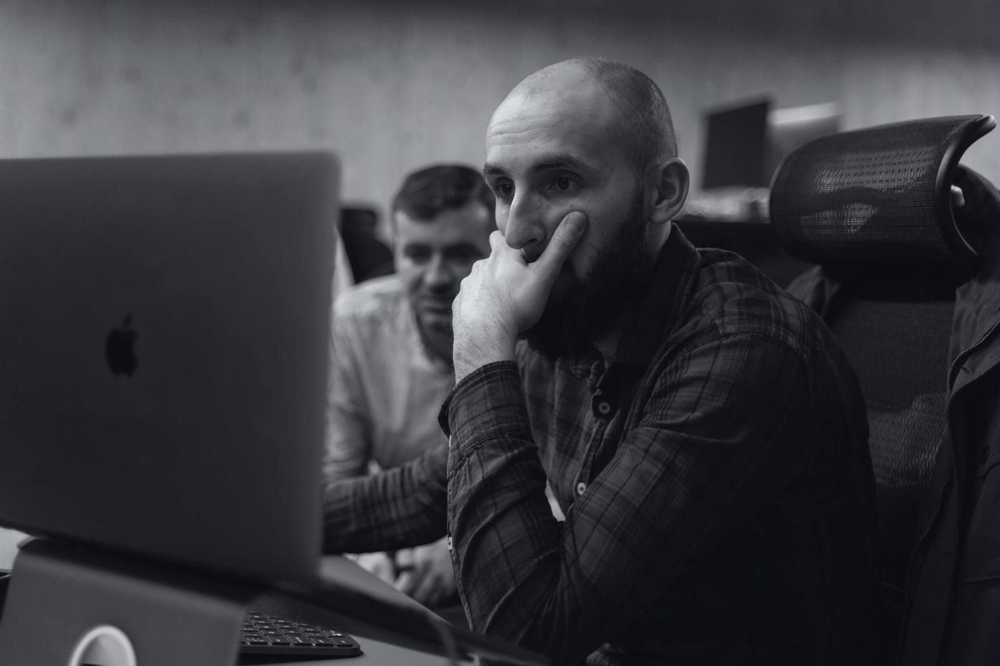
GrowAI Strategy · Relatório mensal
O gargalo de outubro.
Onde a receita travou no mês, o que os dados mostram e a frente única de novembro.
Relatório, diagnóstico e documento de consultoria são lidos com calma, às vezes impressos, às vezes repassados ao sócio. Por isso vivem no dia: uma coluna, tabela neutra e a restrição antes de qualquer número.
37.1 · A regra em três páginas
Todo documento da GrowAI segue a mesma ordem de leitura. Quem lê só a primeira página do miolo já sabe onde a receita trava.
GrowAI Strategy · Relatório mensal
O gargalo de outubro.
Onde a receita travou no mês, o que os dados mostram e a frente única de novembro.
Relatório mensal · Empresa Exemplo01 · Restrição ativa
A receita trava na proposta parada.
Propostas paradas há mais de nove dias. É ali que a receita do mês está presa.
Três de cada dez propostas não recebem retorno em nove dias. O número de paradas subiu pelo sexto mês seguido. O ciclo de novembro concentra o time em responder toda proposta em até 48 horas.
| Etapa | Set | Out | Meta |
|---|---|---|---|
| Propostas enviadas | 41 | 38 | 45 |
| Propostas paradas há mais de 9 dias | 12 | 17 | 5 |
| Propostas fechadas | 9 | 12 | 14 |
| Tempo médio de resposta | 6,1 d | 7,4 d | 2 d |
Fonte: CRM do cliente · dados de exemplo · 31/10/2026
Propostas paradas há mais de 9 dias, por mês
Fonte: CRM do cliente · dados de exemplo · maio a outubro de 2026
Relatório mensal · Empresa Exemplo04 · O que fazer agora
Uma frente para novembro.
O resto do funil está no ritmo. Mexer em tudo agora dilui o time. Por isso o ciclo tem uma frente só, com meta e data.
Toda proposta respondida em 48 horasO CRM avisa o vendedor no segundo dia sem retorno.
Revisão semanal das paradasToda segunda, 15 minutos, só as propostas acima de nove dias.
Um ponteiro no painelPropostas respondidas em 48 horas, lido toda semana.
Aprovar a regra das 48 horas a partir de 03/11 e rever o ponteiro em 30 dias.
Datas e números de exemploO rótulo do documento sai na cor de texto da linha: Strategy em azul, Agentes em verde, Educação em framboesa.
A restrição ativa aparece antes de qualquer tabela. O número vem para provar, não para abrir.
No documento, o laranja só marca a conclusão que pede ação. O itálico dos títulos fica na cor do texto.
Fonte, data e se é medido, derivado ou estimado. Dado que falta é “sem dado”, nunca zero.
Documento aberto · páginas 02 e 03
À esquerda, o gargalo com a prova. À direita, a frente única e a decisão pedida. É a dupla que o sócio lê de pé, antes da reunião, e é por ela que o documento é julgado.
Página dupla A4 aberto · 420 × 297 mm · um laranja nas duas páginas: a decisão
37.2 · Anatomia da página
A página A4 tem uma coluna só, com margens de 20 mm nas laterais. Nada de duas colunas de texto: o documento é lido na tela do celular tanto quanto no papel.
Relatório mensal · Empresa Exemplo01 · Restrição ativa
A receita trava na proposta parada.
Propostas paradas há mais de nove dias. É ali que a receita do mês está presa.
Três de cada dez propostas não recebem retorno em nove dias. O número de paradas subiu pelo sexto mês seguido. O ciclo de novembro concentra o time em responder toda proposta em até 48 horas.
| Etapa | Set | Out | Meta |
|---|---|---|---|
| Propostas enviadas | 41 | 38 | 45 |
| Propostas paradas há mais de 9 dias | 12 | 17 | 5 |
| Propostas fechadas | 9 | 12 | 14 |
| Tempo médio de resposta | 6,1 d | 7,4 d | 2 d |
Fonte: CRM do cliente · dados de exemplo · 31/10/2026
Propostas paradas há mais de 9 dias, por mês
Fonte: CRM do cliente · dados de exemplo · maio a outubro de 2026
37.3 · O que não fazer
Os dois erros mais comuns em relatório de consultoria: abrir pela tabela e espalhar a cor de destaque. Os dois escondem o gargalo.
Relatório mensal · Empresa Exemplo01 · Restrição ativa
A receita trava na proposta parada.
Propostas paradas há mais de nove dias. É ali que a receita do mês está presa.
| Etapa | Set | Out | Meta |
|---|---|---|---|
| Propostas enviadas | 41 | 38 | 45 |
| Propostas paradas há mais de 9 dias | 12 | 17 | 5 |
| Propostas fechadas | 9 | 12 | 14 |
| Tempo médio de resposta | 6,1 d | 7,4 d | 2 d |
Título que afirma, restrição nomeada, depois a tabela que prova. A linha do gargalo em destaque neutro.
Relatório mensal · Empresa Exemplo01 · Números do mês
Indicadores de outubro
| Etapa | Set | Out | Meta |
|---|---|---|---|
| Propostas enviadas | 41 | 38 | 45 |
| Propostas paradas há mais de 9 dias | 12 | 17 | 5 |
| Propostas fechadas | 9 | 12 | 14 |
| Tempo médio de resposta | 6,1 d | 7,4 d | 2 d |
Observa-se aumento no volume de propostas sem retorno, o que pode indicar oportunidade de melhoria no acompanhamento comercial.
“Indicadores de outubro” e a tabela solta. O parágrafo no fim “observa” e “pode indicar”: o dono termina sem saber o que fazer.
Relatório mensal · Empresa ExemploUma frente para novembro.
O resto do funil está no ritmo. O ciclo tem uma frente só, com meta e data.
Aprovar a regra das 48 horas a partir de 03/11.
| Etapa | Set | Out | Meta |
|---|---|---|---|
| Propostas enviadas | 41 | 38 | 45 |
| Propostas paradas há mais de 9 dias | 12 | 17 | 5 |
| Propostas fechadas | 9 | 12 | 14 |
| Tempo médio de resposta | 6,1 d | 7,4 d | 2 d |
Um laranja na página: a caixa da decisão. O olho vai direto para o que precisa de resposta.
Relatório mensal · Empresa ExemploUma frente para novembro.
O resto do funil está no ritmo. O ciclo tem uma frente só, com meta e data.
Aprovar a regra das 48 horas a partir de 03/11.
| Etapa | Set | Out | Meta |
|---|---|---|---|
| Propostas enviadas | 41 | 38 | 45 |
| Propostas paradas há mais de 9 dias | 12 | 17 | 5 |
| Propostas fechadas | 9 | 12 | 14 |
| Tempo médio de resposta | 6,1 d | 7,4 d | 2 d |
Título, texto, cabeçalho da tabela e números em laranja. Tudo grita, nada aponta, e o cabeçalho laranja ainda perde contraste.
37.4 · Um documento por linha
A estrutura é uma só. Mudam o rótulo, a faixa da base e a foto, que mostra o ambiente de quem vai ler. O logo continua o da marca-mãe.
GrowAI Educação · Material de turma
O funil em uma página.
Apostila da formação em turma: como ler o próprio funil antes de mexer em qualquer etapa.
GrowAI Strategy · Relatório mensal
O gargalo de outubro.
Onde a receita travou no mês, o que os dados mostram e a frente única de novembro.
GrowAI Agentes · Relatório do agente
O que o agente fez na semana.
Conversas atendidas, oportunidades criadas e o que voltou para o time, com números de exemplo.
37.5 · Especificação
O mesmo documento sai em PDF A4 e em HTML de leitura. As medidas abaixo valem para o A4; na tela, o corpo sobe para 18 px no desktop e 17 px no celular.
Uma coluna, margens fixas, tudo em pontos tipográficos. A capa leva o logo inteiro; o miolo leva só o símbolo no cabeçalho.
@page{size:A4;margin:18mm 20mm 16mm} body{font:400 10.5pt/1.55 "Hanken Grotesk",Arial,sans-serif; color:#272D36;background:#fff} h1,h2{font-family:"Newsreader",Georgia,serif;font-weight:500; font-optical-sizing:auto;color:#0C0F14} h2{font-size:28pt;line-height:1.08;break-after:avoid} h2 em{font-style:italic;color:inherit} /* no documento, sem laranja */ .rotulo{font:500 7.5pt "IBM Plex Mono";letter-spacing:.14em; text-transform:uppercase;color:#1E3FB8} /* cor da linha */ .restricao{background:#F6F7F8;border-left:1mm solid #2F5BEA; padding:4mm 5mm;break-inside:avoid} .decisao{border:.4mm solid #FF6A1A;border-left-width:1.4mm; padding:4mm 5mm} /* o único laranja da página */ table{width:100%;border-collapse:collapse;font-size:9pt} th{background:#F6F7F8;font:500 7pt "IBM Plex Mono";text-align:left} td.n{text-align:right;font-variant-numeric:tabular-nums} tr, figure, .restricao{break-inside:avoid}
Deslize o código para o lado →
Relatórios internos feitos pelo gerador da equipe continuam no padrão Editorial de 20/09/2026 (Sora e Source Sans 3) até a migração (P-09). Documento novo fora do gerador já sai na tipografia v4, com a página A4 deste capítulo.
Toda receita tem um gargalo. Os dados dizem qual.
Rafael Nasch
Fundador
O sistema de foco da sua empresa
marina@growai.com.br
+55 11 90000-0000 · exemplo
growai.com.br
Cartão, carta, envelope e crachá são poucos e raros. Justamente por isso cada um é feito com cuidado: muito papel em branco, nenhum enfeite e a assinatura no lugar certo.
Papelaria · o conjunto
Vista de cima, em escala entre si: carta A4, envelope DL, cartão frente e verso e crachá de visitante. O único laranja do conjunto é o ponto do radar no cartão.
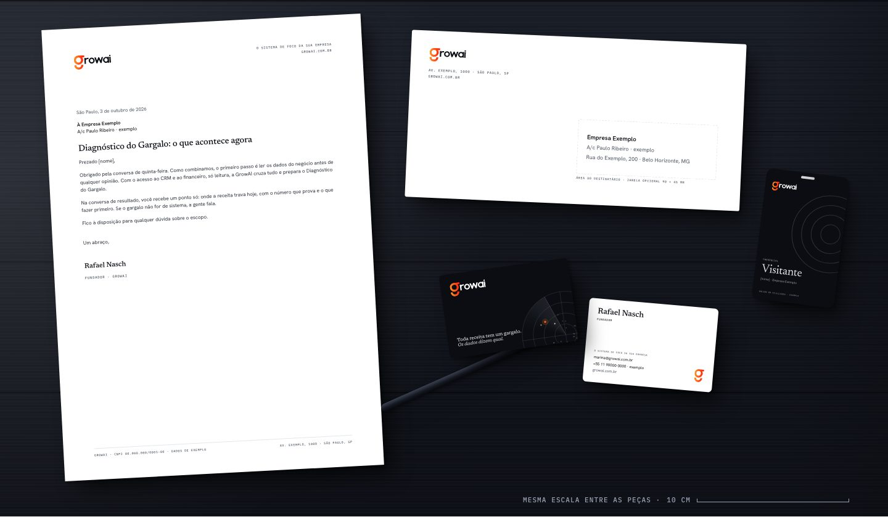
O sistema de foco da sua empresa
growai.com.br
São Paulo, 3 de outubro de 2026
À Empresa Exemplo
A/c Paulo Ribeiro · exemplo
Diagnóstico do Gargalo: o que acontece agora
Prezado [nome],
Obrigado pela conversa de quinta-feira. Como combinamos, o primeiro passo é ler os dados do negócio antes de qualquer opinião. Com o acesso ao CRM e ao financeiro, só leitura, a GrowAI cruza tudo e prepara o Diagnóstico do Gargalo.
Na conversa de resultado, você recebe um ponto só: onde a receita trava hoje, com o número que prova e o que fazer primeiro. Se o gargalo não for de sistema, a gente fala.
Fico à disposição para qualquer dúvida sobre o escopo.
Um abraço,
Rafael Nasch
Fundador · GrowAI
GrowAI · CNPJ 00.000.000/0001-00 · dados de exemplo
Av. Exemplo, 1000 · São Paulo, SP
Av. Exemplo, 1000 · São Paulo, SP
growai.com.br
Empresa Exemplo
A/c Paulo Ribeiro · exemplo
Rua do Exemplo, 200 · Belo Horizonte, MG
Área do destinatário · janela opcional 90 × 45 mm
Credencial
Visitante
[nome] · Empresa Exemplo
Válido em 12/11/2026 · exemplo
Rafael Nasch
Fundador
O sistema de foco da sua empresa
marina@growai.com.br
+55 11 90000-0000 · exemplo
growai.com.br
Toda receita tem um gargalo. Os dados dizem qual.
38.1 · Cartão de visita
A frente é da marca: o logo, o radar em recorte e a assinatura. O verso é de quem entrega: nome, papel e como falar com ela. Nada de foto, QR em destaque ou lista de serviços.
Toda receita tem um gargalo. Os dados dizem qual.
Rafael Nasch
Fundador
O sistema de foco da sua empresa
marina@growai.com.br
+55 11 90000-0000 · exemplo
growai.com.br
Numa tela calibrada, o cartão ao lado tem 85 mm de largura.No celular, o cartão aparece ampliado. O nome no verso sai com cerca de 15 pt e o contato com 7 pt, o mínimo para ler sem esforço. Nunca diminua mais.
38.2 · Papel timbrado
O timbrado tem três elementos: o logo no alto à esquerda, a categoria no alto à direita e os dados legais no rodapé. Todo o resto é a carta, em uma coluna, com a voz da GrowAI.
O sistema de foco da sua empresa
growai.com.br
São Paulo, 3 de outubro de 2026
À Empresa Exemplo
A/c Paulo Ribeiro · exemplo
Diagnóstico do Gargalo: o que acontece agora
Prezado [nome],
Obrigado pela conversa de quinta-feira. Como combinamos, o primeiro passo é ler os dados do negócio antes de qualquer opinião. Com o acesso ao CRM e ao financeiro, só leitura, a GrowAI cruza tudo e prepara o Diagnóstico do Gargalo.
Na conversa de resultado, você recebe um ponto só: onde a receita trava hoje, com o número que prova e o que fazer primeiro. Se o gargalo não for de sistema, a gente fala.
Fico à disposição para qualquer dúvida sobre o escopo.
Um abraço,
Rafael Nasch
Fundador · GrowAI
GrowAI · CNPJ 00.000.000/0001-00 · dados de exemplo
Av. Exemplo, 1000 · São Paulo, SP
O sistema de foco da sua empresa
growai.com.br
GrowAI · CNPJ 00.000.000/0001-00 · dados de exemplo
Av. Exemplo, 1000 · São Paulo, SP
38.3 · Envelope e crachá
O envelope DL é branco por fora, para o correio, e noite por dentro da aba, com o ponto de foco que aparece quando ele abre. O crachá leva o rosto: quem está na sala precisa ser reconhecido.
Av. Exemplo, 1000 · São Paulo, SP
growai.com.br
Empresa Exemplo
A/c Paulo Ribeiro · exemplo
Rua do Exemplo, 200 · Belo Horizonte, MG
Área do destinatário · janela opcional 90 × 45 mm
Toda receita tem um gargalo. Os dados dizem qual.
Rafael Nasch
Fundador
Equipe GrowAI
Credencial
Visitante
[nome] · Empresa Exemplo
Válido em 12/11/2026 · exemplo
38.4 · Assinatura de e-mail
A assinatura é a peça da marca que mais circula. Por isso é a mais contida: traço laranja, nome, papel, a categoria com o endereço e o logo pequeno. Feita em tabela, para funcionar no Gmail e no Outlook.
Marina, o Raio-X mostrou que a decisão sem número segura o resto do negócio. No Diagnóstico do Gargalo a gente prova isso com os seus dados e define a primeira frente.
Mando o acesso de leitura do CRM na segunda?
|
Rafael Nasch
Fundador · GrowAI
O sistema de foco da sua empresa · growai.com.br
|
Arial na assinatura: a Hanken Grotesk não chega na caixa de entrada de quem recebe. O traço é o único laranja; o logo segue o degradê oficial.
Marina, o Raio-X mostrou que a decisão sem número segura o resto do negócio.
Banner em degradê, nome escrito errado, “10x”, consultoria gratuita, quatro cores de ícone e aviso legal maior que a mensagem.
Copie o código, troque os colchetes e cole no campo de assinatura em modo HTML. O logo vem da página publicada do brand book; não anexe a imagem.
<table cellpadding="0" cellspacing="0" border="0" style="font-family:Arial,Helvetica,sans-serif;color:#0C0F14">
<tr>
<td style="border-left:3px solid #FF6A1A;padding-left:12px">
<div style="font-size:15px;font-weight:bold">[Nome Sobrenome]</div>
<div style="font-size:13px;color:#4A525E">[Papel] · GrowAI</div>
<div style="font-size:12px;color:#4A525E;padding-top:4px">O sistema de foco da sua empresa · <a href="https://growai.com.br" style="color:#4A525E;text-decoration:underline">growai.com.br</a></div>
<img src="https://rafaelnasch.github.io/branding-growai/assets/growai-logo-oficial-web.png" alt="GrowAI" width="96" style="display:block;margin-top:8px;border:0;width:96px;height:auto">
</td>
</tr>
</table>Deslize o código para o lado →
38.5 · Especificação de impressão
Arquivo em PDF com fontes convertidas em curva, 3 mm de sangria e marcas de corte. Papel e acabamento abaixo são sugestões: valide cor e gramatura numa prova impressa antes da tiragem.
| Peça | Formato | Sangria · área segura | Papel sugerido | Cores |
|---|---|---|---|---|
| Cartão de visita | 85 × 55 mm | 3 mm · 4 mm | Couché fosco 350 g/m², laminação fosca | 4/4 · frente noite chapada |
| Papel timbrado | A4 · 210 × 297 mm | sem sangria · margem 20 mm | Offset 90 g/m² | 4/0 · ou PDF digital |
| Envelope | DL · 220 × 110 mm | 3 mm · 6 mm | Offset 120 g/m² | 4/1 · aba interna noite |
| Crachá | 54 × 86 mm | 3 mm · 4 mm | PVC branco 0,76 mm ou couché 300 g/m² com plástico | 4/4 |
Deslize a tabela para o lado →
Impressão em um tom usa growai-logo-preto ou growai-logo-branco. O degradê do “g” nunca vira laranja chapado.
Abaixo disso, só o símbolo. É por isso que o verso do cartão e o cabeçalho de documento usam o “g” sozinho.
Num evento, a marca é vista de longe, por pouco tempo e por muita gente ao mesmo tempo. Vale a mesma regra do deck: noite, uma frase, um ponto aceso. Só que em metros.
39.1 · Palco e telão
O telão é noite, sempre. Na luz baixa de um auditório, fundo branco ofusca e apaga o palestrante. O radar ocupa o lado, a frase ocupa o resto, e nada fica abaixo de 40 px no arquivo.
Encontro de donos · São Paulo
Toda receita tem um gargalo. Os dados dizem qual.
Encontro de donos · São Paulo
Toda receita tem um gargalo. Os dados dizem qual.
Próximo passo
Faça o Raio-X do seu negócio.
growai.com.br/raio-x · leva 7 minutos (exemplo)
Nenhum texto do telão abaixo de 40 px num arquivo de 1920 × 1080. Título entre 96 e 150 px.
O telão acompanha a fala, não a substitui. Parágrafo vai para o material de apoio.
Em tela de LED, o radar pode girar na velocidade da marca. Mais rápido que isso vira efeito.
No palco da GrowAI, parceiro aparece só no slide de agradecimento, nunca em grade de logos no telão.
39.2 · Backdrop e roll-up
O backdrop da GrowAI não repete o logo em xadrez. A foto que sai dali mostra a pessoa, o radar e a assinatura, e a assinatura é lida mesmo cortada no celular de quem fotografou.
Toda receita tem um gargalo. Os dados dizem qual.
O sistema de foco da sua empresa · growai.com.br
Toda receita tem um gargalo. Os dados dizem qual.
O sistema de foco da sua empresa · growai.com.br
Um laranja: o ponto do radar. A frase fica em itálico claro, o rastro da varredura em cinza. Logo e frase à esquerda; quem posa fica à direita, com o radar atrás do ombro.
Logo repetido em grade, logos de patrocinador do mesmo tamanho do nosso, ou foto de pessoa impressa no backdrop atrás de pessoas de verdade.
39.3 · Credencial
Credencial de evento é para conversar, então o nome é o maior elemento. O tipo de credencial se lê pela palavra, não pela cor. A faixa colorida diz de qual linha é o evento, e a última linha abre a conversa.
Masterclass · 12 de novembro de 2026 · São Paulo
Marina Duarte
Empresa Exemplo · sócia
Quero conversar sobre
proposta parada
Participante
GrowAI Educação
Masterclass · 12 de novembro de 2026 · São Paulo
Rafael Nasch
GrowAI · fundador
Quero conversar sobre
o gargalo da sua receita
Palestrante
GrowAI Educação
Masterclass · 12 de novembro de 2026 · São Paulo
Marina
GrowAI
Quero conversar sobre
o Raio-X do Negócio
Equipe
GrowAI Educação
Marina Duarte e Empresa Exemplo são nomes fictícios de exemplo. Credencial real usa só o nome que a pessoa informou na inscrição.
39.4 · Sinalização de sala
Placa de porta diz o que acontece ali e quando. Placa direcional diz para onde ir, com uma seta e um nome. Nada além disso.
Sala 2 · Térreo
GrowAI Strategy · oficina
Diagnóstico ao vivo
Horário
14h às 15h30
Com
Marina Duarte
Lugares
24 · exemplo
Auditório · palestras
Palco principal
39.5 · Camiseta, caneca e sacola
Brinde bom continua na mesa um ano depois. Por isso a GrowAI faz poucos, em cores sóbrias, com um elemento por peça e o logo em uma cor quando a técnica de impressão não reproduz o degradê.
Noite. Símbolo branco de 8 cm de altura no peito esquerdo, em serigrafia de uma cor.
A assinatura centralizada, com 25 cm de largura, e o ponto laranja como único detalhe de cor.
Branca, 325 ml. Logo oficial com degradê (a sublimação reproduz) e um princípio da marca numa faixa de 9 cm.
Algodão cru tingido noite, alças de lona costuradas, logo branco e a síntese da marca numa área de 25 cm. Nada de laranja chapado.
39.6 · Especificação
Medidas de referência. Confirme com o fornecedor do evento o tamanho exato da tela, da estrutura e da área de impressão antes de fechar o arquivo.
| Peça | Formato | Arquivo | Logo | Observação |
|---|---|---|---|---|
| Telão | 1920 × 1080 px · 16:9 | slides do deck ou PNG | claro | noite sempre; texto ≥ 40 px |
| Backdrop | 300 × 200 cm | PDF vetorial · imagens a 100 dpi no tamanho final | claro, 60 cm de largura | sem grade de logos |
| Roll-up | 85 × 200 cm | PDF vetorial · 10 cm de sobra na base | claro | base de 20 cm fica escondida no pé |
| Credencial | 10 × 14 cm | PDF com sangria de 3 mm | claro | nome ≥ 18 pt |
| Placa de porta | A3 · 420 × 297 mm | oficial | faixa na cor da linha | |
| Camiseta | área frontal 8 cm · costas 25 cm | vetor em uma cor | símbolo branco | serigrafia |
| Caneca | área de 20 × 9 cm | PNG 300 dpi | oficial | sublimação |
| Sacola | área de 25 × 25 cm | vetor em uma cor | branco | serigrafia sobre algodão noite |
Deslize a tabela para o lado →
O kit é o atalho entre este livro e a peça pronta: arquivos certos, formas para o Canva e pedidos que já saem no padrão. Quem usa o kit não redesenha nada.
40.1 · Os arquivos
Nunca redigite, recorte de um PDF ou baixe da busca de imagens. Cada versão existe em SVG (vetor, para tudo) e em PNG de 2400 px e de 960 px. Clique numa peça para baixar o SVG; os links embaixo trazem os PNG.
Logos, símbolo, avatar, lockups das linhas, formas do Radar, fontes indicadas e o marca.json. O mesmo pacote da página de Releases do repositório.
branding-growai/ ├─ SKILL.md o estilo travado, o que o Claude lê ├─ brand-book.html este livro ├─ deck-template.html apresentação, 16 tipos de slide ├─ lockup.html logos em data URI, assinaturas, textos-padrão ├─ guia-de-uso.html pedidos prontos por público ├─ gviz.js · gforms.js gráficos e formas, sem dependência ├─ autocontido.py gera o arquivo único para enviar ├─ exportar_pdf.py exporta PDF pelo Playwright ├─ dist/ versões de arquivo único, prontas para mandar └─ assets/ ├─ growai-logo-oficial|claro|preto|branco.svg + .png 2400 + -web.png 960 ├─ growai-simbolo-oficial|branco|preto.svg ├─ growai-avatar.svg · -1080.png · -640.png ├─ growai-favicon.svg · -32 · -180 · -512.png ├─ growai-linha-educacao|strategy|agentes-dia|noite.svg ├─ growai-compartilhamento-1200x630.png ├─ marca.json cores, degradê medido, medidas, versões ├─ formas/ radar, anéis, ponto, grade, caminho, ciclo └─ fotos/ banco aprovado + creditos.json
Deslize a árvore para o lado →
| Formato | Quando |
|---|---|
| SVG | Site, Canva, Figma, gráfica, qualquer tamanho |
| PNG 2400 | Apresentação, documento, vídeo |
| PNG web 960 | E-mail, assinatura, mensagem |
| data URI | HTML feito no claude.ai, que não enxerga a pasta assets (copie do lockup.html, nunca digite) |
Os SVGs são a reconstrução vetorial do logo, feita a partir do PNG original de 7856 px. O arquivo vetorial original segue como pendência.
40.2 · No Canva
No Canva, a marca entra como kit: cores, fontes, logos e as formas do Radar. Depois disso, qualquer pessoa do time monta um post no padrão sem abrir este livro.
Automatizar o caos só deixa o caos mais rápido.
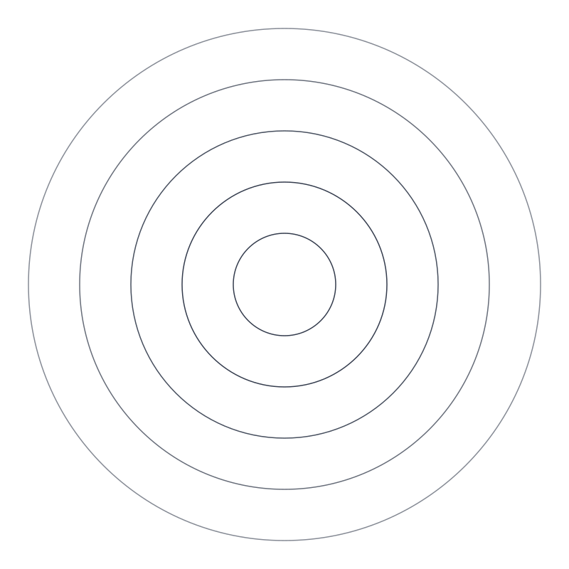
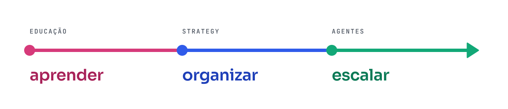
40.3 · Como pedir
Quem pede diz o que é, para qual linha, para quem e onde vai aparecer. Quem faz entrega no padrão e passa pelo checklist do capítulo 43 antes de publicar.
E o prazo, se houver.
Pela skill, no Canva ou por um designer.
Voz, número com fonte, um laranja, celular.
Aprova a marca e qualquer exceção.
Exceção vira nova versão, com data.
Para quem não usa a skill. Mande junto o link deste livro e a pasta assets/. Sem o briefing, a peça volta.
PEDIDO DE PEÇA · GrowAI O que é: [post, proposta, backdrop, cartão…] Linha: [marca-mãe | Educação | Strategy | Agentes] Para quem: [dono, líder, operador, mercado] Onde aparece: [canal, evento, impressão] Formato: [medida em px ou mm] A frase: [a ideia em uma frase] O número: [valor, fonte e período, ou "sem número"] Prazo: [data] Manual: rafaelnasch.github.io/branding-growai Arquivos: assets/ do pacote branding-growai
Deslize o código para o lado →
O SVG do kit: nítido em qualquer tamanho, com o degradê medido do “g”.
Ícone de 32 px ampliado, print de tela ou logo recortado de um PDF. Fica pixelado e perde a cor.
40.4 · Instalar e enviar
Com a skill instalada, o Claude já sabe cores, fontes, logo, voz e as regras de prova. Para mandar uma peça a quem não tem o pacote, gere o arquivo único.
# Claude Code git clone https://github.com/rafaelnasch/branding-growai.git \ ~/.claude/skills/branding-growai # Codex CLI git clone https://github.com/rafaelnasch/branding-growai.git \ ~/.codex/skills/branding-growai # atualizar cd ~/.claude/skills/branding-growai && git pull
# arquivo único: imagens, fontes e motores embutidos python3 autocontido.py minha-peca.html # sai em dist/minha-peca.html # PDF pelo Playwright python3 exportar_pdf.py minha-peca.html
Deslize o código para o lado →
Baixe branding-growai.zip na página de Releases do repositório e envie em Settings, Capabilities, Skills. Não use o “Download ZIP” do GitHub: a pasta sobe com o nome errado.
Landing page, apresentação ou documento de cliente usam a marca do cliente. O kit da GrowAI entra só no que leva a nossa assinatura.
Até a v3 circulavam quatro identidades ao mesmo tempo. A v4 fecha a conta: troca a tipografia, traz gente real para as fotos e diz em que ordem cada peça antiga sai de cena.
41.1 · A regra da troca
Refazer tudo de uma vez para a operação por semanas e não muda nenhuma venda. Por isso a troca acontece quando a peça volta a ser usada. A exceção é o que contradiz a marca: isso não espera.
Desmente a marca? Tira do ar.
Só está datada? Troca quando voltar.
Proposta, post, apresentação, impresso. Alguém abre o arquivo antigo.
Antes de editar o texto, a peça passa para o modelo deste livro.
Os 25 itens do capítulo 43. Um "não" segura a peça.
Fica uma versão só. Duas versões vivas viram duas marcas.
41.2 · O que sai e o que entra
A mesma tese, publicada na v3 e na v4. Cada fio liga uma diferença à linha do quadro que a explica. O que não tem fio continua igual.
A decisão trava sem dado.
Sora 600 com o destaque só na cor vira Newsreader 400 com o itálico do foco. O olho sabe onde parar.
Quadro · TítulosJetBrains Mono vira IBM Plex Mono. Mesma caixa alta, mesmo lugar, contraste mais alto sobre a foto.
Quadro · NúmerosO radar sozinho dá lugar a gente real com a grade Noite. A tese ganha um rosto; o radar continua nas capas e nos dados.
Quadro · FotografiaNão mudam. O mesmo arquivo claro, no mesmo canto, com o mesmo respiro.
Quadro · Fica como está41.2 · O quadro completo
A etiqueta da direita mostra de onde vem cada item: da v3 (outubro de 2026), de antes dela, ou se fica como está.
Fica como está
Tipografia e imagem
Superfície e cor
Nome, oferta e arquitetura
41.3 · Tipografia da v3 para a v4
A Sora virou a letra padrão de páginas montadas por IA: geométrica, limpa e sem dono. A Newsreader é uma serifa de jornal. Ela soa como alguém que estudou o assunto e assina o que diz, e o itálico dá ao gargalo uma voz própria.
Toda receita tem um gargalo. Os dados dizem qual.
Sora 500 e 600 viram Newsreader 400 no display (48 px ou mais) e 500 em títulos de seção e cards. Espaçamento −0,02em, entrelinha 0,98 a 1,1.
Source Sans 3 400 e 600 viram Hanken Grotesk 400 e 600. O 500 entra para botão e rótulo de campo. Tamanhos e entrelinha não mudam.
Troca direta, peso por peso (400 e 500). A Plex Mono tem números mais abertos e cabe melhor ao lado da Newsreader.
Duas superfícies seguem regras próprias. Nenhuma delas é refeita por causa desta versão.
<!-- sai (v3) --> <!-- family=Sora · Source+Sans+3 · JetBrains+Mono --> <!-- entra (v4) --> <link rel="preconnect" href="https://fonts.gstatic.com" crossorigin> <link rel="stylesheet" href="https://fonts.googleapis.com/css2?family=Newsreader:ital,opsz,wght@0,6..72,400;0,6..72,500;0,6..72,600;1,6..72,400;1,6..72,500&family=Hanken+Grotesk:wght@400;500;600;700&family=IBM+Plex+Mono:wght@400;500&display=swap">
41.4 · Fotografia com pessoas
O dono de empresa se reconhece em quem decide no balcão, no escritório, ao telefone. A regra "sem pessoas" caiu. Entrou outra, mais difícil: gente real, momento real, cor tratada.
41.5 · Onde trocar primeiro
A ordem vai do arquivo que gera tudo para a peça que menos circula. Quem produz recebe o arquivo novo antes de fazer qualquer coisa.
Este pacote: logos de assets/, fontes, modelos de peça e as fotos aprovadas. Modelos do Canva atualizados a partir dele.
Antes de tudoAssinatura de e-mail, foto e capa dos perfis, modelo de proposta e de apresentação.
Na primeira semana de usogrowai.com.br, páginas de linha, Raio-X do Negócio, página de obrigado.
Na próxima publicaçãoTodo post novo já sai na v4. O feed antigo fica como está: post publicado não é apagado.
A partir do próximo postCartão, papel timbrado, crachá, backdrop. Sem descartar estoque.
Na próxima tiragemRode as duas buscas na pasta de um projeto antes de entregar. A primeira ignora maiúsculas; a segunda não, para não acusar o GrowAI escrito certo. Cada ocorrência é uma peça que ainda não migrou.
# 1. fontes e ofertas (ignora maiúsculas) grep -rniE \ "Sora|Source Sans 3|JetBrains Mono|Satoshi|\ font-family:[^;]*Inter|Raio-X da Opera|\ sess[aã]o estrat[eé]gica" . # 2. grafia do nome (respeita maiúsculas) grep -rnE "Growai|GrowAi|Grow AI|GROWAI" .
:root{ /* sai: "Sora", "Source Sans 3", "JetBrains Mono" */ --ff-display:"Newsreader", Georgia, serif; --ff-texto:"Hanken Grotesk", Arial, Helvetica, sans-serif; --ff-mono:"IBM Plex Mono", "Courier New", monospace; } h1,h2,h3{font-family:var(--ff-display);font-optical-sizing:auto;font-weight:500} .display{font-weight:400;letter-spacing:-.02em;line-height:1} h1 em,h2 em{font-style:italic;color:#FF6A1A} /* um trecho por título */ body{font:400 18px/1.6 var(--ff-texto)} .rot{font:500 11.5px/1.4 var(--ff-mono);letter-spacing:.12em;text-transform:uppercase}
Uma pendência não autoriza ninguém a inventar. A peça sai com o colchete ou com a versão segura indicada aqui, e a decisão fica com Rafael Nasch.
42.1 · A regra do colchete
Um número inventado vira promessa. Um nome sem autorização vira problema. O colchete é feio de propósito: ninguém publica sem perceber que ele está ali.
Cada pendência abaixo tem um "enquanto isso". É a saída preferida: a peça fica pronta e correta.
Para rascunho, proposta em revisão e modelo. Sempre em minúsculas: [investimento], [nome do cliente].
Se nem a versão segura nem o colchete servem, a peça espera a decisão. Publicar depois é melhor do que publicar errado.
Estimar um preço, arredondar uma prova, "emprestar" o nome de um cliente ou trocar o dado que falta por um número plausível.
42.2 · As pendências abertas
Cinco vieram da v3: quatro continuam abertas e a das provas de cliente (P-02) foi resolvida em 04/10/2026. Quatro nasceram com a v4, junto da fotografia com pessoas e das cores para impressão.
O arquivo de origem não foi localizado.
Usar os SVGs reconstruídos a partir do PNG original de 7856 px: assets/growai-logo-*.svg. Nunca redesenhar.
Resolvida em 04/10/2026: nove casos publicados por segmento em growai.com.br/casos, sem nome de cliente.
Usar os casos com número, período e fonte exatamente como na página. Na peça curta, a prova principal: num e-commerce de embalagens, a fatia de oportunidades que vira venda passou de 4,7% para 10,3% em oito meses. Nome e logo só com autorização escrita.
O formulário existe como direção, não como versão final. Quantas perguntas e quanto tempo leva também estão em aberto.
Usar o exemplo do livro só como direção de layout. Não publicar pergunta, pontuação, número de perguntas nem duração como definitivos.
Depende de autorização por escrito de cada cliente.
Usar o segmento no lugar do nome: dona de clínica, dono de e-commerce.
Do Raio-X ao Diagnóstico do Gargalo e às três linhas.
Escrever [investimento] na peça. Nunca uma faixa estimada.
As equivalências do capítulo 12 são aproximadas.
Usar os valores marcados "a validar em prova" e pedir prova de cor à gráfica antes de qualquer tiragem.
O "g" sozinho foi medido em tela, não em papel.
Não imprimir o símbolo abaixo de 6 mm de largura. Em dúvida, usar o logo completo com 22 mm ou mais.
Fotos de gente real da GrowAI, com autorização de imagem assinada.
Usar só o banco licenciado e tratado de assets/fotos/, com crédito no capítulo 44. Foto de banco nunca passa por cliente.
O gerador de relatórios ainda usa o padrão Editorial de 20/09/2026.
Relatório gerado pelo padrão Editorial continua válido. Peça nova feita fora do gerador já sai em Newsreader e Hanken Grotesk.
Quem decide todas as pendências: Rafael Nasch, fundador. Uma pendência fechada sai desta lista na versão seguinte, com data (capítulo 44).
42.3 · O colchete na peça
No slide de investimento da proposta e no depoimento. Nos dois, a versão certa é a que mostra a lacuna ou troca o nome pelo segmento.
O próximo passo é o Diagnóstico do Gargalo.
[investimento]
Valor fechado na conversa de proposta.O campo aparece como lacuna, em cinza, no lugar exato do número. Quem revisa vê na hora o que falta.
O próximo passo é o Diagnóstico do Gargalo.
R$ 00.000
"Mais ou menos isso", estimado.exemplo de valor estimado · nunca publicarUm valor estimado vira compromisso no momento em que o cliente lê. Aqui os zeros são de propósito: nenhum preço da esteira foi decidido, e nem o exemplo pode parecer um preço real.
"Quando a gente olhou os números juntos, ficou óbvio onde estava travando."
O segmento identifica quem fala sem expor ninguém. Sem foto: rosto de banco ao lado de uma fala faz o leitor acreditar que é o cliente.
"Quando a gente olhou os números juntos, ficou óbvio onde estava travando."
Nome e empresa (aqui em colchetes) ao lado de uma foto de pessoa (aqui, a silhueta). Parece cliente de verdade, e é exatamente por isso que vira um depoimento falso.
42.4 · Como fechar uma pendência
Uma decisão que fica só na conversa volta a ser pendência na semana seguinte. Por isso ela entra nos arquivos, com data.
Rafael Nasch decide e a decisão é escrita com a data, numa frase.
O valor entra em marca.json, no capítulo do livro que trata do assunto e no SKILL.md.
Fechar pendência gera versão decimal (4.1, 4.2) e uma linha no histórico do capítulo 44.
Cada peça troca o colchete pelo dado na próxima vez que for usada, como na migração.
Escreva sempre igual, para que uma busca encontre todos. Minúsculas, entre colchetes, sem espaço depois do colchete.
[investimento] [nome do cliente] [empresa] [data a confirmar] [perguntas do raio-x] [vetor original] # antes de publicar: nenhum colchete pode sobrar grep -rnE "\[(investimento|nome do cliente|empresa|\ data a confirmar|\ perguntas do raio-x|vetor original)\]" .
25perguntas · 5 grupos · 1 "não" segura a peça
Vinte e cinco perguntas que cabem em três minutos. Quem produz confere; o que precisar de exceção a este livro vai para Rafael Nasch.
43.1 · Quem aprova e quando
Se toda peça esperasse o fundador, a marca andaria na velocidade da agenda dele. O checklist existe para que a regra decida sozinha e só o caso fora da regra suba.
Começa de um modelo deste livro, nunca de uma peça antiga.
Todos "sim". Um "não" volta para o passo 1.
Alguém que não fez a peça passa os olhos no celular, em 390 px.
A versão antiga, se existir, sai de circulação no mesmo dia.
43.2 · O checklist, para marcar
Marque aqui mesmo enquanto confere a peça. A contagem não fica salva: cada peça começa do zero.
43.3 · Uma peça conferida
À esquerda, o post que passa nos 25 itens, com cinco deles marcados. À direita, a versão que um "não" teria segurado: cada número aponta uma regra quebrada.
Falta de lead raramente é o problema. O problema é onde ele trava.
10x mais vendas, garantido.
+300%
Em Markdown, pronto para colar na tarefa da peça. Serve também para um agente conferir a peça antes de entregar.
## Checklist GrowAI · brand book v4 ### A. Essência e voz - [ ] Afirma em vez de prometer - [ ] Fala de negócio com o dono, não de "operação" - [ ] Nenhuma palavra proibida (solução, implementação, transformação digital, 10x, garantido, robô) - [ ] No máximo dois travessões, nenhum no título - [ ] Nome escrito GrowAI ### B. Arquitetura e oferta - [ ] Produto numa só linha (Educação, Strategy ou Agentes) - [ ] Cor da linha só identifica; logo e botão em laranja - [ ] Nenhuma ferramenta como produto - [ ] Nenhuma conversa gratuita; a porta é o Raio-X do Negócio - [ ] Preço indefinido escrito como [investimento] ### C. Visual - [ ] Só Newsreader, Hanken Grotesk e IBM Plex Mono - [ ] Itálico laranja em um trecho por título, no máximo - [ ] Um laranja de foco (ponto, barra ou itálico) e um botão de ação; com botão, o itálico fica na cor do texto - [ ] Botão laranja com texto #170A02 - [ ] Logo na versão certa para o fundo, respiro da altura do "o", mínimo 80 px (22 mm impresso), sem distorcer nem recolorir ### D. Fotografia - [ ] Foto do banco aprovado, em assets/fotos/, com crédito - [ ] Gente real em momento real, sem pose nem aperto de mão - [ ] Grade Noite, ou duotone com texto por cima - [ ] Nenhum rosto gerado por IA - [ ] Foto de banco não ilustra depoimento; prova de cliente nunca ao lado de rosto de banco ### E. Prova, dados e formato - [ ] Número com fonte e período - [ ] Número ilustrativo marcado "exemplo" - [ ] Resultado de cliente: só dos casos publicados em growai.com.br/casos, com número, período e fonte iguais; nome e logo só com autorização escrita - [ ] Formato no tamanho real, dentro das zonas seguras - [ ] Legível de 320 a 430 px, contraste AA, movimento reduzido
Cinco versões em dois meses, 51 fotografias, três famílias de letra e um conjunto de ícones. Tudo com nome, data e licença, para que qualquer pessoa possa refazer, conferir e continuar.
44.1 · Histórico de versões
Cada linha registra o que mudou e o que deixou de valer. Versão substituída não é referência para peça nova, mesmo que ainda circule.
Tipografia Editorial: Newsreader, Hanken Grotesk e IBM Plex Mono, com o itálico do foco. Fotografia documental com pessoas e tratamento grade Noite. Oito partes e 44 capítulos, com peças em tamanho real, web, redes, materiais e governança. Passa a valer quando Rafael Nasch aprovar; a data entra aqui no formato dd/mm/2026.
Nasce da entrevista de marca com Rafael Nasch: essência, três linhas, noite e dia, o Radar de Foco e o laranja só no foco. Sora, Source Sans 3 e JetBrains Mono. Sem pessoas nas imagens. Essência, linhas e cores continuam valendo na v4.
Padrão dos documentos internos, aprovado por Rafael Nasch. Continua válido nos relatórios gerados; a v4 recomenda a nova tipografia (pendência P-09).
Formas conceituais, fluxos e ícones. Satoshi e Inter, efeito de vidro e brilho. Tudo o que é vidro, orbe e capa roxa saiu na v3.
Motor de gráficos, regras editoriais e modelo de apresentação. É a origem do gviz.js usado até hoje.
Primeira versão do pacote: a identidade visual da GrowAI empacotada para agentes e pessoas usarem do mesmo jeito.
44.2 · Como versionar
Toda versão leva data, o que mudou e quem aprovou. Ela aparece na capa, no marca.json, no README e nesta página.
Troca algo que está nas peças: logo, cor, tipografia, fotografia, nome de linha. Peças antigas entram na migração do capítulo 41.
Acrescenta capítulo, modelo ou forma, fecha uma pendência ou corrige um erro. Nenhuma peça publicada fica errada por causa dela.
Copie, preencha e cole no topo do histórico. A data é a da aprovação, não a do arquivo.
marca.json ("sistema") · README · capítulo 44v4.1 · [data da aprovação] O que mudou: [uma frase por mudança] O que saiu: [o que deixa de valer, ou "nada"] Pendência: [P-0X fechada, ou "nenhuma"] Aprovado por: Rafael Nasch
44.3 · Créditos das fotografias
Cada foto usada em peça GrowAI está aqui, com autor e página de origem. A miniatura mostra a versão duotone; o arquivo de cor tratada tem o mesmo nome, sem o "-duo".
Licenças Unsplash e Pexels: uso comercial gratuito, sem exigência de crédito. Nenhuma é Unsplash+. A GrowAI credita mesmo assim. O retrato do fundador é da própria GrowAI.
Grade Noite e duotone noite aplicados por tools/grade.py. O original fica com a equipe de marca, fora do repositório público; as versões leves para a web saem em assets/fotos/web/.
assets/fotos/creditos.json guarda autor, perfil, página, licença e categoria de cada arquivo.
Donos e donas de PME decidindo, olhando tela, ao telefone
dono-noite-cidade.jpgSophie Paterson · Unsplash ↗dono-janela-notebook.jpgbruce mars · Unsplash ↗dono-decidindo.jpgODISSEI · Unsplash ↗dona-papeis-celular.jpgCentre for Ageing Better · Unsplash ↗dona-janela-cafe.jpgAdam Satria · Unsplash ↗dono-ligacao-escritorio.jpgVitaly Gariev · Unsplash ↗dona-ligacao-noite.jpgVitaly Gariev · Unsplash ↗dona-atelie.jpgFilipp Romanovski · Unsplash ↗dono-janela-pensando.jpgFarkas Mario · Unsplash ↗dona-mesa-amarela.jpgÂndrea Ferreira · Pexels ↗dono-escritorio-tela.jpgYan Krukau · Pexels ↗dona-caixas-celular.jpgKampus Production · Pexels ↗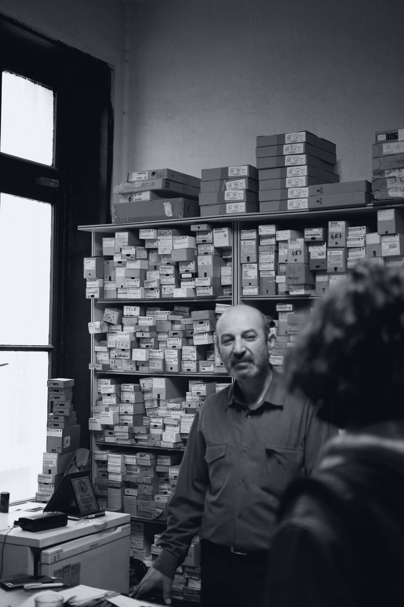
F13dono-estoque-conversa.jpgNina zeynep güler · Pexels ↗Times comerciais pequenos em reunião
time-mesa-documentos.jpgAndreea Avramescu · Unsplash ↗time-quadro-laranja.jpgPaymo · Unsplash ↗time-reuniao.jpgMapbox · Unsplash ↗time-dupla-notebook.jpgFlipsnack · Unsplash ↗time-olhando-numero.jpgMikhail Nilov · Pexels ↗lider-estoque-prancheta.jpgCentre for Ageing Better · Pexels ↗time-dupla-tela.jpgAnna Shvets · Pexels ↗Mãos, celular e notebook
operador-celular-parede.jpgChris Yang · Unsplash ↗operador-celular-notebook.jpgMaxim Ilyahov · Unsplash ↗operador-maos-teclado.jpgKaitlyn Baker · Unsplash ↗operador-celular-planilha.jpgPlann · Unsplash ↗operador-teclado-escuro.jpgLOGAN WEAVER | @LGNWVR · Unsplash ↗Ambientes por vertical (e-commerce, clínica, curso, agência, varejo, serviço)
ambiente-curso-gravacao.jpgKelly Huang · Unsplash ↗ambiente-curso-podcast.jpgAustin Distel · Unsplash ↗ambiente-agencia-criacao.jpgKumpan Electric · Unsplash ↗ambiente-balcao-pagamento.jpgChristiann Koepke · Unsplash ↗ambiente-padaria.jpgEkaterina Tyapkina · Unsplash ↗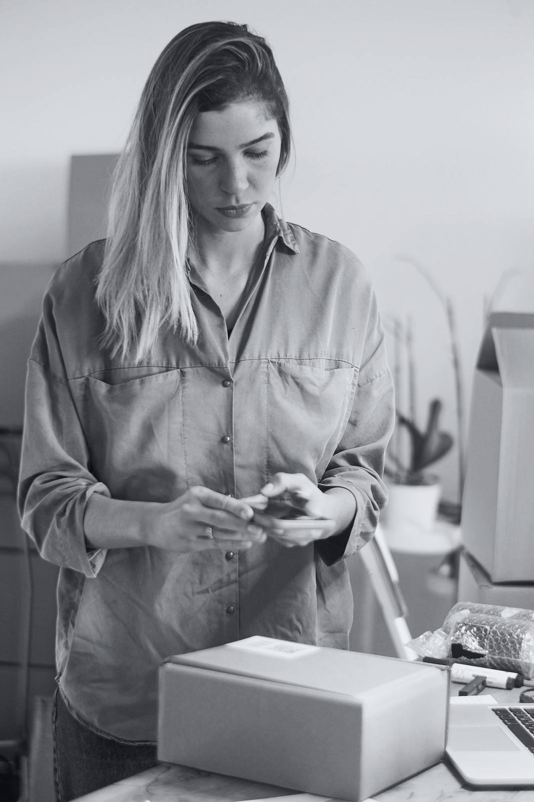
F31ambiente-ecommerce-pedido.jpgKampus Production · Pexels ↗ambiente-barbearia-bairro.jpgWallace Castro · Pexels ↗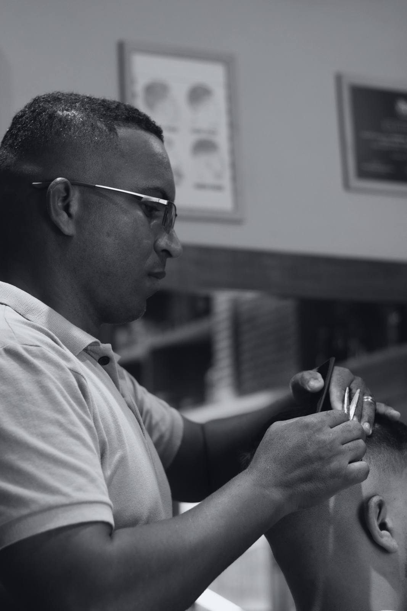
F33ambiente-barbeiro-tesoura.jpgBrian Silva · Pexels ↗ambiente-maquininha.jpgKaboompics (Karolina Grabowska) · Pexels ↗ambiente-clinica-anotacao.jpgTima Miroshnichenko · Pexels ↗ambiente-clinica-papelada.jpgIgor Kirillov · Pexels ↗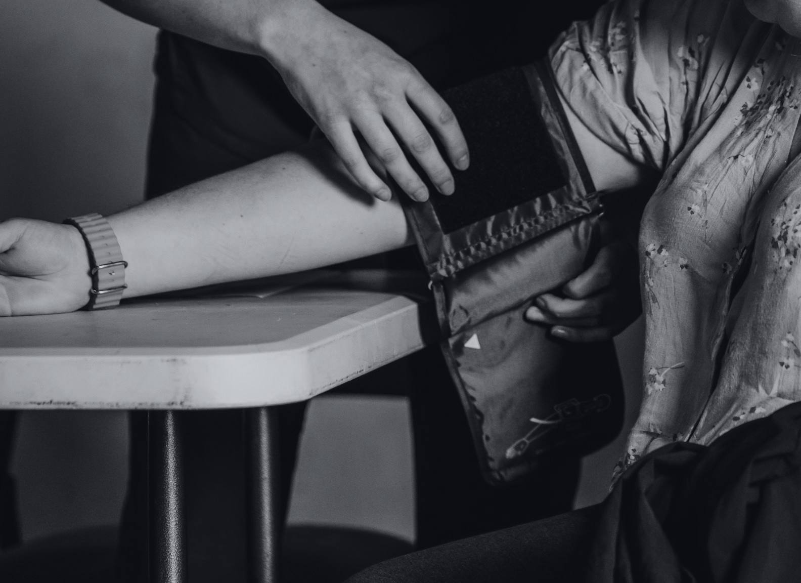
F37ambiente-clinica-atendimento.jpgElianna Gill · Unsplash ↗Tela, celular, caderno, café, luz de janela
detalhe-painel.jpgLuke Chesser · Unsplash ↗detalhe-celular-mensagem.jpgfreestocks · Unsplash ↗detalhe-caderno-escrita.jpgInfralist.com · Unsplash ↗detalhe-cafe-janela.jpgZach Ramelan · Unsplash ↗detalhe-calculadora.jpgFIN · Unsplash ↗detalhe-post-its.jpgKelly Sikkema · Unsplash ↗detalhe-anotacoes.jpgPaico Oficial · Unsplash ↗Fundos escuros abstratos e cidade à noite
textura-morro-noite.jpgRafael Peier · Unsplash ↗textura-cidade-noite.jpgFederico Velazco · Unsplash ↗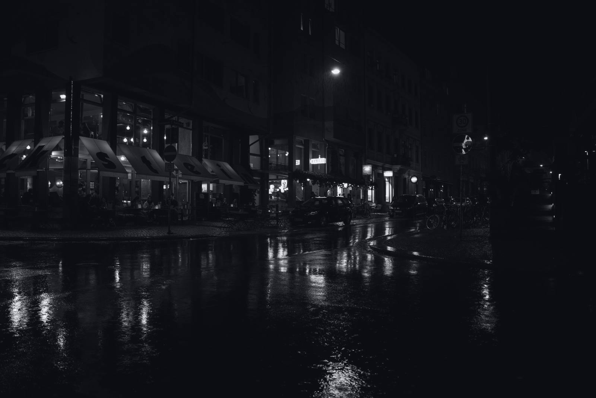
F47textura-rua-molhada.jpgLeon S · Unsplash ↗textura-linhas-laranja.jpgRob Farella · Unsplash ↗textura-rastro-luz.jpgtraf · Unsplash ↗Retrato oficial
rafael-nasch.jpgGrowAI (foto oficial do fundador)rafael-nasch-noite.jpgGrowAI (retrato oficial)Baixadas, avaliadas e recusadas. Listadas só em texto: as imagens saíram da pasta pública e não são publicadas, nem como exemplo.
dono-cafe-telefone.jpgPlaca em holandês espelhada na vitrine e cardápio em inglêsLouis Hansel · Unsplash ↗dono-balcao-loja.jpgBalcão e vitrine não leem como PME brasileira.Anil Reddy · Unsplash ↗time-quadro-giz.jpgClichê de brainstorm no quadro, com texto em inglês.Vitaly Gariev · Unsplash ↗time-mesa-redonda.jpgVitral de igreja ao fundoBluestonex · Unsplash ↗ambiente-ecommerce-etiqueta.jpgEstampa de personagem famoso no moletom e marcas de terceiros legíveis nas caixas (regra 18.9.1). Substituída por ambiente-ecommerce-pedido.jpg.GB The Green Brand · Unsplash ↗ambiente-clinica-consulta.jpgPaciente identificável na consulta (regra 18.9.1). Substituída por ambiente-clinica-anotacao.jpg.Ninthgrid · Unsplash ↗ambiente-clinica-dentista.jpgPaciente identificável na cadeira (regra 18.9.1).Ozkan Guner · Unsplash ↗ambiente-clinica-fisio.jpgRosto da paciente visível durante a aferição de pressão (regra 18.9.1). Use o recorte ambiente-clinica-atendimento.jpg.Elianna Gill · Unsplash ↗ambiente-barbearia.jpgCriança reconhecível no centro da cena (regra 18.9.1). Substituída por ambiente-barbearia-bairro.jpg.Kawê Rodrigues · Unsplash ↗44.4 · Fontes, ícones e ferramentas
As três famílias vêm do Google Fonts sob a SIL Open Font License 1.1: podem ser usadas, embutidas e distribuídas, inclusive em peça comercial. Os ícones são Lucide, sob licença ISC.
Production Type, para o Google Fonts. Display, títulos e o itálico do foco.
Alfredo Marco Pradil, Hanken Design Co. Texto, interface, botão e legenda.
Mike Abbink e Bold Monday, para a IBM. Números, rótulos, dados e código.
Os 15 ícones do pacote, em assets/icones/, com o aviso da licença em assets/icones/LICENSE-lucide.txt. Traço de 1,5 a 2 px, neutros; laranja só quando o ícone marca o foco.
Motor de gráficos da GrowAI. Próprio, sem biblioteca externa.
Motor das formas: radar, anéis, ponto de foco, grade, caminho, ciclo, ponteiro.
Reconstruído com potrace a partir do PNG original de 7856 px. O degradê do "g" foi medido no próprio arquivo.
Contorno dos nomes de linha nos lockups e das amostras de letra que saíram.
Tratamento das fotografias: grade Noite e duotone.
Capturas de conferência em 1440 e 390 px e exportação em PDF.
44.5 · Colofão
Este livro foi composto em Newsreader e Hanken Grotesk, com números em IBM Plex Mono. As fotografias receberam a grade Noite. Os gráficos e o radar foram desenhados por motores da própria casa. Cada página tem um ponto aceso.
Rafael NaschFundador da GrowAI. Aprova a marca e cada nova versão deste livro. Brand book GrowAI, sistema Radar de Foco, versão 4, outubro de 2026.
Fim da versão 4